    <div>
      <pre class="pre-val" #myDiv>
      
	post x-
		 Declaration Date
		
		The date on which the board of directors announces and approves the payment of a dividend. 
		
		The declaration includes the size of the dividend being issued
		
		For eg:-
		
		On April 11, in the Q4 result, TCS declared a dividend of Rs 22/share


		post x-
		Ex-Dividend Date
		
		The ex-dividend date is the first day that the stock trades ex of dividend i.e the share price will fall by the amount of dividend the company has declared.
		
		The ex-dividend date typically occurs up to three days before the record date
		
		post x-
		Record Date
		
		The record date,is the date on which the investor must be on the company’s books in order to receive a dividend.
		
		This is the most important date as all those shareholders whose name appears on the shareholding list will receive the dividend.
		
		post x-
		Payment Date
		
		The payment date is the date on which the dividend is paid to shareholders. 
		
		Dividend payments may be either mailed or electronically transferred to the accounts of shareholders.
		
Post 1-
BankNifty and what is the effect of RBIs policy on bank nifty - BNF strategy

BankNifty Index is comprised of 12-p liquid and large capitalised Indian Banking stocks. They are traded on the National Stock Exchange (NSE). It comes under equity derivatives.
Bank nifty includes these banks -Axis, Bandhan, Bank of Baroda, Federal, 
HDFC, ICICI, IDFC, IndusInd, Kotak Mahindra, Punjab National Bank, State Bank of India, RBL Bank.

This policy is related to the Repo rate. Repo rate can be defined as the rate at which RBI lends money to banks against any securities.

The economic/monetary RBI policy of the government has an impact on the market. It affects BankNifty, nifty, Sensex etc. This policy is announced at @10:00A.M or 11:00 A.M by the RBI governor. In the policy, they generally talk about a rate cut. 

After the policy announcement, the market will become very volatile means it can cross 400-500 points within 2-3 minutes.

Check the below link for more info about policy- rbi.org.in/
The next meeting of the MPC(Monetary Policy Committee) is scheduled during April 6-8, 2022.

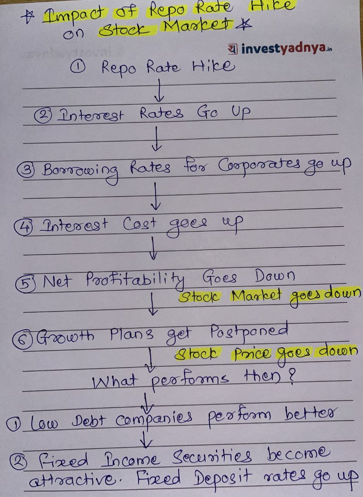

post x-
RBI
In India the Banking Sector is regulated by The Reserve
Bank of India (RBI).

post 2-
American Depositary Receipt (ADR) 
Allows foreign companies to list their shares on U.S. stock exchanges. The ADR is a proxy for the Indian shares to enable them to be traded in the American stock exchanges. 
From these stocks, you can predict the Indian stocks price movement. Because as we know on the basis of US market we predict the Indian market opening like that with stock prices we can also get how will this stock behave next day.

<a href="https://in.investing.com/equities/india-adrs" target="_blank">https://in.investing.com/equities/india-adrs</a>
on 3 factors we can track
Price
Performance
Technical

Post 3-
US 10 Yr yield
The 10-year yield is used as a proxy for mortgage rates. It's also seen as a sign of investor sentiment about the economy. A rising yield indicates falling demand for Treasury bonds, which means investors prefer higher-risk, higher-reward investments.

fed action or outcome effect on 10 year yield-
Action includes buying the bonds they yield after 10 years and it may affect the economy. Federal Reserve also raises interest rates, which tends to be bad for equities. In general, inflation is usually negative for stocks.

Fed is a federal reserve which you can say is US Central Bank.
US 10 Yr yield above 1.60%. Not good for emerging markets equities.
https://in.investing.com/rates-bonds/u.s.-10-year-bond-yield
https://in.investing.com/rates-bonds/u.s.-5-year-bond-yield


post 4-
Brent Crude- 
major benchmark price for purchases of oil worldwide.
India imports primarily from OPEC countries, Brent is the benchmark for oil prices in India.
Brent Crude at USD 87. Can't remain long with these figures
https://in.investing.com/commodities/brent-oil

Post 71-
WTI crude-
Brent is oil that is drilled out of the North Sea adjoining the UK and Norway while WTI Crude is extracted in the US.
The US uses West Texas Intermediate (WTI) as the benchmark.

Post 72-
Nickel commodity
Nickel is a silvery white shiny metal used primarily for corrosion-resistant alloys and to produce grades of stainless steel.

Post 73-
Stock and Commodity analysis- 
if crude increases then IOC stock also increases.
Commodities especially crude and nickel were up 8 and 70% respectively in trade. 
Nickel used primarily in production of stainless steel and EV battery rallied 70% on worry of supply from Russia. Vedanta and Hindcopper are the largest producer of the metal in India. 

Post 74-
OPEC countries
OPEC (Organization of the Petroleum Exporting Countries) is an intergovernmental organization oil demand supply market upstream downstream Vienna Austria.
OPEC is made up of 13 member nations. 
The current OPEC members are the following: Algeria, Angola, Equatorial Guinea, Gabon, Iran, Iraq, Kuwait, Libya, Nigeria, the Republic of the Congo, Saudi Arabia, the United Arab Emirates and Venezuela. Ecuador, Indonesia and Qatar are former OPEC members.


post 5-
US vix - CBOE Volatility Index
is an index created by CBOE Global Markets, which shows the market's expectation of 30-day volatility.
Basically, it represents the market's expectations for the relative strength of near-term price changes of the S&P 500 index (SPX).

https://in.investing.com/indices/volatility-s-p-500

post 6-
India VIX
representing the market's expectations for volatility over the coming 30 days. Investors use the VIX(Volatility Index) to measure the level of risk, fear, or stress in the market when making investment decisions.
low VIX  below 15 is good
vix should decrease with market rise.
https://www1.nseindia.com/live_market/dynaContent/live_watch/vix_home_page.htm

post 7-
securities in ban list
Market-Wide Position Limit or MWPL is a limit that defines the maximum number of unsettled option contracts for any given derivative stock. Currently, the MWPL for indian derivative stocks is 95%.

A security is under a ban period for F&O trading if its derivative contracts cross 95% of Market Wide Position Limits (MWPL). This means that the combined open interest of all F&O contracts for all the months taken together for that particular underlying crosses 95% of MWPL.

NSE Ban List section shows you Market-Wide Position Limit or MWPL for over 140 derivative NSE stocks. It also shows whether a stock is in Ban List or has chances of a possible entry in the near future.

If a stock has an MWPL above 80%, there are chances that it might enter the ban list in the near future

https://www1.nseindia.com/products/content/derivatives/equities/sec_ban.htm
https://www.niftytrader.in/ban-list

post 8-
Us dollar index - DXY
The US Dollar Index is a leading benchmark for the international value of the US dollar and the world's most widely-recognized, publicly-traded currency index
https://www.marketwatch.com/investing/index/dxy
Dollar Index above 96. Will not long bank nifty.
If rising above 100 due to bond yield rising.
If dollar price increases it may affect bank nifty also

post 9-
FII DII- 
Domestic Institutional Investors: DII
They get funding through SIPs from retailers. They have fund that we submit in mutual funds.

FII/FPI: Foreign Institutional investor/ Foreign Portfolio investment. 
It is an investment made by an investor in the market of the foreign nation.	
It has a huge influence on the Indian capital market. It is found that there is a positive correlation between DII and Indian major index NIFTY over the past 8 years. 
you can check the stock portfolios of these FIIs.

FII DII activity-
The global financial market has an influence on FII flows and DII flows in the Indian capital market.
FII investors play a big part in the Indian stock market. The general market sentiment is judged based on the buy/sell data of FII investors. 

The most favourite stock of FIIs are HDFC bank, Reliance Industries and Infosys ltd.

There is no direct correlation between the rise in FIIs holding and share price performance at least in a shorter duration.

Big investors such as mutual funds and FIIs are considered smart investors. Any increase in their activity gives retail investors an indication that the company is likely to perform better going ahead and there is a likely increase in its share prices. 

So that's why it is important to Check what future investors are doing (FII) 
largest FII Investor in India  - Government Of Singapore
https://www.nseindia.com/reports/fii-dii
https://www.moneycontrol.com/india-investors-portfolio/
you can also check stockedge for data. They update data till 8 pm by EOD.

post 10-
US market-
a proxy representation of the US stock market
The stock market is not just the hub of trades but also equipment to measure the country's economic performance on a real-time basis. As the US is one of the strongest economies
NYSE(New York Stock Exchange) - one of the largest stock exchanges in the world.
The Nasdaq is an American stock exchange that serves as a global electronic marketplace for securities trading. 
The US Trading Hours For NASDAQ and NYSE(New York Stock Exchang)
Pre-market trading hours-	1:30 PM to 7 PM IST
Normal trading hours-	7 PM to 1:30 AM IST
After-hours trading-	1:30 AM to 5:30 AM IST
indexes-
US S&P 500 
dow fut
Nasdaq
Time- IST, US time

Post 11-
Global market time of trading in various countries-
various Global Market indices. 
Basically, our Indian stock market depends on foreign markets. The International Markets includes Asian, Europeans, USA etc. which affects the Indian market. The index gives us a picture of the market.
Here is a list of popular foreign indices-
Canada's Toronto Stock Exchange opens at 9:30 a.m. and closes at 4 p.m. local time, with no break in trading for a lunch period.
In India, the trading time for the commodity (MCX) market is between 10:00 AM to 11:30 PM And for share market time is 9:15 am to 3:30 pm. 
Trading Hours in Europe
Euronext Paris opens at 9 a.m. and closes at 5:30 p.m. local time with no lunch period.
The Swiss Exchange opens at 9:00 a.m., closes at 5:30 p.m. local time and has no lunch period.
LONDON STOCK EXCHANGE (LSE)
1:30 PM to 10 PM IST


Market opening on basis of Other international markets-- 
Gapup/gapdown/Neutral
Market mood-  positive or negative
only buy on positive - sentiment  Negative sell 

https://in.investing.com/markets/
https://www.moneycontrol.com/markets/global-indices/
https://www.indmoney.com/us-stocks/us-stock-market-timings
https://www.niftytrader.in/
https://www.niftytrader.in/#globalmarket


a. Asian Market-
1- Straits Times Index 
Comprises of top 30 companies of  Singapore.

2- Hang Seng Index- Hong Kong tock Exchange -	6:45 AM- 1:30 PM

3- Japan
It comes under the Tokyo Stock Exchange (TSE).
Japan Exchange Group or JPX-  Nikkei 225
5:30 AM to 11:30 AM IST  (8 AM to 9 AM IST) -  lunch break
4- KOSPI- South Korea
5- SHANGHAI STOCK EXCHANGE AND SHENZHEN STOCK EXCHANGE - china (7 AM to 12:30 PM IST) (9 AM to 10:30 AM IST)  - lunch break

6- TWSE Taiwan 50 Index - Taiwan
7- NIFTY 50, SENSEX, BSE100, BSE500  - India
8- SGX Nifty
Singapore Nifty is also known as SGX Nifty. It is the Indian Nifty that is exchanged in the Singapore Stock Exchange. It is normally the first sign/direction of the Indian stock exchange. It is traded for 16 hours from 6:30 am to 11:30 pm, as per the Indian time (IST). so the trend of the Indian market can be derived from SGX Nifty. If this is +ve then Indian market will open positive and vice-versa. so check SGX nifty before 8:45 am also check nifty trend site at 8:45 am daily. 
prediction-
This is not a good thing if nifty in pre open-close below sgx. 

9- S&P/NZX 20 Index - New Zealand

b. European Markets-
1- FTSE 100
2- CAC 40
3- DAX
Tip: Track Europe market after 12.30 pm IST in SGX Nifty page for next trend of Nifty.

US market-
1- Nasdaq Composite
2- NYSE        
3- DOW JONES INDUSTRIAL AVERAGE INDEX
The USA has the largest stock market worldwide.


Post 98-
Stock strategy Pivot points-
They provide resistance and support.
Pivot point= (high+low+close)/3
R1= (Pivot*2)-low
S1=(Pivot*2)-high
R2=pivot+(R1-S1)
S2=pivot-(R1-S1)
R3=high+(pivot-low)*2
S3=Low-(High-pivot)*2
You can follow this simple strategy here if day low breaks then short sell it.

post 12-
Support and resistance (S&R) - Stock strategy
These  are specific price points on a chart expected to attract the maximum amount of either buying or selling.
you can also say them trend reversal levels.
support represents a low level a stock price reaches overtime, while resistance represents a high level a stock price reaches over time. 
Support is a price level where a downtrend can be expected to pause due to a concentration of demand or buying interest. 
if resistance cross you can make CE(call) positions if support cross then you can take PE(put) positions.
You can also say that these are Pivot points to take a trade.
It is suggested that don't take the positive position when Resistance is too high and support was too weak. 

Resistance is a price point at which the rise in the price of an asset is stopped by the emergence of a growing no. of sellers who wish to sell at that price. watch those stocks that have broken resistance levels and which move in the upward direction. such stocks are one of the favourite choices. The resistance price is a price at which one can demand more sellers than buyers.

The support price is a price at which one can assume more buyers than sellers. You Have to Buy Stocks on Support & Sell on Resistance.
To draw the support or resistance line on the chart select the free line or trend line. It needs two points same high, the same low and extends that line. It is like y =mx + c. start from these points.

if the support level is breached, the price of the stock continues to fall until it reaches a new support level. And if the resistance level is breached, the price of the stock continues to rise until it reaches a new resistance level.

Check resistance and supports of nifty, bank nifty and any stock. How this is helpful. learn how to form trading rules based on these lines.

Basic Technical Analysis - Concept of Support and Resistance	
draw support and resistance lines after 15 minutes				
Support and resistance levels								
How to find support and resistance of any stock	
https://intradayscreener.com/app/stocks/NIFTY%2050
https://intradayscreener.com/app/stocks/NIFTY%20BANK

post 97-
Trend lines- Stock strategy
The trend line shows us sideways, uptrend, downtrend.
They tell us about reversals, breakouts, patterns (flags, pennants, channels) etc.

If there are two red lines below of trend line then it is a downtrend otherwise if there are two green sticks then it is an uptrend. In the sideways trend, we cannot draw a trend line.
At 45 degrees we cannot put a trend line.

Post 13-
unwinding
The term “unwinding” refers to the process of closing out a trading position in the stock market.  Unwind means offloading or selling a position.
Unwinding is used to refer to the closing trades that require multiple steps, trades, or time.  If an investor takes a long position in stocks while at the same time selling puts on the same issue, they will need to unwind those trades at some point. This entails covering the options and selling the underlying stock.

Long unwinding is a derivative term used for futures meaning decrease in open interest with falling prices. It means price are declining.

Selling the stock that is already bought is long unwinding. basically exiting long trades in the position.

Buying a stock that has been already sold is Short covering.
here stock move from support to resistance.

post 14-
OI-Open Interest or open contracts or open commitment
High open interest for a given option contract implies a lot of people are interested in that option. However, high open interest doesn't surely mean the people trading that contract have the correct forecast on the stock. Open interest is not the same as volume. Future stocks are easier to predict due to OI data additionally.
open interest is used to identify potential trends and reversals in futures and options contracts. OI is a number that tells you how many futures (or Options) contracts are currently outstanding (open) in the market means total number of outstanding derivative contracts, such as options or futures that have not been settled.
Open interest equals the total number of bought or sold contracts, not the total of both added together.
every future trader must follow the Open Interest in futures as well as options contracts 

To get the market range you have to find the highest OI of call and put options.
It also give you safe Strike price-
If there is more OI in 11400put and 11500 Call then 11450 is a safe Strike price to do trading.

You can also check its change of OI it also shows the highest number of active contracts.
with this, you can check if the stock price getting increase or decrease.
You must also track Highest oi change in CE or PE side?
Get OI range from this.
max min OI basically indiactes support and resistance 
To find out that oi is by sentiments or by hedging?
call oi- resistance
put oi- support
high call oi above current price means resistance
high put oi below current price means support

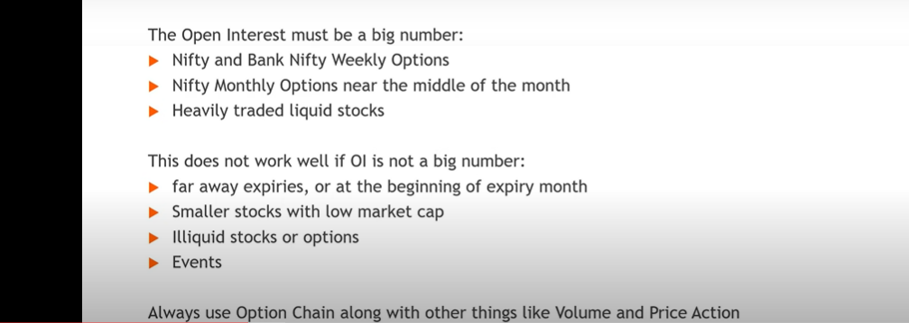


post x-
Top OI gainers 
https://trendlyne.com/futures-options/futures/oi-gainers/

post 15- 
PRICE VS OPEN INTEREST - option strategy
PRICE 	  		OPEN INTEREST 	PRICE TREND

Increases 			Increases 	Long positions being built up, Price may go up

Decreases 			Increase 	Short position built up , Price may go down

Increases 			Decreases 	Short covering may start anytime

Decreases 			Decrease	Long unwinding, correction may occur 

An increase in open interest along with an increase in price mostly indicates long positions being built up.

post 20-
PCR - Put call ratio: OI
It is calculated by dividing the total open interest of Puts by the total open interest of the Calls. The PCR is considered a contradictory indicator.

If the PCR is increasing during the correction in the up-trending market – this is a very bullish indication. An average put-call ratio of .7 for equities is considered a good basis for evaluating sentiment.

A rising put-call ratio, or a ratio greater than .7 or exceeding 1, means that equity traders are buying more puts than calls. It suggests that bearish sentiment is building in the market. And if it is less than 1, it means more calls have been traded.

if the ratio is less than 1 price will go up and if it is more than 1 then the price will go down. 
If the bar chart is higher then the market is bullish. If the put option is more then it shows support.
if the call bar chart is higher then the market is bearish. If the call option is more then it shows resistance.
https://www.indiainfoline.com/markets/derivatives/put-call-ratio


If the PCR is >1.25 = buy call 
If the PCR is < 0.75 = buy put

Also we have PCR Volume which is Put Volume / Call Volume

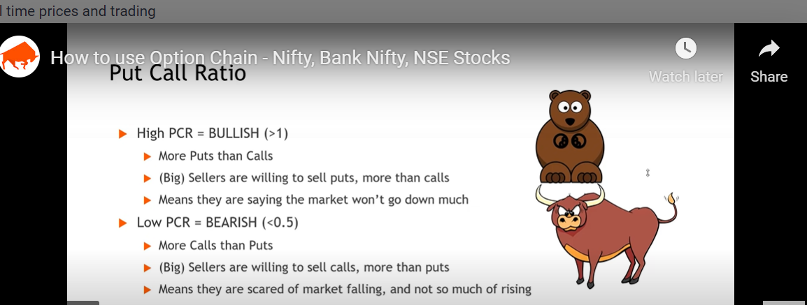

post 16-
oi spurts
Open Interest Spurts is an OI data available in NSE (National Stock Exchange of India Ltd) showing the change in Open Interest of all the derivative contracts from the previous trading day in descending fashion i.e Contracts with a maximum change in Open Interest will be shown on top.
the total number of outstanding contracts that are held by market participants at the end of the day. it gives these volatile stocks you can trade on this. Give good points
Nseindia-> live market -> live analysis- > oi spurts
it only shows max OI.
https://www.nseindia.com/market-data/oi-spurts

post 17-
implied volatility(IV)
It shows the market's opinion of the stock's potential moves, but it doesn't forecast direction. If the implied volatility is high, the market thinks the stock has potential for large price swings in either direction, just as low IV implies the stock will not move as much by option expiration.
Understanding Volatility – Historical and Implied

post x-
Government Credit Schemes
Educational Loans through Vidyalakshmi Portal
 Easy and effective system of getting educational
loans so that no student leaves his/her education
mid-way due to lack of funds
 Common education loan application form is
available for students. Visit: www.vidyalakshmi.co.in

post x-
Pradhan MantriAwasYojana (PMAY)
 Credit Linked Subsidy Scheme for Lower Income
Group/ Economically Weaker section and middle
income group.
 Individuals are eligible to avail subsidy when they are
purchasing their first house or it is a new construction
Visit:https://pmaymis.gov.in

post x-
IVP in options
Two instruments for tracking historical volatility are the Implied Volatility Percentile (IVP) and the Implied Volatility Rank (IVR). 
Knowing the relationship between implied volatility (IV) and the current IV percentile might help you decide if an option is more affordable or costly.
A high IVP number, typically above 80, says that IV is high, and a low IVP, typically below 20, says that IV is low.
IV percentile is a useful indicator to quickly identify whether a particular stock’s IV is high or low. This, in turn, can tell us whether a debit or credit strategy is the prudent choice in the situation.
If current IV is high. As a result, options will become more expensive or “rich.”

post 18-
Out the money(OTM)-
A call option is said to be OTM if the strike price is more than the current price.
CMP-strike< 0
A put option is said to be OTM if the strike price is less than the current price.
CMP-strike>0

At the money(ATM)-
A call and put option are said to be ATM if the strike price is equal to the current price.
Spot-strike=0

In the money(ITM)-
A call option is said to be ITM if the strike price is less than the current price.
CMP-strike>0
A put option is said to be ITM if the strike price is more than the current price.
CMP-strike< 0
Suppose the current market nifty is 10898.

post 19-
delta- 
one of the major risk measure used by options traders. 
The value of the delta is one of the many outputs from the Black & Scholes option pricing formula. 
The output includes the option's delta value and other Greeks. 
The delta changes with changes in the value of the spot price.  
Delta helps us evaluate the premium value based on the directional move in the underlying. 
This is extremely useful information to have while trading options.

if a call option has a delta of 0.35 and the price increases by one Rupee, the option's price should increase by 35 paise.

Delta measures how much an option's price can be expected to move for every $1 change in the price of the underlying security or index. For example, a Delta of 0.40 means the option's price will theoretically move $0.40 for every $1 change in the price of the underlying stock or index.
Delta .4 means if underline stock up 100 points the option you bought will go 40 points up. Every 1 point change underlying the premium change by .4 points.

OTM options have a delta of close to 0. specifically 0 to .5
ATM options have a delta of 0.5 or around
ITM option has a delta between  .5 to 1 close to 1
The delta values usually fall within the range of 1 to -1. 

find Delta of any option strike
enter delta value, premium value enter current, market points up or down, calculate final value.more delta more profit	

post x-
Options Pricing - The black scholes and binomial model								
Black & Scholes option pricing formula employs four forces as inputs to give out a price for the premium.	
To Calculate Option greeks-
https://zerodha.com/tools/black-scholes/			

post x-
	which delta is better				
	delta1	delta2	assumption - point		
	0.05	0.2	100 points up		
change in premium	100 * 0.05 = 5	100 * 0.2 = 20			
		.2 is preferable to buy			

post x-
Delta neutral Strategies - option strategy
Delta neutral is a portfolio strategy that utilizes multiple positions with balancing positive and negative deltas so the overall delta of the assets totals zero. A delta-neutral portfolio evens out the response to market movements for a certain range to bring the net change of the position to zero.

All the hedge funds use Delta as a tool to build strategies.

As the put options have the inverse price relationship with the call, Deltas also have an inverse relationship, which means that put options have negative (minus) Delta. If you have a stock in your portfolio, it will effectively have a Delta value of 1. 

(0-1) CE and (-1 to 0) PE 

For instance, by using options alone, a trader can produce a delta neutral position in the following manner-

The trader can buy an ATM call option with a delta value 0.5 and an ATM put option with the value -0.5, to create a 0 or neutral delta value.
5 (call) - 0.5 (put) = 0 (neutral)
Similarly, traders can create a delta neutral position using options and stocks simultaneously in the following way,

The investor can buy 2 put options (100 contracts each) with the delta value -0.5, while owning 100 shares of the stock, to construct a neutral position.
(2 x 100 x -0.5) - 100 (shares) = 0 (neutral)

   

Volatility-
buy the call & put (ATM) option. apply this strategy near to the expiry. 
Volatility refers to the deviations in the price of an underlying asset. Traders can get profits out of volatility by constructing a delta neutral position.

It is because highly volatile stocks are expensive while less volatile ones are cheaper.  The following example can explain more about the use of volatility to make profits.

A company trading its stock at Rs.100. The money call and put options are trading at Rs.3 each.
Traders need to buy one call and put a contract (with 100 options each) at a strike price of Rs.100. The delta value of the call option would be 0.5 and that of the put option -0.5.
The overall delta value would be neutral and the total cost for the trader would be Rs.600.
The trader gets a profit when the stock becomes volatile. Profit can be made from calls if the stock price rises and from puts if the stock price goes down. Moreover, the trader can even make a fair amount of profit even if the stock exhibits a neutral trend.
This strategy is comparatively better than the effects of time decay.

Profit from hedging-  
Options are basically designed to hedge the portfolio. They can protect from unexpected movement in the price, which is against the portfolio. All the hedge funds use options as a tool to hedge the portfolio. Delta neutral strategies to hedge the portfolio are a popular method to use. For example, if you have a stock in your portfolio equal to the derivative lot size. Delta of your stock is one. You can hedge this by buying two lots of ATM puts or selling two lots of ATM calls. So, the options will also have one Delta. If the stock prices plummet, the options will give compensation for the loss. If the stock price moves upside, the options will have negative returns, which can compensate for the stock price movements.  

post x-
Time decay (theta) related to delta-
If we apply a short straddle, i.e. sell call and put of ATM, it will have a 0 Delta
Consider a company trading its stock at 100, with both at the money call and put options trading at 3 each.
The strike is 100 and the delta value of the call option is 0.5 and the delta value of the put option is -0.5.
The trader can sell a call and put contracts (with 100 options each) to create a delta neutral position with the credit of 600.
3 x 200(100 call and put options) = 600
as near as to the expiry, the probability is higher to get the profit.

post 21
Breakout strategy- 
check after 9:15
A breakout is a stock price moving outside a defined support or resistance level with increased volume. A breakout trader enters a long position after the stock price breaks above resistance or enters a short position after the stock breaks below support. You can check stocks breakout and trade.

Time Period Breakouts-
52-Week High Breakouts - 
suggestion: sell when the stock price declines 10% from the highs. It is also a good opportunity to buy on dips. 
Intra Day High Breakouts-
5 min, 15min, 30 / 50 / 150 Days Simple Moving Average-
https://www.nseindia.com/market-data/new-52-week-high-low-equity-market
https://chartink.com/screener/15-minute-stock-breakouts

Types of Breakouts-
Reversal Breakouts:
reversal breakout forms when downtrending prices sharply reverse and spike higher on heavy volume. This occurs from a combination of frantic short covering and bargain shoppers flooding into the stock.
https://chartink.com/screener/trend-reversal-after-high-low-breakout

Consolidation Breakouts: flat trading
https://chartink.com/screener/tight-consolidation-breakout-pivot

Triangle Breakouts:
These breakouts occur when the resistance level is flat but the support level steadily rises. This indicates that motivated buyers are becoming impatient and slowly increasing their bid prices causing the pullbacks to progressively become shallower. Eventually, there are no more pullbacks as buyers swarm in causing prices to breakout through resistance. This pattern is also identified as an ascending triangle breakout.
https://chartink.com/screener/triangular-pattern-breakout

Another analysis-
Bullish signs were given from morning only Tringular Pattern Breakout + 200 Moving Average + Bullish Engulfin.

Trendline breakout: 
https://chartink.com/screener/trendline-breakout

post x-
how to identify a successful breakout:
a big breakout candle
Absence of sellers (selling wick should not come) and
A decent increase in volume
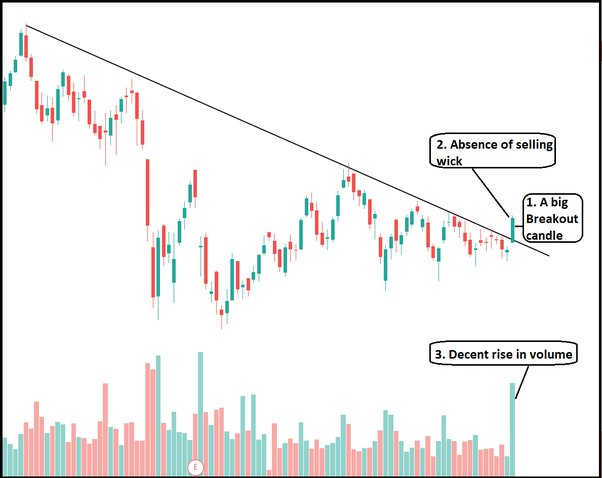
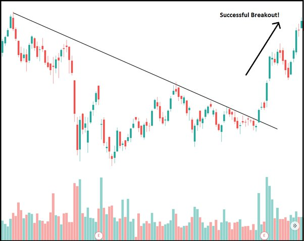

post x-
Yield curve inversion 
when short term tenure interest rates go above long term interest rates. This is a sign of recession

post 22-
Trading setup
For validation set different views on the Zerodha chart to confirm your strategy
Time frames for intraday-  3 min, 5 min, 10 min, 15 min
15 minutes is the best timeframe to check
Time frames for swing trade - 1 hour
Indicators- moving averages, Bollinger band, RSI, MACD
Set Candlesticks or Heiken-Ashi chart

Post 24-
VWAP (Volume Weighted Average Price) - 
it effectively tells what is the average price of all the positions that got traded today. The simplest thing people do is use this as a reference for bullishness or bearishness.
Average Price of Your Stock Positions.
You can add this indicator in your chart			
A stock is considered to be bullish when it is trading above VWAP and more bullish if it is trading above 9EMA.
A stock is considered to be bearish when it is trading below VWAP and more bearish if it is trading below 9EMA.

This will happen after market hours-			
3:30 to 3:40-VWAP 


Post 23-
moving averages Indicator- Stock strategy
it is the price data over a specified period of time by creating a constantly updated average price. Moving Average is a trend indicator which is an average of closing prices in a time frame that can help identify a trading opportunity.
It is a trend following indicator easy to find the trend is volatile or not.
Volatile means it does not have any direction. Moving Average Indicators allow you to easily identify the “average” price of an asset over a specific period. A moving average is a number calculated from the total of closing prices over a defined period. MA Is based on past prices used as a lagging indicator. You can also identify support and resistance level indicators with this.
Basically, it is used to identify trends and confirm reversals. If the price is above the MA line then we consider its uptrend in the market. If the price is below the MA line then it is a downtrend. The breaking of the MA line implies the trend reversal.
200 days MA is The average stock price of the stock in the last 200 days.
There are various trends that you can analyse from it.
For intraday(short term trends) use- 10-20-period
For medium-term- 44-50-period
For long term- 200-period Moving Average
50 and 200 days MA is a popular strategy.

Post x-
MA strategy- Stock strategy
When a small moving average crosses larger than it suggests buy position otherwise sell it.
volatility consists of 9, 25 lines. 
when 9 crosses 25 lines then buy it also RSI must be greater than 60 and volume must be greater than the last bar. when 25 crosses 9 then short sell it.
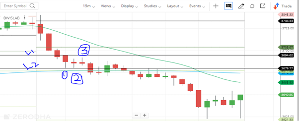


post x-
death and golden cross - Stock strategy
A golden cross indicates a long-term bull market going forward, while a death cross signals a long-term bear market.
A Golden Cross is a basic technical indicator that occurs in the market when a short-term moving average (50-day) of an asset rises above a long-term moving average (200-day). When traders see a Golden Cross occur, they view this chart pattern as indicative of a strong bull market.


post x-
four types of MA-
With these types of moving average, you also have to decide the period. 
1- SMA (Simple)

2- EMA- exponential moving average- period

3- Weighted (WMA)

4- DMA

post x-
SMA
Simple moving averages focus solely on the mean price within a period.
For example, 10-day SMA sums up the past 10 prices.
A 50-day SMA or 52-week high/low Adds up the closing prices over the past 50 trading sessions, then divides that result by 50.

post x-
EMA
It stands for Exponentially weighted average. It is also known as the fast-moving Average. It validates that recent data is more appropriate.
Most useful and popular chart indicators.
Using the EMA, you can spot buy and sell signals and create a technical system for trading stocks.
It is a data point derived from historical closing prices.
EMA levels are good to fair levels to buy. EMA is very similar to SMA, wherein more weight is given to the recent stock price in the last 200 days.
The exponential moving average (EMA) gives a higher weighting to recent prices, while the simple moving average (SMA) assigns an equal weighting to all values. EMA can be used with various time frames. It is used in the fast-moving market. 
stock/index above 20 ema indicates positive sentiments (bullish)


post x-
Weighted (WMA)
Moving averages like the short term and long term moving averages are used in technical charts to determine the trend.
When short term moving average line cross long term moving averages upward, the trend becomes bullish and in the case of a downward cross, the trend becomes bearish.

post x-
Moving Average Crossover- Stock strategy
Crossover - single line (Buy the stock above the line - BELOW - sell)
crossover occurs when a faster-moving average (i.e., a shorter period moving average) crosses a slower moving average (i.e. a longer period moving average) means when the shorter period moving average line crosses a longer period moving average line.
One set at 20 periods -  This is your fast moving average
One set at 60 periods - This is your slow moving average
One set at 100 periods - This is your trend indicator
You know the trend is on if the price bar stays above or below the 100-period line.
This is one of the moving averages strategies that generates a buy signal when the fast moving average crosses up and over the slow moving average. A sell signal is generated simply when the fast moving average crosses below the slow moving average.
So, You'll open a position when the moving average line crosses in one direction and you'll close the position when it crosses back the opposite way.

closing above 100 Moving Average indicates indices can be bullish.
candle close above 20EMA indicates stock is bullish!


Post 25-
DMA 
A displaced moving average (DMA) is a moving average (MA) that has been adjusted forward or back in time in an attempt to better forecast trends or better fit the price movements of an asset
BANK NIFTY BELOW 45 DMA INDICATING shows a negative trend. 
You can check this on tradingview.
You can  check DMA breakout of 1 Day  and can take trade.
if 200 dma break downwards then it can loose momentum.
20 and 200 DMA levels are important.

post 26-
Volume Profile - challenge
It shows the traded volume amount of an asset over a specified period, at certain price levels. Volume Profile makes use of previous traded volume and all the strategies and plans are brought from historical data.
Volume Profile (also known as Price by Volume)

post 27-
Stock strategy OHLC-
select candlestick chart.
check the buyer and seller candle.
check 1month trend of stock on the Nseindia site.
buy- 
OPEN = LOW
The open price should not cross the previous day's low.
The stop loss will be the previous day's low or  2 red candles.
for sell- 
open=high
The previous day's high should not be broken. 
SL is 2 green candles or prev day high
check the 1-day graph for 5 minutes.
SL is day's low.
https://chartink.com/screener/ohlc-screener

post 28-
Stock strategy sectoral indices change- after 9:15
To identify the market trend you can also check like all sectors are positive or negative.
In a Positive market, no negative trade picks up.
Open NSE India website.
Live Market
Live Watch
Index
Go to the sectoral indices tab
check % change column find most +ve and most -ve sector
open these two sectors
In the +ve sector check which stock has the highest change buy/sell it quickly. 
In the -ve sector check which stock is down then sell that stock.
https://www.nseindia.com/market-data/live-market-indices

post 29-
Stock  strategy - 
check after 9:15

top Gainers-
Look for the Stock Which Is Above 2.5 Percent.
Stock Should Not Be Above 4.5 Percent.
Go Long

top Losers-
Look for the Stock Which Is Down More Than 2.5 Percent.
Stock Should Not Be Down More Than 4.5 Percent.
Go Short

https://www.nseindia.com/market-data/top-gainers-loosers

post 30-
Nifty 100-
Get a nifty 100 stocks list. These 100 stocks represent major sectors of the economy. These are the top 100 companies based on full market capitalisation from NIFTY 500. 
Download List of NIFTY 100 stocks because manipulation is not easy of these stocks. These comprise blue-chip, mid-cap stocks.
https://www.nseindia.com/products/content/equities/indices/nifty_100.htm
 6000+ companies listed on the Indian stock exchange.

post 31-
Super Trend
We can do short sell and buy using this indicator. If the market is in an uptrend and this indicator shows to short sell then avoid the trade. You must have to check the trend and volume of the stock while using this indicator. If a change occurs more than 0.5 per cent and angle it makes must be 45 degrees or Less then we need to trade.
Setup-
Default parameters are also good. If you want Supertrend to respond more quickly then change these values. Sometimes it generates the false signal.
Change period column value from 7 to 14, 8
Multiplier column value from 3 to 2.
The most widely(default) used parameters are 10,3
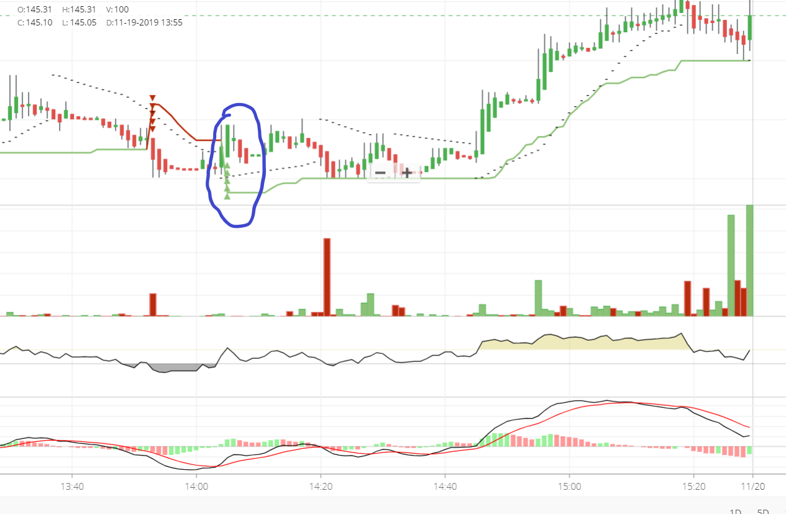

post 32-
Parabolic SAR (Stop And Reversal)
It is a technical indicator which is used for measuring the price direction of security and determining the change in the price direction. Used to identify the trend. It places dots or points, on a chart that show potential reversals in price movement.
When the dots are below the candles, it is a BUY signal.
When the dots are up the candles, it is a SELL signal.
Set its value from .02 to 2.
Min AF - 0.02; Max AF - 0.2

post 33-
Volume indicator/Chart
volume of stocks in the share market, How much it is important if you do intraday trading. Volume is a great way to check the trend. You can check the volume of any stock. if the volume is high then it means it is more liquidity in the stock. It helps you to take the position or not in that particular stock.
The volume shows the number of shares traded(bought and sold) in stock or contracts. Increase in volume is frequently an indicator of price jump either up or down. If a stock regularly trades 2.5 million shares daily, but you notice it has traded 6 million shares by 10 am. Then there may be some chances of movement in the stock.
It is important to select stocks based on large volume or a recent spike in volume, and a beta higher than 1.0.
Follow these simple steps to check the volume of any stock-
1- Open chart
2- add it on 10 minutes time frame according to your requirement.
3- Add volume indicator
4- check trend, swing high, swing low, volume bars:
In case of bars not check individual bar compare candle with 10 previous bars then decide to buy and sell.

post x-
how To check the volume of any stock option-
Go to nseindia.com->live market-> option chain tab under equity derivatives.
It also gives you a quick and rapid picture of ITM (yellow shaded strikes), OTM (un-shaded strikes), ATM options.
This rule applies to both calls and puts.
nseindia also added a new feature to check the updated volume.
https://www.nseindia.com/option-chain	

post 34-
Liquidity-
Liquidity gives you to quickly enter and exit trades at an attractive and stable price. Liquidity is average daily volume/ market capitalization. Volume is the total number of shares traded in a particular market at a given time. It is recommended to trade only in liquid stocks because these stocks have a huge volume. 
These stocks show great movement in a short period. The volume of stocks matters a lot But based on volume, we cannot predict that this deal will give profit or not.
Before buying any stock check there is volume available or not If the volume is available then buy it otherwise avoid it. Don't do trading in volatile stocks. Buy stocks that are high in volume.
Get the stocks of the day depending upon news it will also show a great movement. Observe stocks daily movement w.r.t its price action. A volume of 50000 and 75000 shares is significant if the trade is for 50 to 100 rs.
The more the number of buyers more will be liquidity. liquidity is not the same as the volume. the difference between the bid and ask price is less.
Every strategy needs liquidity, volatility and volumes.	
https://www.nseindia.com/market-data/most-active-equities
https://www.indiainfoline.com/markets/nse/nifty-100-liquid-15/indices/43706

post 35-
Stochastics ( Period - 14 ) indicator base trading
A stochastic oscillator is a momentum indicator comparing a particular closing price of a security to a range of its prices over a certain period of time. This establishes a range with values indexed between 0 and 100. A reading of 80+ points to a security being overbought. The stochastic indicator is a two-line indicator that can be applied to any chart. 
it uses support and resistance levels

It is used to see if close(current) prices diverge from the assumed standard. It was developed by George Lane in the 1950s and is characterized by its clear buy and Sell signalling. This indicator comes under the momentum indicator.
This indicator uses 14 periods which is used to compare where the security's prices close over a particular period.
It shows the 2 lines are similar to the MACD lines in the sense that one line is faster than the other.

post x-
Stochastics Analysis:
Generally, it is represented by red and blue lines If the stochastic red line crossed/above 80 means the market is in the overbought condition. If the stochastic blue line crosses/below 20 then it means that the market is in oversold condition.
This is a very good indicator to get the entry and exit points of stock. You can use this indicator in intraday trading also.

Readings above 70 are considered to be overbought zone any time selling pressure or profit booking may come. Don't buy this stock at this time & readings below 30 are considered to be an oversold zone any time a buyer can take control and stock may move upward. Buy that stock and wait stochastic to cross 70-80 levels to book profit.
Stochastic below 30 is your buying point and above 70 is your exit point.


post 36-
how to check Stock shareholding pattern 
in screener investors tab
https://www.screener.in/company/NATIONALUM/consolidated/#shareholding

Post 37-
tickertape
Here you can Play the game choose 5 stock to predict their price and win rewards.
https://www.tickertape.in/beat-the-street

Post 38-
Position strategy- sizing
If things do not go well either average the position or take the position on hold whatever amount you have. 

Post 39-
Earnings per share(EPS)									
profits or losses (net income) made in the last 12 months divided by the total number of shares. EPS changes every 3 months. If a company makes losses, its EPS turns -ve. If you are investing It must be increased for the past 5 years.	

Post 40-
The price-to-earnings ratio P/E or PE	
It is the ratio of the market price of company stock to its earnings per share (EPS)	. 
It is also known as earning capital. share price changes every day so does its P/E.		
A low P/E ratio may imply that a stock is undervalued and therefore should be bought. 
The P/E ratio must be less than 30 which is considered good. Well P/E varies from sector to sector and from business to business.	
	
P/E is a derived term from EPS.
The P/E ratio was too high to buy at the price you brought the stock. IT MUST BE LOW	
low P/E with high dividend rates. BEST stock to invest.					
Exit your equity holdings or Stock positions when Nifty P/E starts going over 24.		
It must be less than 25 or low compared to peer companies within the same industry
p/e= Share price / EPS
			
IT companies usually have a P/E of around 25.						
Steel companies commonly have a lower P/E of 6.						
			
If the Rs.100 stock has a P/E ratio of 6 and the Rs.10 stock has a P/E ratio of 8,		
The rs.100 stock is cheaper because the investor is only paying Rs.6 for every rupee of earnings, as opposed to Rs.8 of earning for the Rs.10 stock. 

Price to Earnings ratio tells us how much we are paying for 1 Rupee earning of the company. 

The lower compared to peers, the better value we are getting.

These things are related PE Ratio/ EPS/ Book Value/ Net Worth
Nifty PE effect ELSS mutual fund
Nifty PE is 40 then ELSS mutual fund does not work well

Post 43-
Intrinsic value
Intrinsic value of a stock is its true value. This is calculated on the basis of the monetary benefit you expect to receive from it in the future. Let us put it this way - it is the maximum value at which you can buy the asset, without making a loss in the future when you sell it.
Intrinsic value is the perceived or calculated value of an asset, investment, or a company and is used in fundamental analysis and the options markets.
Intrinsic value is the anticipated or calculated value of a company, stock, currency or product determined through fundamental analysis.


Post 41-
Overvalued-		
An overvalued stock is one that trades at a price significantly higher than its fundamental earnings and revenue outlook suggests it should.  Stocks that have a higher market value compared to its intrinsic value or worth are considered overvalued stocks				
You can find that the stock is overvalued or not by comparing the P/E ratio to competitors.

Here you can check overvalued/undervalued things. Ensure that you do not invest in overvalued stocks.						
https://simplywall.st/stocks/in/real-estate/bse-526727/garnet-construction-shares				

Post 42-				
Undervalued-	
Undervalued stocks or securities are equity shares that have a market value lower than their intrinsic value.									
It usually has a low P/E ratio.	
You must compare Undervalued stock to fair price.	

Post 44-
Revenue - 
Revenue is the money generated from normal business operations, calculated as the average sales price times the number of units sold.		
Revenue is the value of all sales of goods and services recognized by a company in a period. Revenue (also referred to as Sales or Income)
Revenue and Earnings Per Share (EPS) are the heart of the fundamental analysis of a company's worth
It is a Profit Growth.
sales and profit growth must be greater than 10% if you are investing any amount.	

Post 45-
Debt to equity ratio
debt-to-equity (D/E) ratio is used to evaluate a company's financial leverage and is calculated by dividing a company's total liabilities by its shareholder equity.
The D/E ratio is an important metric used in corporate finance.
It's a simple measure of how much debt you use to run your business.
 A company's debt-to-equity ratio can signal to both lenders and investors the overall financial health based on how much leverage it has.

 D/E < 1	

Post 46-
Current ratio
The current ratio is a liquidity ratio that measures a company's ability to pay short-term obligations or those due within one year.
Current Ratio formula is = Current Assets / Current Liabilities
Current ratio > 1		

Post 47-
Price to book or Market to Book Ratio - PB- #fundamental analysis
The price-to-book ratio compares a company's market value to its book value.
Price-to-book value (P/B) is the ratio of the market value of a company's shares (share price) over its book value of equity.
It represents the relationship between the total value of an organisation's outstanding shares and the book value of its equity.
The price-to-book ratio (P/B) is calculated by dividing a company's market capitalization by its book value of equity as of the latest reporting period.
Price to book(P/B) <= 1.5 or low compared to peer companies within the same Industry	

Price to Book value ratio tells us how many times are we paying for a company's assets. 

The lower compared to peers, the better value we are getting. 

Post 48-	
Market capitalization- MCAP	 
Market capitalization refers to the total dollar market value of a company's outstanding shares of stock.
it's calculated by multiplying the total number of a company's outstanding shares by the current market price of one share.
Market capitalization is the aggregate valuation of the company based on its current share price and the total number of outstanding stocks.	
suggested it must be greater than 500 crores.						suppose the company has 100 shares and the current price per share is 25 then its valuation is [100*25=2500]

Post 49-
long-term debt-to-total-assets ratio
It is a measurement representing the percentage of a corporation's assets financed with long-term debt, which encompasses loans or other debt obligations lasting more than one year.
The long-term debt to total asset ratio is a solvency or coverage ratio that calculates a company's leverage by comparing total debt to assets.
Long-term Debt / Total Assets-								
It must have a ratio that is less than 0.5. It is a low-risk situation. A ratio of less than 0.5 is rated good. Businesses that do well on these two ratios by being above 20% and Increasing for the past 5 years command premium valuations.						

Post 50-	
Return on equity
Return on equity (ROE) is a measure of financial performance calculated by dividing net income by shareholders' equity.
It is a measure of the profitability of a business in relation to the equity.
This ratio essentially measures the rate of return that the owners of common stock of a company receive on their shareholdings.
It measures the net profits generated by a company based on each dollar of equity investment contributed by shareholders.
RoE > 20%								
Avoid a company that has an ROE of less than 5% or less. A good ROE is considered in the range of 15-20%. It is calculated as net profit divided by share holder's equity.		

Post 51-				
D/E Ratio -											
assume a firm has equal amounts of debt and equity. Then the debt-equity ratio is equal to one. D/E Ratio = 1										
The total debt is divided by total equity.							
If the debt-equity ratio is greater than one, the firm has more debt than equity and vice versa.

Post 52-
Company profit-
You can track any companies yeal profit and then you can take your bid.	
Crores Profits in FY 2007, 2008, 2009, 2010, 2011: 94 Crores, 158 Crores, 159 Crores, 250 Crore, 430 Crores
Profit growth in FY 2008, 2009, 2010, 2011: 68%, 1%, 57% and 72%

Post 53-
balance sheet-
The balance sheet (profit and loss) is a statement of the assets, liabilities, and capital of a business or other organization at a particular point in time, detailing the balance of income and expense over the preceding period. It is a statement of net worth.
Assets=Liabilities + Shareholders
It also include equity. Equity what a company owns and owes it have all the things. Mostly the things present in the balance sheet (profit and loss)
 

Post 54-
Stock analysis types-
There are two types of analysis that we do in the stock market Fundamental and Technical.

Post 55-
Factors to consider before investment
Identify quality stocks
financials of the company
the competitive strength
weakness of the company
the future growth prospects
latest news and economic situation to ensure that the companies you have invested in are on track.
excellent track record in the past 10 years
Highly experienced and competent management
Strong product portfolio and brand name
High competitive advantage over the competitors
A very bright future prospect

Post 56-
Call and Put writing-
Put writing:
stock/index will go down 
Call writing: 
stock/index will go up

Post 57-
Fibonacci Retracement - Stock strategy
basically used to identify potential reversal levels.
It is a part of technical analysis for finding support and resistance points. It is used to find support and resistance. it shows golden levels.
draw this with last swing. 
Retracement levels can be found from downward to upward and vice versa It is another method for calculating zones of support and resistance by using horizontal lines. Using time-tested Fibonacci patterns, traders can get a more nuanced view of the market.
Levels can be identified by drawing a trendline from the low to high. It is a great tool that provides levels or positions. It needs lots of practice to draw the line.
 It also has a projection and extension tool where you can put some values.
To draw the line you need two points at some condition. By practice, you will understand which points give you good entry points. These points are generally high and low.
It can be drawn With 2 valid points. You can check the calculation of these number they will give result in the same pattern. These numbers are selected from the Fibonacci sequence.
As we know the Fibonacci series is 0, 1, 1, 2, 3, 5, 8, 13, 21, 34, 55, 89, 144, 233, 377, 610, 987, 1597, 2584, 4181, 6765, 10946, 17711, 28657, 46368, 75025, 121393, 196418, 317811.
23.6%, 38.2%, 50 %, 61.8%, 78.6%, 100% are the  golden ratios. 

Divide any number in the series by the previous number; the ratio is always approximately 1.618-
610/377 = 1.618
377/233 = 1.618
233/144 = 1.618
Divide with an immediate succeeding number-
89/144 = 0.618
144/233 = 0.618
377/610 = 0.618
13/21 = .618
34/55  = .618
89/144  = .618
55/89 = .618
Divide Number two places higher-
13/34 = 0.382
21/55 = 0.382
34/89 = 0.382
Divided number 3 place higher-
13/55 = 0.236
21/89 = 0.236
34/144 = 0.236
55/233 = 0.236
21/89 =  0.236

implementation-
1- find low and high  - connect trend line

If it crosses 61.8% then it shows a trend reversal. Take trade after the pullback. When it crosses 38.2% make your position here. Exit after 62.8%.

150-240 =  90 point moves make it 100%.
380-489 - Total Fibonacci up move = 109
At 61.8%, -> 421.9
61.8% of Fibonacci up move = 61.8% * 109 = 67.36
Retracement @ 61.8% = 489- 67.36 = 421.6

Post 58-
pullback-
 a pullback is a pause or moderate drop in a stock or commodities pricing chart from recent peaks that occur within a continuing uptrend. A pullback is very similar to retracement or consolidation, and the terms are sometimes used interchangeably.
 A pullback can be a great opportunity to get into a long position when the price of the security is "on sale."
 Stock pullbacks are temporary declines in an asset or market. Investors often view pullbacks as buying opportunities.
 A pullback is a healthy correction in the long-term upward trend for a stock or the market / index. This is looked upon as an opportunity to enter a trade.
 A pullback is a technical analysis term used frequently when a stock “pulls” back to a resistance and/or support line, 


Post 59-
Trading rules- Blindly Follow Rules
Always consider risk to reward more than 1:1
Always follow proven system and plan
Cut the losses and ride on profit
Always consist the order size
Never ever over trade
Always trade with active stocks
Try to balance your emotions
Monitor your result and make a report of it

Post x-
trading Plan to follow-
The trend is your friend do not go against the trend.
Wait for 15 minutes after the market opens at 9: 15 am to settle down the things because this is a risky time to enter the market. Big investors can change the game at any time. After 15 minutes you can find the trend.
The main things for the trade are entry exit and stop-loss point which indicates the correct signal. As per strategies find out these points and strictly follow them. Either you get profit or loss exit the position accordingly.
only entry points are in our hands and nothing So, Book profit in 2-3 minutes and exit the position, again and again, follow it.
Be patient to wait for the correct signal to buy or sell as per your strategy. If you face some losses maintain excel sheets for that what you did wrong.

Post x-
Practice these things before planning to trade-
write 20 scripts a day for their open, high, low, close points.
Analyze at least the last 20 days chart of any stock.
Analyse pattern engulfing.
Add support and resistance lines to the chart.
Analyze 4-5 charts daily with bullish engulfing and bearish reversal patterns.
watch 10-15 charts in the live market.	

Post 60-
Risk reward ratio 
Risk reward ratio maintain
The risk/reward ratio marks the prospective reward an investor can earn for every dollar they risk on an investment. Many investors use risk/reward ratios to compare the expected returns of an investment with the amount of risk they must undertake to earn these returns.
The risk/reward ratio, sometimes known as the "R/R ratio," compares the potential profit of a trade to its potential loss
A good risk to reward ratio is 1:2 which indicates the profit or reward is higher than the loss. 
if you have a risk-reward ratio of 1:3, it means you're risking $1 to potentially make $3.
Another example-
BUY BANKNIFTY 37900 CE   CMP: 73   SL: 43  TARGET: 103   RISK:REWARD = 1:1

Post 61-
stop loss-
It is an order set with a broker to buy or sell once the stock reaches a certain price. It controls an investor's loss on a security position. Placing a stop-loss order for 10% under the price at which you bought the stock will limit your loss to 10%.
This order is placed to limit the losses when you fear that the prices may move against your trade. For example, if you have bought a stock at Rs 200 and you want to limit the loss to 195, you can place an order in the system to sell the stock as soon as the stock comes to 195.

It is an order placed with a broker to buy or sell a specific stock once the stock reaches a certain price. Designed to limit an investor's loss on a security position. For example, setting a stop-loss order for 10% below the price at which you bought the stock will limit your loss to 10%.

post x-
Stop Loss Strategies & Techniques	
How to set or trail a proper stop loss and define your risk-
Support and Resistance
Trend lines
Moving average
percentage change
market structure  
weekly high/low
strategies with which you can minimise your loss. As we know sometimes things will not work according to the strategy that you used. In that case, we can trail stop loss. it is very important to cover up your loss. A trailing stop loss is an order that locks in profit as the price moves in favour. you will only Exit if the market reverses by x amount.

suppose you bought 1 share having a price of Rs.100 and stop-loss is 10 rupees. if the price move from 100 to 120 your trailing stop loss is at 110 (120-10). you will exit the trade of price drops to Rs.110.


Post 62-
Stockedge Premium features like:
1.  Advanced Technical and Fundamental Scans
2.  Ready Made tools like Strategies, Investment Ideas, Big Investors Portfolios, MF Investment themes
3.  Edge Reports (Concalls, IPO notes, Case studies)
4.  Interactive Edge Chart
5.  Business Houses

Post 64-
Company or business valuation-
A business valuation is a general process of determining the economic value of a whole business or company unit. Business valuation can be used to determine the fair value of a business for a variety of reasons, including sale value, establishing partner ownership, taxation, and even divorce proceedings.

Post 63-
Net change - 
price is down based on the previous day.

Post 65-
net profit
Net income is gross profit minus all other expenses and costs as well as any other income and revenue sources that are not included in gross income.

Post 66-
MACD (Moving Average Convergence Divergence ) indicator-

It is a momentum/trend indicator that compares moving averages to an easy to read “buy line.” Once the moving average has moved above this line, you may want to consider opening a new position.
This is momentum as well as trend following indicator that indicates the relationship between two moving averages of a stock's price. Always use MACD to identify the trend. 

It consists of 2 EMAs and histogram. Its default values are 12,26,9 means crossover of 12 days & 26 days EMA. If 12 EMA crosses 26 EMA then it shows sell signal and vice vera. Here it calculates the average of 12 & 26 days close price.
Fast MA Period - 12; Slow MA Period - 26; Signal Period - 9 
It draws the fast & slow signal MACD line.
It is a lagging indicator.
This is the crossover of the short and long term moving averages.
50 and 200 MACD is better if you want to hold stock for a long time.
MACD- histogram -ve to +ve, consist of two lines black & signal(red) line. 3 pts			It is Lagging Indicators		

post x-
MACD strategy-
combine two indicators RSI and MACD Which give good entry/exit point according to the direction of the stock price movement.
Green/Blue is a signal line which shows a fast-moving average.
Red shows MACD line it shows the slow moving average.
When the MACD rises above the signal line, it gives a bullish signal and when the MACD falls below the signal line, it gives a bearish signal.
When the lines crossed, the histogram temporarily disappears.
In downtrend, the fast line deviates away from the slow line and the histogram gets bigger, which is a valid sign of a strong trend.
Watch and compare MACD with candlestick direction in 1st section, when cross over takes place in an upward direction in MACD, stock moves upward and in reverse stock moves downward.
Watch the buy volume and sell volume bar in MACD increases and decreases with stock movement in a bullish and bearish trend.
Buy signal-
Whenever Macd line (black) cross the Macd signal line to upwards.
Whenever histogram converts negative to positive.
Whenever Macd signal line crosses the zero line to upwards.
If the red line is below the black line then short-sell it.

Post 67-
Williams %R 
Williams %R is a momentum indicator in technical analysis that measures overbought and oversold levels. It is similar to the stochastic oscillator.
The Williams %R, or just %R for short, is an indicator that oscillates between 0 and -100, 
Period - 14 
It's bounded to 0 - to -100 which gauges if a stock is overbought or oversold.

Post 68-
Bottom out
If a stock has bottomed out, it means that it reached its low point and could be in the early stages of an upward trend. Often a bottom can be a signal for a reversal. Investors often see a bottom as an opportunity to purchase a stock when the security is underpriced or trading at its lowest value.

Post 69-
Buyback share
A buyback, also known as a share repurchase, is when a company buys its own outstanding shares to reduce the number of shares available on the open market.
Buy-Back is a corporate action in which a company buys back its shares from the existing shareholders usually at a price higher than market price.
https://www.chittorgarh.com/report/latest-buyback-issues-in-india/80/
https://investorzone.in/buyback/

Post 70-
BO ID (Beneficiary Owner Identification Number)
It is used to identify your Demat account. It is unique for every client. 
BO id in CDSL is the 16 digits Demat account number of the customer who has a demat account with the CDSL depository. 
in NSDL in is 8 digit.

Post 75-
Harmonic Patterns - Stock strategy - challenge
harmonic trading attempts to predict future. Each pattern provides a potential reversal zone (PRZ).
The PRZ, the Potential Reversal Area, is an area where 3 or more Fibonacci numbers converge(intersect), and where the harmonic pattern completes.
Harmonic patterns can help traders to spot market trends
reverse before the harmonic prz

Post 76-
Wicks - Stock pattern
A shadow, or a wick, is a line found on a candle in a candlestick chart that is used to indicate where the price of a stock has fluctuated relative to the opening and closing prices. Essentially, these shadows illustrate the highest and lowest prices at which a security has traded over a specific time period.
Candlestick wicks are an important part of technical analysis and indicate reversals or breakouts

Post 77-
regression channel
  The regression channel consists of two parallel lines plotted equidistantly above and below the Regression Line. The distance at which the lines are plotted can be calculated using different algorithms. In order to add the regression channel to chart, choose it from the Active Tool menu.
  Regression channel is a technical indicator that may offer potential buy and sell signals.

Post 78-
Bounce-backs - Stock strategy
Buy a bounce is a trading strategy that focuses on buying a given security once the price of the asset falls toward an important level of support. Traders who "buy a bounce" attempt to profit from a short-term correction or "bounce" off of the identified support.
Use bounce-backs in stocks as sell on rise opportunities,

Post 79-
Ripple effect
the continuing and spreading results of an event or action. A ripple effect occurs when an initial disturbance to a system propagates outward to disturb an increasingly larger portion of the system.
One important factor for a healthy economy is supply-demand balance. If anyone of these two is skewed, it badly influences a series of factors. It can cause some ripples in markets.

Post 80-
Gap fill - Stock strategy
gaps are areas on a chart where the price of a stock (or another financial instrument) moves sharply up or down, with little or no trading in between. As a result, the asset's chart shows a gap in the normal price pattern. The enterprising trader can interpret and exploit these gaps for profit.
 A gap “getting filled” is when price action at a later time retraces to the closing price of the day preceding the gap.
Gap fill stocks are stocks that have to retrace to a previous candle that's opened higher or lower than the current price.
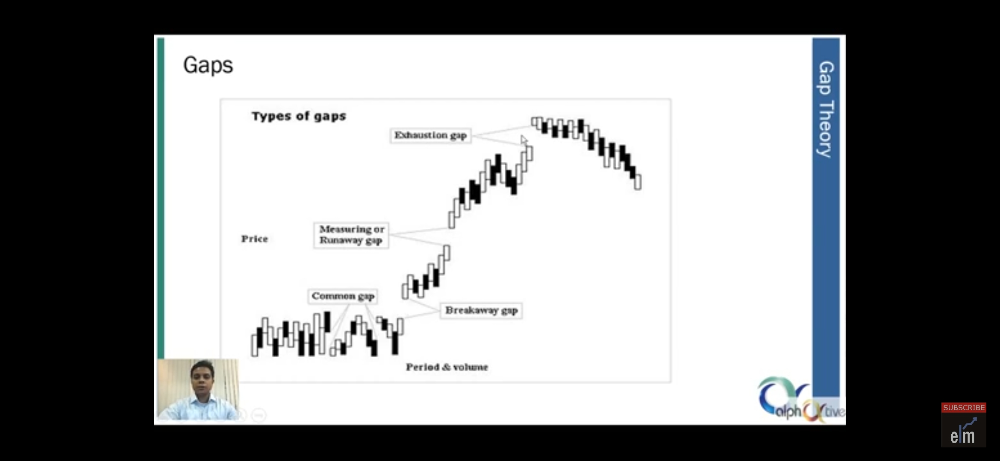


Post 81-
Bear bull trap
The move "traps" traders or investors that acted on the buy signal and generates losses on resulting long positions. A bull trap may also refer to a whipsaw pattern. The opposite of a bull trap is a bear trap, which occurs when sellers fail to press a decline below a breakdown level.

post x-
whipsaw-	
Whipsaw explains the movement of stocks in a volatile market; a stock price will suddenly switch direction. This usually occurs in a volatile market when traders are subjected to high risk. Whipsaw refers to a loss that a trader incurs when security suddenly and unexpectedly drops soon after it is purchased.

Post 82-
accumulation zone- Stock strategy
The accumulation area represents a period of implicit buying of shares, typically by institutional buyers, while the price remains fairly stable.
The accumulation area is a stock market charting zone analyzed by investors that can indicate a good time to buy. 
When a stock price doesn't fall below a certain price level, and moves in a sideways range for an extended period, this can be an indication to investors that the stock is being accumulated by investors and as a result will be moving up soon.
Example-
icicibank hourly chart has been trading in a very tight range 660-663 looks accumulation zone to me with strict sl at 645; more confirmation once it trades abv 20ema.

Post 83-
Algobaba
Bridge That Supports all types of Orders is It MIS, Bo Or Co.
Grade Trading Bridge Available for Retail Users, 
Stoxxo- Intelligent Trading Bridge helps in faster trade execution through your brokers, not just that but help you manage the quantity and minimize risk efficiently.
It is a kind of algo trading
Designed to Handle Orders
Connect With Trading View Excel, Mt4, Ninja Trader 8
C#, .net, Python, HTTP Supported
Teamed up with TrueData

Post 84-
 Popular credit cards 
You can save money on forex and credit cards.   
Standard Chartered and Amex provides best of class service and offers on their credit cards.  
ICICI has only one credit card with premium features and that is the Sapphiro credit card.  To redeem the point of icici you can use the payback site. It also offers you to buy a BMS ticket 2 times book a month with a 25% discount.
hsbc - save on flight tickets, goibibo
Hdfc multicurrency forex card 

Post 85-
Tax audit report
Audit suggests that it is an official inspection of an organisation's accounts and production of the report, typically by an independent body. It is an examination or review of accounts of any business or profession carried out by taxpayers from an income tax viewpoint. It does the process of income computation for filing of return of income easier.

Many tax filers especially omit details of Capital Gains and losses when submitting their ITR. This tax filing mistake can have serious consequences, such as an Income Tax Audit.

Post 86-

Excise duty-
An excise tax is any duty on manufactured goods that is assessable at the moment of manufacture, rather than a sale. Excises are typically imposed in addition to an indirect tax such as a sales tax or value-added tax (VAT), HST, and GST.
Reacently there is cut on petrol and diesel

VAT/CST registration								
VAT returns		

Post 87-
What is TDS?  why it is deducted  & How to calculate TDS?   

TDS is Tax Deducted at Source. It is a way of collecting income tax, under the Indian Income Tax Act of 1961. Its aim is to collect tax from where an individual's income is generated.  As we know there are various sources of income.

A person (deductor) who is liable to make payment of specified nature to any other person (deductee) shall deduct tax at source and remit the same into the account of the Central Government. The deductee from whose income tax has been deducted at source would be entitled to get a credit of the amount so deducted on the basis of Form 26AS for TDS certificate issued by the deductor.

The government uses TDS as a tool to collect tax in order to minimise tax evasion by taxing the income (partially or wholly) at the time it is generated rather than at a later date.

TDS is applicable to the various incomes such as salaries, interest received, the commission received, professional fees, rent, Consultation Fees.  The person who is making the payment is responsible for deducting the tax and depositing the same with the government. This person is known as a 'deductor'. On the other hand, the person who receives the payment after the tax deduction is called the 'deductee'. 


TDS is not applicable to all incomes and persons for all transactions.
TDS only applicable above a threshold level. when the value of the payment is above the specified threshold level.
For example, there will be no TDS on the total interest received on FD/FDs from a single bank if it is less than Rs 10,000 in a year from that bank.

post x-
How To avoid TDS-
If a person expects that his total income in a financial year will be below the exemption limit, he can ask the payer not to deduct TDS by submitting Form 15G/15H.
The deducted TDS can be claimed in the form of a tax refund after they file their ITR
TDS Limit hiked from 10000 to 40000 on post office saving and bank deposit in the 2019 budget.
TDS certificates are issued by the deductor (the person who is deducting tax) to the deductee (the person from whose payment the tax is deducted). There are mainly two types of TDS certificates issued by the deductor.
1.    Form 16: which is issued by the employer to the employee incorporating details of tax deducted by the employer throughout the year, and
2.    Form 16A: which is issued in all cases other than salary.

For example, Mr Gupta is working as a salaried employee at a company and tax is deducted from his salary @ 15%. The company shall provide Mr Gupta with a Form 16 describing particulars in detail regarding the amount of salary paid and tax deducted on the same.
However, had Mr Gupta been working as a professional and received professional fees from an organization that is subject to TDS, then he will be provided Form 16A for the same.

For more info Login to Income Tax India eFiling website then  click on the option “View Tax Credit Statement (26 AS)
Your annual tax credit statement that ensures complete transparency
login e-filing -> My account -> click on view Form 26AS


post x-
How to verify your ITR return
How to E-Verify Your Income Tax Return (income tax verification).	

post x-
Form 26AS 
Form 26AS is a statement that shows the amount of tax deducted and deposited in a person's name/PAN.
know your tax credit with 26AS.

Form 26AS is one of the critical documents you must verify before filing your ITR. This form is similar to a passbook and includes your earnings, Tax Deducted at Source (TDS), advance tax paid, etc.  

Form 26AS also contains details of any tax credits that you might be eligible for. These tax credits can be used to offset future tax liabilities or to receive a refund for excess tax paid. 

Sometimes there can be a mismatch between details in Form 26AS and the calculations provided by your employer in Form 16. 

Post 88-
TAN card-
Tax Deduction Account Number (TAN) is a unique 10 digit alphanumeric code allotted by the Income Tax (IT) Department to all those persons who are required to deduct tax at the source of income. It is mandatory to quote TAN on all TDS (Tax Deduction at Source) returns (including e-TDS return) or any TDS payment challan.

Post 89-  
intraday trading
Tips And Tricks For Novices to do intraday trading. Remember to control your greed to Constrain your loss it is only possible by controlling your emotion.
It is Day trading buying and selling stocks within the same day. Try to clear your position asap. In this Not take position after two consecutive top gains.						
In intraday trading, These things are very important-
Money management
Risk management.
when not to trade.
Patience
knowledge.
 
Beginners generally use candlestick charts for technical analysis which are great for detecting and predicting market trends. With candlesticks, we can get valuable information like open, high, low, close. With this candlestick chart, use technical indicators on the 1-minute timeframe.
 
After the few trading sessions-
Find a broker where you can do unlimited selling buying means you just need to pay monthly charges, not on every trade that you do.
Do not do over trade plan as per your strategy trade only 1 to 3 trades in a day. 2 stocks per day are enough to trade.
create daily trade journal make these columns like time, entry, exit, quantity, order type, profit, loss etc.
Do not trade on stock news, result days, meetings, buybacks, any bankrupts, on budget day. Stocks which are in news can give big movement and can give you big losses too.
When you enter into any trade using an indicator take a .5% profit and exit the position. Take .3% stop loss or previous low and exit. Follow this book profit and loss according to this percentage.
 
Be active between 1:30 to 3:30. It also shows great movement.

Post 90-  
Bullish-
Bullish means demand is increasing. This will lead to an increase in price. It will change according to price. It depends on demand and supply. The volume shows Demand & Supply.
Green indicates upwards movement means buying.
Red or black indicates downward movement suggests selling.
In options It means the stock price will be going up and the overall market will go higher. If OI is more for Put options then the market is bullish.
In bullish maRKET	Buy a call option or sell a put option when	market to go up.	 

post x-
Bearish-
Bullish means demand is decreasing.
In Bearish maRKET Buy a put option or sell a call option when you expect the market to go down.
It means that an investor believes a stock will go down or underperform. If OI is more for the Call option.

Post 91-  
Targets of different stock prices that you can consider-
Rupees - Target Price
60-100  - 0.50
100- 200- 0.50 to 0.75
200-300- 0.75-1.25
300-500- 1.25-2
500- 2-3

Post 92-  
Swing trading
It is a style of trading that attempts to capture short- to medium-term gains in a stock (or any financial instrument) over a period of a few days to several weeks. Swing traders primarily use technical analysis to look for trading opportunities
buy the stock that is in news hold it for some time and sell it
Swing trading strategies		
it is a form of trading where you buy and hold stocks for short period of time, like 5-20 days	

Post 93-  
Upstox 
It is a tech-first low-cost broking firm in India providing trading opportunities at unbeatable prices.  You can place various types of orders here. It also provides the OCO(One-Cancels-the-Other Order) type of order.
Hey there! I have been investing in stocks and mutual funds using the Upstox platform and am quite impressed! Upstox offers free equity delivery trades and 
you pay only up to Rs. 20 per order for Intraday, F&O, Currencies and Commodities. You get one of the best margins in the industry and access to a wide 
intraday gives a limit up to 2 - 2.5 times for future segment.
range of technical indicators and drawing tools. Join one of India's fastest-growing broker. Sign up for a demat account now.

Post 94-  
keystone platform - upstox
To check the Profit and Loss statement you need to go to a different platform keystone which is a product of Upstox. The password for keystone and the trading platform is different. The password of the keystone is your PAN number in the capital and your login Id will be your six-digit UCC(unique client code). you can follow the below steps:
1) Login to Backoffice
2) Click on Bill and press 'Profit/Loss'
3) Select year eg. '1617 '
4) Select Company eg. 03- FON
5) Press 'Go'
You can save these reports in excel and document format.
 
Post 95-  
Bhav copy 
Bhav copy reports are the end of day data of stocks, derivatives traded in NSE. It is used to predict the future movement of stocks, indices. This copy is used to put data in software to analyse stock movement. 
So it gives previous trading data. 
The Bhavcopy of equity cash contains these columns: 
symbol, series, open, high, low, close, last, prev close, Tottrdval, TOTTRDQTY, timestamp, TOTAL TRADES, ISIN, volume and other data of traded securities on an Indian exchange. 

The Bhavcopy of FNO contains these columns: 
INSTRUMENT, SYMBOL, EXPIRY_DT, STRIKE_PR, OPTION_TYP, OPEN, HIGH, LOW, CLOSE, SETTLE_PR, CONTRACTS, VAL_INLAKH, OPEN_INT, CHG_IN_OI, TIMESTAMP.

Post 96-  
how to download the Bhavcopy of equity, Future & option(FNO) segments 
For FNO follow these simple steps-
Go to nseindia.com
select products
equity derivatives
historical data
Archives of Monthly Reports View
select report type Bhavcopy and select date 
download the zip file

For Equity follow the below steps-
Home 
Products
Equities 
Historical Data

Archives of Daily / Monthly Reports
https://www.nseindia.com/products/content/all_daily_reports.htm		


Post 99-
Stock Volatility 

The higher the volatility, the riskier the security. Basically, it represents the speed and amount of price changes. It is the degree of variation of a trading price series over time as measured by the standard deviation of logarithmic returns means you can calculate the change of price in any given timeframe.
A volatile market is when the stock market increases and falls more than one per cent over a sustained period. You can check this on nseindia site. Greater the volatility higher the profit or loss. These stocks are beta stocks that have high volatility.
Important factors in the market are stock, price, historical data, implied or Underlying volatility.  As we know Percent/annum is the most common unit of volatility in finance. Volatility is measured in percentage. 

Post 100-
RSI (Relative Strength Index) technical indicator. 
It is an index that measures whether an asset is overbought or oversold, using a scale ranging from 1 to 100. It reduces the risk of trading by drawing one line Which indicates bought and sold region. Used to analyze stock movement.  
This is a momentum indicator that estimates the degree of current price changes which is used for determining if the stock is overvalued or undervalued. It measures the speed of change in price movement.
RSI default setting is 14 but uses with 8 you will get a better result.
Trading Approach-
value 70 or higher indicate overbought conditions/region and an increase in the possibility of price weakening. Sell when RSI moves from above to below the overbought line.
value 30 or lower indicate oversold market conditions and an increment in the possibility of rate strengthening. One should buy when RSI moves from below to above the oversold line means buy the stock only when RSI passes above 30 levels.
This is one of the best indicators to do intraday trading.
Other Scenario-
Take a fast look at the RSI and look at whether it is above or below 50.
If you are viewing at a possible UPTREND, then make sure the RSI is above 50.
If you are studying at a possible DOWNTREND, then make sure the RSI is below 50.
You can also change the column values-
Set parameters value 60 and 40.
Below 40 short sell it
If above 60 then buy it.
This is also another strategy to trade with this indicator.

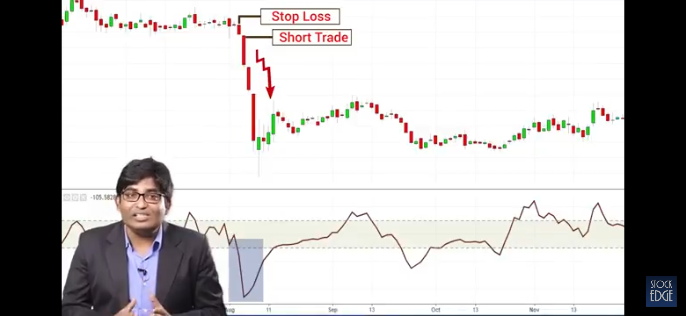


Post 109-
rsi divergence
Relative Strength Index (RSI) is a momentum indicator that measures the magnitude of recent price changes to analyze overbought or oversold conditions.
An asset price is considered overbought (due for a correction) when RSI is above 70, and oversold (due for a rebound) when it is below 30.  Some traders user more extreme levels (80/20) to reduce false readings.
Divergence occurs when a price makes a new high or low in price but the RSI does not make a corresponding new high or low value.
RSI Divergence can also be used as a confirmation of a breakout. 
you can find this indicator on tradingview.

Post 101-
Relative Strength Comparison 
Relative Strength Comparison compares a security's price change with that of a "base" security or index. When the Relative Strength Comparison indicator is moving up, it shows that the security's price is performing better than the base security/index in relative terms.
It is simply dividing the stock price with Nifty and plot the graph.
Relative strength is one of the most useful indicators in the market, highlighting when stocks and sectors are outperforming or underperforming a broader index.
Relative Strength is a momentum strategy that helps us in identifying strong stocks for trading as compared to the Index.

Post 102-
option strategies- option strategy
	new strategy-
	sell 10% higher strike price call (one lot) at the start of the month.	LTP is 212. 10% higher is 233. Select strike price 235. The call premium of 235 strike of August expiry is 1.75. So 3200*1.75 = 5600 could be your monthly gain.	

  Another one is Buy when day high is crossed and Short when day low is crossed	when the day high or low is broken. after 2 pm	

  Call buy put buy	same stop loss and profit in equal ratio

Long Call Condor
Short Call Condor
Iron Condor
Short Call Butterfly
Long Call Butterfly
Bear Put Spread Strategy
Bear Call Spread Strategy
Bull Put Spread
Collar
Long Strangle
Short Strangle
Short Straddle
Long Straddle
Covered Put
Protective Call
Long Combo
Synthetic Long Call
Butterfly
Iron Butterfly?
Strangles
Bull Call Spread	
Straddle
put spread
long call 
long put 
short call
short put
Covered call	
Cash secured Put																		
Diagonal spread (bearish)		
Ratio Spread								
Ratio Backspread								
Iron Fly		
Reverse double calendar (credit spread)

post x-
SHORT CALL BUTTERFLY:
BUY 2 ATM CALL OPTIONS, SELL 1 ITM CALL OPTION AND SELL 1 OTM CALL OPTION.
A Short Call Butterfly is a strategy for volatile markets. It is the opposite of Long Call
Butterfly, which is a range bound strategy. The Short Call Butterfly can be constructed by
Selling one lower striking in-the-money Call, buying two at-the-money Calls and selling
another higher strike out-of-the-money Call, giving the investor a net credit (therefore it is
an income strategy). There should be equal distance between each strike. The resulting
position will be profitable in case there is a big move in the stock / index. The maximum risk
occurs if the stock / index is at the middle strike at expiration. The maximum profit occurs if
the stock finishes on either side of the upper and lower strike prices at expiration. However,
this strategy offers very small returns when compared to straddles, strangles with only
slightly less risk. 

post x-
LONG CALL BUTTERFLY:
SELL 2 ATM CALL OPTIONS, BUY 1 ITM CALL OPTION AND BUY 1 OTM CALL OPTION.
A Long Call Butterfly is to be adopted when the investor is expecting very little movement in
the stock price / index. The investor is looking to gain from low volatility at a low cost. The
strategy offers a good risk / reward ratio, together with low cost. A long butterfly is similar
to a Short Straddle except your losses are limited. The strategy can be done by selling 2
ATM Calls, buying 1 ITM Call, and buying 1 OTM Call options (there should be equidistance
between the strike prices). The result is positive incase the stock / index remains range
bound. The maximum reward in this strategy is however restricted and takes place when
the stock / index is at the middle strike at expiration. The maximum losses are also limited.

post x-
BULL PUT SPREAD
SELL PUT OPTION, BUY PUT OPTION
For those interested in earning income through option premiums with limited risk
A bull put spread can be profitable when the stock / index is either range bound or rising.
The concept is to protect the downside of a Put sold by buying a lower strike Put, which acts
as an insurance for the Put sold. The lower strike Put purchased is further OTM than the
higher strike Put sold ensuring that the investor receives a net credit, because the Put
purchased (further OTM) is cheaper than the Put sold. This strategy is equivalent to the Bull
Call Spread but is done to earn a net credit (premium) and collect an income.
If the stock / index rises, both Puts expire worthless and the investor can retain the
Premium. If the stock / index falls, then the investor’s breakeven is the higher strike less
the net credit received. Provided the stock remains above that level, the investor makes a
profit. Otherwise he could make a loss. The maximum loss is the difference in strikes less
the net credit received. This strategy should be adopted when the stock / index trend is
upward or range bound.

post x-
LONG STRANGLE
A Strangle is a slight modification to the Straddle to make it cheaper to execute. This
strategy involves the simultaneous buying of a slightly out-of-the-money (OTM) put and a
slightly out-of-the-money (OTM) call of the same underlying stock / index and expiration
date. Here again the investor is directional neutral but is looking for an increased volatility
in the stock / index and the prices moving significantly in either direction. Since OTM
options are purchased for both Calls and Puts it makes the cost of executing a Strangle
cheaper as compared to a Straddle, where generally ATM strikes are purchased. Since the
initial cost of a Strangle is cheaper than a Straddle, the returns could potentially be higher.
However, for a Strangle to make money, it would require greater movement on the upside
or downside for the stock / index than it would for a Straddle. As with a Straddle, the
strategy has a limited downside (i.e. the Call and the Put premium) and unlimited upside
potential.

post x-
LONG STRADDLE
Strategy involving unlimited rewards and limited risk.
A Straddle is a volatility strategy and is used when the stock price / index is expected to
show large movements. This strategy involves buying a call as well as put on the same
stock / index for the same maturity and strike price, to take advantage of a movement in
either direction, a soaring or plummeting value of the stock / index. If the price of the stock
/ index increases, the call is exercised while the put expires worthless and if the price of the
stock / index decreases, the put is exercised, the call expires worthless. Either way if the
stock / index shows volatility to cover the cost of the trade, profits are to be made. With
Straddles, the investor is direction neutral. All that he is looking out for is the stock / index
to break out exponentially in either direction.

post x-
SHORT STRADDLE
Strategy involving limited rewards but unlimited risks.
A Short Straddle is the opposite of Long Straddle. It is a strategy to be adopted when the
investor feels the market will not show much movement. He sells a Call and a Put on the
same stock / index for the same maturity and strike price. It creates a net income for the
investor. If the stock / index does not move much in either direction, the investor retains
the Premium as neither the Call nor the Put will be exercised. However, incase the stock /
index moves in either direction, up or down significantly, the investor’s losses can be
significant. So this is a risky strategy and should be carefully adopted and only when the
expected volatility in the market is limited. If the stock / index value stays close to the
strike price on expiry of the contracts, maximum gain, which is the Premium received is
made.

post x-
COVERED PUT
Effective when one has a neutral or bearish stance on the market
This strategy is opposite to a Covered Call. A Covered Call is a neutral to bullish strategy,
whereas a Covered Put is a neutral to Bearish strategy. You do this strategy when you feel
the price of a stock / index is going to remain range bound or move down. Covered Put
writing involves a short in a stock / index along with a short Put on the options on the stock
/ index.The Put that is sold is generally an OTM Put.

post x-
PROTECTIVE CALL or SYNTHETIC LONG PUT
Risk management tool to guard against the rise in the price of a stock when one has taken short positions.
This is a strategy wherein an investor has gone short on a stock and buys a call to hedge.
This is an opposite of Synthetic Call. An investor shorts a stock and buys an
ATM or slightly OTM Call. The net effect of this is that the investor creates a pay-off like a
Long Put, but instead of having a net debit (paying premium) for a Long Put, he creates a
net credit (receives money on shorting the stock). In case the stock price falls the investor
gains in the downward fall in the price. However, incase there is an unexpected rise in the
price of the stock the loss is limited. The pay-off from the Long Call will increase thereby
compensating for the loss in value of the short stock position. This strategy hedges the
upside in the stock position while retaining downside profit potential.

post x-
LONG COMBO
SELL A PUT, BUY A CALL
A Long Combo is a Bullish strategy. If an investor is expecting the price of a stock to move
up he can do a Long Combo strategy. It involves selling an OTM (lower strike) Put and
buying an OTM (higher strike) Call. This strategy simulates the action of buying a stock (or
a futures) but at a fraction of the stock price.  As the stock price rises the strategy starts making profits.

post x-
short put
An investor Sells Put when he is Bullish about the stock.

post x-
long put 
A long Put is a Bearish strategy. To take advantage of a falling market an investor can buy Put
options.

post x-
short call
When an investor is
very bearish about a stock / index and expects the prices to fall, he can sell Call options.

post x-
Synthetic Long Call
BUY STOCK, BUY PUT

post x-
Long Call Condor
BUY 1 ITM CALL OPTION (LOWER STRIKE), SELL 1 ITM CALL OPTION (LOWER MIDDLE), SELL 1 OTM CALL
OPTION (HIGHER MIDDLE), BUY 1 OTM CALL OPTION (HIGHER STRIKE)
It is very similar to a long butterfly strategy. The difference is that the two middle sold options have different strikes. The profitable area of the pay off profile is wider than that of the Long Butterfly.

The strategy is suitable in a range bound market.
The Long Call Condor involves buying 1 ITM Call (lower strike), selling 1 ITM Call ( lower middle), selling 1 OTM call (higher middle) and buying 1 OTM Call (higher strike). The long options at the outside strikes ensure that the risk is capped on both the sides.
The resulting position is profitable if the stock / index remains range bound and shows very little volatility. The maximum profits occur if the stock finishes between the middle strike prices at expiration. 

When to use: When an investor believes that the underlying market will trade in a range with low volatility until the options expire.

Break Even Point:
Upper Breakeven Point= Highest Strike—Net Debit
Lower Breakeven Point= Lowest Strike+Net Debit

Current spot price Nifty 3600 
strike - price/premium - lot - total - breakeven       expiration prediction   
B3400    41.25	         
S3500    26
S3700    9.80
B3800    6
Net debit =  41.25-26-9.8+6 = 11.45

buys 1 ITM Nifty Call Options with a strike price of Rs. 3400 at a premium  of Rs. 41.25, 
sells 1 ITM Nifty Call Option with a strike price of Rs. 3500 at a premium of Rs. 26, 
sells 1 OTM Nifty Call Option with a strike price of Rs. 3700 at a premium of Rs. 9.80 
buys 1 OTM Nifty Call Option with a strike price of Rs. 3800 at a premium of Rs. 6. 
The Net debit is Rs. 11.45 which is also maximum possible loss.

post x-
Short Call Condor
SHORT 1 ITM CALL OPTION (LOWER STRIKE), LONG 1 ITM CALL OPTION (LOWER MIDDLE), LONG 1 OTM CALL
OPTION (HIGHER MIDDLE), SHORT 1 OTM CALL OPTION (HIGHER STRIKE).
It is very similar to a short butterfly strategy. The difference  is that the
two middle bought options have different strikes.
It is implemented when the investor is expecting movement outside the range of the highest and lowest strike price of the underlying assets by selling 1 lower ITM call, buying 1 lower middle ITM call, buying 1 higher middle OTM call and selling 1 higher OTM calls of the same underlying security with the same expiry.

Current spot price Nifty 9100
strike - price/premium - lot - total - upper breakeven  Lower breakeven   expiration prediction   
										9240				8960
S8900 ITM  240											
B9000 ITM  150
B9200 OTM  40
S9300 OTM  10
Net premium received = -240 + 150 + 40 -10 = -60

post x-
Strangles
holds a position in Call as well as having different strike prices	
	for special scenarios where you foresee a lot of volatility in the market due to election results, budget, policy change, annual result announcements.

post x-
short strangle-  
when view of the market is range bound.	
Short strangle constructed on Thursday with 400/450 points away on either side from current market price, on weekly Nifty, has a win probability of more than 70%.
this overlapped strategy balances the probability game perfectly.

A Short Strangle is a slight modification to the Short Straddle. It tries to improve the
profitability of the trade for the Seller of the options by widening the breakeven points so
that there is a much greater movement required in the underlying stock / index, for the Call
and Put option to be worth exercising. This strategy involves the simultaneous selling of a
slightly out-of-the-money (OTM) put and a slightly out-of-the-money (OTM) call of the same
underlying stock and expiration date. This typically means that since OTM call and put are
sold, the net credit received by the seller is less as compared to a Short Straddle, but the
break even points are also widened. The underlying stock has to move significantly for the
Call and the Put to be worth exercising. If the underlying stock does not show much of a
movement, the seller of the Strangle gets to keep the Premium.

Construct a short straddle with 400 points away from market price on either side. Hedge this by buying strikes at 450 points away from market price - hence it completes iron condor setup.
Create a straddle at maxpain point or at strike having highest sum OI of both CE and PE. Hedge this to make a butterfly, by buying immediate next/two level strike from straddle point. This makes Iron Butterfly setup.

Say Nifty is trading at 13250
Sell 12850 pe and 13650 ce.
Buy 12800 pe and 13700 pe.
This completes iron condor setup.
Say max pain is at 13200.
Sell 13200 pe and 13200 ce.
Buy 13150/13100 pe and 13250/13300 ce.
This completes iron butterfly setup.

post x-
Straddle	
same strike price with the same expiration date.	
when we don't know the trend.	

post x-
Butterfly
Strategy with limited profits and losses.
four options contracts with the same expiry but have different strike prices. 
combination of bull and bear spread.
When You expect high volatility in it in the coming days

post x-
Iron condor (credit spread)
it has	four different strike prices	
use the strategy in which time decay can help you to earn more profit	
Strategy: Short slightly OTM Call Option (Leg 1) + Short slightly OTM Put Option (Leg 2) + Long further OTM Call Option (Leg 3) + Long further OTM Put Option (Leg 4)

current 20000
strike - price/premium - lot - total - upper breakeven  Lower breakeven   expiration prediction   
S19800 Put option
Buy 19700 Put option
Short 20200 Call option 
Buy 20300 Call option

post x-
Covered call	
It is an options strategy in which the investor has a long position in an asset and writes call options to hedge the downside risk to some extent.
You own shares in a company which you feel may rise but not much in the near term (or at
best stay sideways). You would still like to earn an income from the shares. The covered call
is a strategy in which an investor Sells a Call option on a stock he owns (netting him a
premium). The Call Option which is sold in usually an OTM Call. The Call would not get
exercised unless the stock price increases above the strike price. Till then the investor in the
stock (Call seller) can retain the Premium with him. This becomes his income from the
stock. This strategy is usually adopted by a stock owner who is Neutral to moderately
Bullish about the stock.

Post 103-
Financial year and Assessment Year 
Company's financial statements are announced every quarter. It shows profits or loss Financial statements include Revenues or sales, Expenses & profits which the company made during the 3 months. Most businesses follow April to March as their FY.
The financial year is the calendar year in which you received your money. It begins on April 1st of each calendar year and ends on March 31st of the next calendar year.
In Assessment Year 2021-22, income gained in the Financial Year 2020-21 (i.e. from April 1, 2020, to March 31, 2021) will be taxable (i.e. from 1st April 2021 to 31st March 2022)
current financial year 2022-2023 AY- 2021-2022
previous FY 2021 - 2022

Post 104-
stock split
A stock split gives investors more shares for every share they currently own. In a 20-for-1 stock split each investor who owns a single share will receive 19 more.
A stock split happens when a company increases the number of its shares to boost the stock's liquidity.
 When a company declares a stock split, the number of shares of that company increases, but the market cap remains the same.
 Amazon announces a 20-for-1 stock split
 https://www.moneycontrol.com/stocks/marketinfo/splits/index.php
 https://www1.nseindia.com/products/content/derivatives/equities/corporate_adjustment.htm
 https://in.investing.com/stock-split-calendar/
 
Post 105-
Pledge shares
Pledging simply means taking loans against the shares that one holds. Shares are considered a type of asset. They act as a collateral against loans. Any individual or institution that holds shares can pledge them.

Post 105-
SME stock
Small and medium-sized enterprises
you can check the list here of these ttpes of stocks
https://www.nseindia.com/market-data/sme-market
They can give 100% returns in short term.

Post 106-
scalper trader
When scalpers trade, they want to profit off the changes in a security's bid-ask spread.
Scalpers are a type of short-term trader that may dart in and out of a stock or other asset class dozens, or in some cases hundreds, of times per day.
 Scalping is a trading strategy designed to profit from small price changes, with profits on these trades taken quickly 
Scalping is a day trading technique where an investor buys and sells an individual stock multiple times throughout the same day.
Scalping on 3mins will be easier if there is big movement in candle	techniques- 
In this we exploiting various price gaps caused by bid-ask spreads. people do buy at the bid price and sell at the asking price and get the difference between two price points.	

Post 107-
positional trader-
 A position trader buys an investment for the long term in the expectation that it will appreciate in value. This type of trader is less concerned with short-term fluctuations in price and the news of the day unless they alter the trader's long term view of the position.
 (10 days These are long positions call)

Post 108-
Momentum trader-
Momentum trading is a technique where traders buy and sell financial assets after being influenced by recent price trends. They look to take advantage of upward or downward trends within the financial markets until the trend starts to fade.
Momentum investing is a trading strategy in which investors buy securities that are rising and sell them when they look to have peaked. 
basically on news - hold the stock today	
https://chartink.com/screener/copy-the-momentum-trader-breakout-finder-17
https://intradayscreener.com/app/momentum-stocks

Post 110-
Rising warrior or wedge - Stock pattern
The rising wedge pattern, also known as ascending wedge, can be incredibly reliable and has the potential to generate profits if traded correctly.
A rising wedge is a bearish stock pattern that begins wide at the bottom and contracts as trading range narrows and the prices move higher.
continuation patterns.
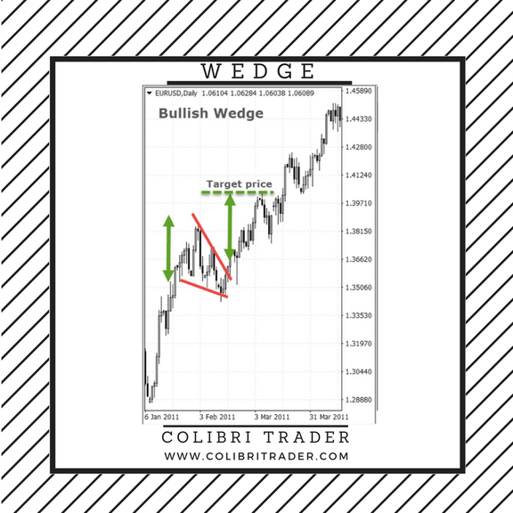

post x-
Falling wedge
Falling wedge with Multiple supports.  It is a Good opportunity if you catch breakout/breakdown.

Post 111-
DarkCloud Cover - Stock strategy
Dark Cloud Cover is a candlestick pattern that shows a shift in momentum to the downside following a price rise. ·
bearish reversal candlestick pattern. similar to the piercing pattern.

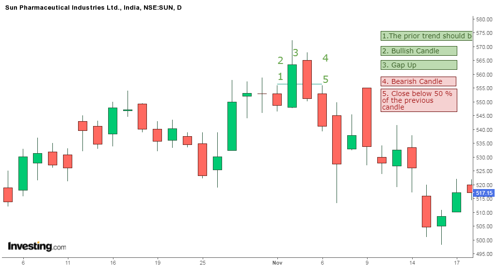

Post 112-
fibbonacci circles or arcs - Stock strategy
Fibonacci arcs are half circles that extend outward from a line connecting a high and low, called the base line. These arcs intersect the base line at the 23.6%, 38.2%, 50%, 61.8%, and 78.6%. Fibonacci arcs represent areas of potential support and resistance.
Fibonacci Arcs are half circles that extend out from a trend line.

Post 113-
Consolidation zone - Stock strategy
Consolidation is a phase when a stock or an index trades within a range. The trend is said to be sideways and may vary depending on the circumstance. Once this range is broken, it may lead to bigger moves, but until the range is intact, the movement cannot be clearly predicted.
Consolidations are the best, might be difficult for intraday, but it sets the mood for the next move. The bigger the consolidation, the bigger is the building erected.

Post 114-
ROUNDING BOTTOM - Stock strategy
rounding bottom is a chart pattern used in technical analysis and is identified by a series of price movements that graphically form the shape of a "U". Rounding bottoms are found at the end of extended downward trends and signify a reversal in long-term price movements.


post x-
averaging price 
How to Calculate the Average Price of Your Stock Positions. Averaging of the stock price. This strategy lowers the cost per share if the stock has dropped. You can calculate the price easily.

I would suggest that never invest all money at a time if you do intraday trading. Trade on some amount if you see the market is not in your favour then do averaging with the remaining amount. Divide it into multiple parts so that you can limit a big loss. So, this strategy is good when you buy shares in a falling market. Here I will give you an example from which you can understand the things.

Suppose you buy 10 shares at Rs 30 (for Rs 300). If the stock falls to Rs 25, you lose Rs 5 per share. At this stage, you have two options First is wait for the stock to jump back or invest Rs 300 more at Rs 25 and buy 12 additional shares. This will bring down your average holding cost to Rs 27.2 (Rs 600/ 22 shares).

In an uptrend, averaging decreases the cost of purchase of new units, while in a downtrend it decreases the loss as the average purchase price Falls. It will be very helpful in intraday trading.

stock price (rupees) - shares
30 - 10 = 300
If it decreases to 25 then invest 300 more @25
25 - 12 = 300
Total-
600- 22

Average price = 600/22 = 27.2

This is also called the rupee cost averaging.


Post 115- 
wpi -Wholesale price index
it captures the average movement of wholesale prices of goods and is primarily used as a GDP deflator.

March WPI inflation @ 14.55%
Extremely bad figure
https://tradingeconomics.com/india/producer-prices-change

Post 118- 
cpi -consumer price index 
it is a price index, the price of a weighted average market basket of consumer goods and services purchased by households. Changes in measured CPI track changes in prices over time

Post116-  Different types of charts


Post 117-
Doji pattern - Stock strategy
The opening and closing price of candles are equal in this pattern at some level. The market will go in the opposite direction if this pattern forms. These candles are found at the bottom and top of trends. When the buyers and sellers fail to decide on the market, It gives rise to the Doji pattern. It is a trend reversal pattern. So, In a Doji pattern, the market traverses its options both up and down, but cannot commit both ways. 
A Doji must seem in a current trend at a trend line or a support/resistance line.
In this, the length of upper and lower shadow varies and the candlestick looks like a cross, inverted cross or plus sign, Gravestone, dragonfly etc.
the simple strategy to check this candle. when 4 green candles forms then buy that stock also checks the trend with this it must be in an uptrend.
4 green candle form buy it 4 red forms sell it?	
If 4 red candles forms then short sell it but check market direction and volume. Exit the position when it shows Doji candles.
Strategy use here - recognize pattern and then trade setup accordingly
In this bulls and bear are in balance.
Also a Neutral pattern.

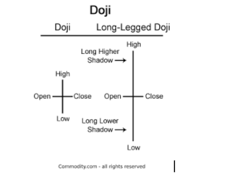
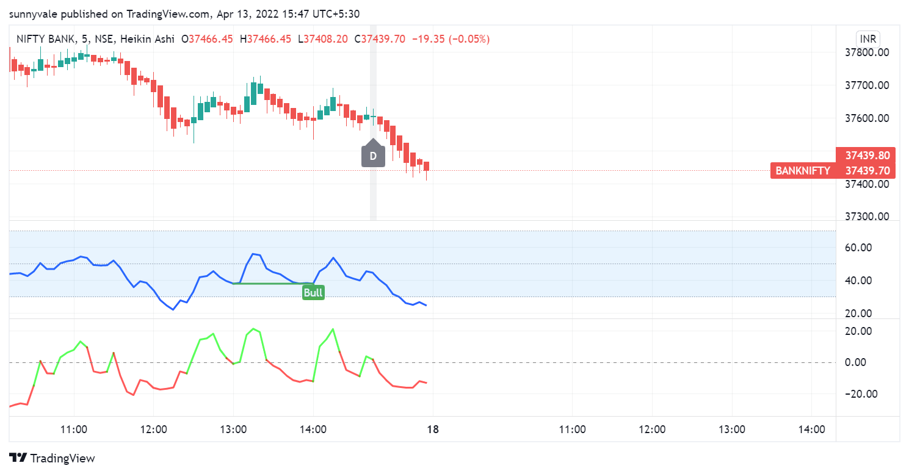


Post 119-
Sharekhan - how to place an order

In Sharekhan you will get these columns/fields while placing an order:
Action-
It includes these types of orders that you can place
Sell big trade:
Buy big trade:
it means in a day if you are not able to sell stocks then it will automatically sell your order. This is called intraday trading. It gives exposure to 10 times. You have to sell it end of the day.
Buy
Sell
Sell against margin

Quantity-
Trigger price-
order Type-

Big Trade-
Used inequities while placing an order.

Big Trade Plus-
Used in Futures while placing an order.


Post 120-
Bracket order:
An order type that lets you secure your profits and limit your losses. You can set intraday to buy/sell limit orders with a target and compulsory stop loss (with a trailing SL option) for higher leverage than trading using product type as MIS.
you can trail stop-loss in this.

Bracket+tsl:
At least put 2% margin in book profit trigger price in bracket+tsl. It is a Bracket order with Trailing Stop loss. At least 1.5% stop-loss price.

Post 121-
MIS (Margin Intraday Square Off)-
Using the product code you will get an intraday leverage between 3 to 10 times based on what stock you are trading.
For F&O, the margins required will be 35% and 45% of the total margin required (SPAN + Exposure) Positions automatically squared off at 3.20 PM.

Post 122-
CO (cover order)-
In a CO you can place intraday buy/sell market orders with a compulsory stop loss for higher leverage than trading using product type as MIS. covered order gives limit up to 4-5 times.

Post 123-
Limit order-
A limit order is an order to buy or sell a contract at a particularised price. When you are buying, you tell your broker not to go higher than the specified price. The benefit of placing a limit order is that you can place buy/sell order at the desired price.


Post 124-
ORB Scanner - Opening Range Breakout - BNF strategy
This breakout scanner is automated trading bot.
It is a simplest intraday strategy and you can also backtest this strategy.
This is a bot it will generate automatic execution of orders by button for Zerodha and Upstox users.
It will automatically choose stocks to trade daily with both buy and sell triggers.
you just have to enter your capital, target.
you don't need to monitor the things.
This software cost around 11800 with GST.
You can also choose your stocks for trade.
it is a trading bot commonly used by traders.
it is an intraday trading system mainly used by professional and intraday traders
it is semi-automated connect with your trading account
the person who faces a challenge in putting stock orders they can use this bot
it is very helpful for them.

Bank Nifty ORB 2PM alert 
Buy Trigger =35019.95
Short Trigger =34522.05

34522, 35019 from there it moved more than 200 points.

34990-2  H=35000, L=34961
much bigger breakout in a expiry day 
this is for Future  calls


Post 125-  
Option Trading 
Options Trading strategy is all about data analysis. You can use option chain data that would help you in Finding the Trend of the Market. options trading strategy can give profit when there is an increase in implied volatility(IV). Higher implied volatility can increase both Call and put premium. 
It is suggested that it is good indicator if  IV is greater than 30 for options.

The option is derived from derivatives. It allows you to buy and sell stock in a different way. Options are also called contracts. It forms a chain that just predicts the short term sentiments, not for the long term. By continuously buying and selling in options and stocks you can get a better result.

To trade-in options, you have to understand some terms like 
CALL option, PUT option, ATM, ITM, OTM, Delta,Theta, lot size, strike price, OI , stock/share premium, Option Greeks
These things are important in learning option trading.


long position-
If the investor buys a stock and holds it for a long time. 

short position-
if the trader sells the stock.


post x-
lot size-
it has fixed no. of the quantity of share premium.

post x-
What is Put Option	
when the price of the stock decreases then you can place this type of position. It is indicated as PE. It is a put option. BUY GAIL PE 340

post x-
The concept of Theta - why time decay is important
Measures the rate at which options lose their value, specifically time value, 
before taking overnight position always check theta decay

post x-
What is Call Option		
when the price of the stock is increased then you can place this type of position. 
It is indicated by the CE symbol. CE is the call option. BUY GAIL CE 340

post x-
stock premium or share premium
Premium is some kind of price of the stock.
You can calculate the premium value as Time value + Intrinsic value.
To buy an option you have to calculate the amount as premium which is CMP * lot size.

Post 203-
Option Greeks:
It varies as a function of 5 forces called the Option Greeks which are Delta (Δ), Gamma (Γ), Vega (v), Theta (θ) and Rho (ρ). They provide a way to measure the sensitivity of an options price. The value of the option as calculated by the Black & Scholes model. 
These greeks are used for Risk management.

post x-
Vega
Vega is an option greek that measures the impact of the change in the volatility of the underlying on the price of an option. Vega calculates the change in the price of an option for every 1% change in the volatility of the underlying.

Suppose SBI is trading at Rs 300 in May and a June Call is selling for Rs 20. Let's assume that the vega of the option is 0.30 and volatility of SBI is 29%. Now if the volatility increases by 1% to 30%, the price of the Option will be Rs 20 + 0.30= Rs 2.30.

In case the volatility had gone down by 3% to 26% instead, then the option price will be:  Rs 20- (3 x 0.30) = Rs 19.10

post x-
Gamma scalping
Gamma measures the change in Delta with the change in stock price. This number is important only if you are trading ten or more lots with delta hedging.
Gamma scalping can be done through buying call or put options and selling-buying underlying stock futures, or through a combination of call or put options.

Post 126-
Call put future parity:
Understanding put-call parity is important for trading options. Put-call parity defines the relationship between calls, puts and the underlying futures contract A condition of the pricing of put and call options and related futures or forward contracts that prevent riskless arbitrage between the different instruments.

this principle requires the same strike, same expiration 
It determines the relationship between the price of put and call options
The formula for put-call parity is c + k = f +p,
c = call price 
k = strike price 
f = futures price 
p = put price.

future price - call price + put price - strike = 0

Post 127-
technical Indicators 
uses in trading to analyse stocks. Indicators are basically used to enter and exit the trades. There are various indicators that we use to predict that stock is bearish or bullish. Selecting indicators according to strategy implies a lot.
With these indicators, you can check the oversold and overbought zone using the indicator. As we know for trading technical analysis is very important. It is a process of forecasting future prices by analysing the past movements of the price. It is a repetition of regular/similar patterns of any stock.
In this, you study the charts, patterns of stocks with indicators. The patterns can be detected by indicators under certain Time frame.
Based on the patterns, you can take a position in the market.
There are two kinds of indicators: leading and lagging.
A leading indicator/oscillator gives a symbol before the new trend or reversal occurs. It leads the price action. When you use this indicator, maybe you will experience a lot of fakeouts. some popular leading indicators are stochastic, RSI, oscillators etc.
A lagging/trend-following indicator gives a symbol after the trend has started. It only gives signals after the price change is forming a trend. It is also known as a momentum indicator. Basically, it trails the price action. some popular lagging indicators are parabolic SAR, Bollinger band, MA(Moving averages).
The combination of both leading & lagging are-
MACD
Supertrend
How to use technical indicators to decide buy and sell	

post x-
Open High Low close
Open-
Price at which the security began trading during the session. the open price will change at each candle. 
High-
Highest price point achieved during the session.
Low-
Lowest price point reached during the session.
close-
final price reached during the session.

Post 128-
stock charts
with this you can view the data in various formats. basically used to analyse the information. There are different chart available to see the information.
Following are the charts that we generally use-
1- Candlestick chart
2- Bar chart
3- line chart
4- point and figure (P&F)
5- Heikin Ashi chart
https://in.investing.com/charts/stocks-charts

post x-
point and figure (P&F)-
It is used to determine strong entry and exit points in the market. It consists of columns of X's and O's that represent filtered price.
Here x means uptick - rising price and o means downtick - falling prices. Its main focus is on price action. So a sequence of Xs and Os variables used to narrate P& F chart.
Each column X or an O cannot be placed together in the same column means these columns are alternate to each other. It ignores the time aspect. Highly useful to interpret in volatile shares.

post x-
line chart-
It is the most basic chart. it plots the vertical line which shows the closing price. The line also shows Ask price, bid price or average.

post x-
Bar chart-
Good chart used by investors used to analyse the stock. 

post x-
What is Candlestick Charts		
This is also called Japanese candlestick chart. It is a style of financial chart used to represent price movements of a stock. Here chart is plotted using a candle. The candle is fighting between bull and bear. It has body and shadow. Candlestick patterns are one way to interpret the price trend of a particular asset.
If the stick is Green means the price goes up.
If the stick is Red means price goes down.
A one-month chart on 1-day timeframe shows the 20 trading days as 20 "candlesticks". Each candle has these points open, high, low, close of that particular period.

There are two types of candles form on this chart-
Hollow candles-
Empty candles represent high periods. It indicates a rising trend or uptrend.
Its colour may be white or green.
Filled candles-
It represents down periods or downtrend. It points to a decreasing trend. Its colour may be red or black.

post 164-
Heikin Ashi
It is similar to candlestick and it is better because it gives clear direction. On this chart, you can also see open, low, close, high on each candle. Basically, it eliminates a lot of noise and creates many smoother charts. This makes the Heiken Ashi charts a good indicator for the noisy and choppy markets. It prevents traders from many of the false reversal signals and trade setup.
Just a small suggestion Don't try to use a lot of charts, because sometimes they are contradicting each other if not minutely interpreted. Only the price and volume is enough.
You can use “Heikin Ashi” pattern and “Stochastic” to trade more perfectly.
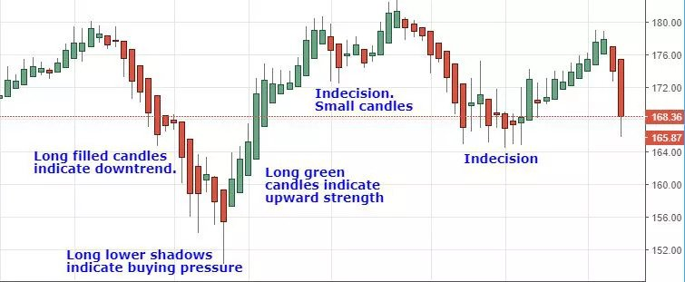

Post 129-
Time frame-
In this, it shows the candles according to the time interval that you set.
Here you will get these options:
1 min-
you can do intraday trade using this time frame.
3 min-
little clarity you can easily get sideways, uptrend, downtrend.
for intraday, you can also follow 5 min(avoid), 10 min, 15 min chart.
30 min, 60 min-
used by swing trader.
weekly-
These are used by experts those who manage the big portfolio.

Post 130-
What is stock Chart patterns-
Patterns are particular price formations on a chart that predict future price movements. It is important to be familiar with price movement. They also help in determining trend direction.
To analyse these patterns you must know about resistance and support levels. Support is a point at which an asset's price stops falling and jumps back up. Resistance is a spot where the price usually stops rising and falls back down. You can draw a support and resistance line on the chart if you do trading. These points change multiple times. It's a great signal if volume increases to the upwards & price breakdown of the support line.
When there are more buyers then the price will rise. If sellers are more than price will fall.
It is possible that you can get future prices based on past movements. This is a part of technical analysis.

Chart patterns are distributed into reversal and continuation patterns.
These patterns can be used in bearish/bullish/volatile markets. These patterns formed in all types of charts, except for point and figure charts. If you want to understand these Patterns then observe the stock for 7-days. Find the range of stock prices.

Post x-
chart patterns to make money.
A- Reversal pattern:
The reversal of the trend provides a very good entry point for you to participate in a trend. 
head and shoulder
Double Top and Double Bottom
Triple Top and Triple Bottom
Rounding Top chart pattern
Rounding Bottom chart pattern
Bearish reversal patterns


B- Continuation Chart Patterns
Rectangles
wedges
Flags
Triangles
Cup and Handle

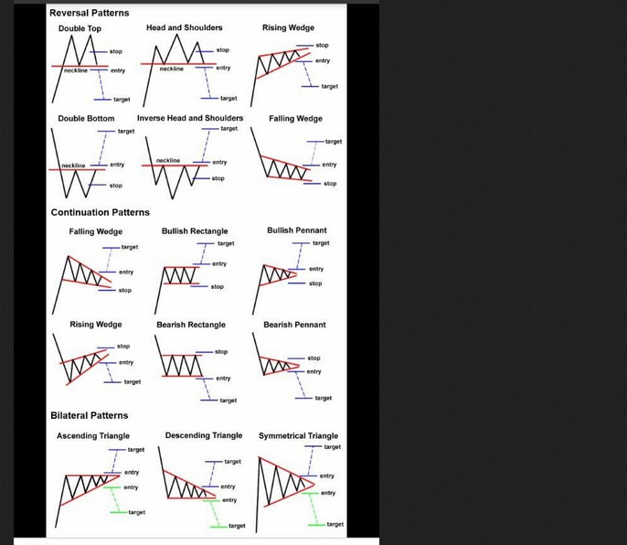
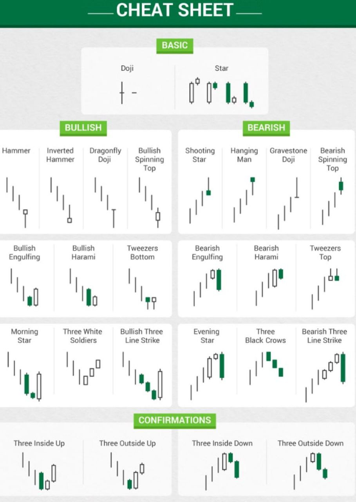

post x-
bullish patterns
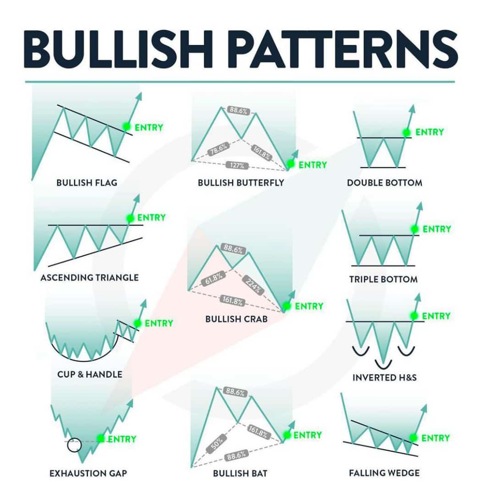


post x-
Rectangles
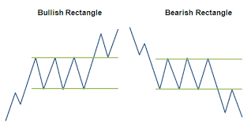


Post 131-
candlestick patterns - Stock strategy
Following are different types of candlestick patterns that also help to predict stock prices.
The Three White Soldiers
The Bullish Engulfing
Dark cloud cover
Two Black Gapping
Three Black Crow
The Pinbar
3 Inside up
Sea pony harmonic pattern
Harmonic pattern black swan
Doji
Long-legged Doji pattern
Three Candle Trend Reversal Pattern
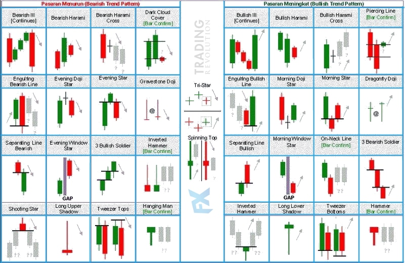
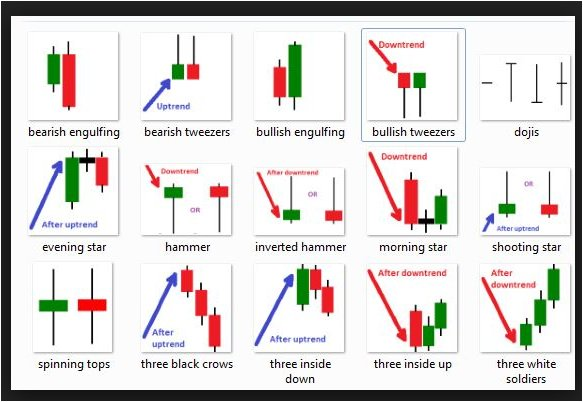

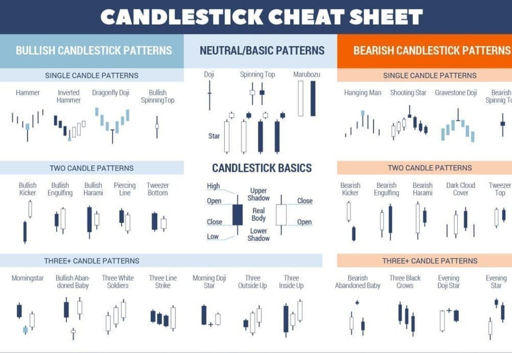


Post 132-
Bollinger band Technical Indictor
Bollinger Bands are bands that make it easier to identify the price channel an asset typically trades within. When prices move towards the edges of this channel, they will either breakout (requiring further analysis) or return to the expected norm. It is a lagging indicator.
It gives us the limit of price movement and trend reversal point. It shows the upper and lower band. When the market is quiet, the band's contract volatility is less and when the market is loud, the bands expand means volatility is more at that time. It is Used to read market strength.
2 tracks intersecting each other inside Bollinger bands are called moving average. The moving average(MA) crossover should not be overlooked(miss). When you add this indicator to chart then it will show 4 options: Fields(column), period, standard deviation, moving average type.
voltality less then expand less if voltality more expand more- lagging indicator- bollingar band- use this with RSI or moving average indicator- when any candle breaks llimit then buy/sell it	

Chart analysis-
If the candles start to cross the upper band, then the price will increase.
If the candles start to cross the lower band, then the price will decrease.
When line touches the upper band then it means the price will go down when the line touches lower band then it means its price will go up.

post x-
Here you can use these strategies with this Bollinger band indicator-
1- RSI & MA-
If we use RSI/MA along with this band than you can get a more accurate signal.
2- Bounce strategy
You can use Bollinger Bands to identify the 'Bounce Back Price' to get in. Buying a bounce is a strategy that focuses on buying given security once the price of the stock falls toward an important level of support. Traders who "buy a bounce" attempt to profit from a short-term correction or "bounce" off of the identified support.

Post 133-
technical analysis indicators 
Following are the indicators that are very helpful to find out the Trend With this you can also get signals to buy and sell the stock it helps you in trading- 
ADX(Average Directional Index) or DMS-
ATR(Average true range) Indicator-
ROC(rate of Change) Indicator- 
CCI (Commodity Channel Index) indicator- 
William
MFI (Money flow index) indicator-  It also shows the overbought and oversold zone.

 post 189-
 CCI
 Its range is -100 to 100. It shows a bullish signal if CCI value crosses over -100.  It is also a momentum-based oscillator which is used to help determine when an instrument is reaching a condition of being overbought or oversold. 
it is leading indicator.

 post 190-
 ATR
 It shows the volatility of stocks. We can choose stocks based on ATR value. With this, you can also set stop loss. Higher the ATR value higher the volatility. it is regularly used in forex exchanging.

 post 191-
 ROC
 It is a momentum oscillator, which estimates the rate change between the current price and the n period past price. It can be used to identify a general trend, oversold, overbought conditions as well as divergences. The ROC indicator can be used as a timing tool within a trend analysis. 
 It is  leading indicator.

 post 192-
 ADX
 It determines whether a stock is trending or not and how strong the trend is. It is mainly used to determine the strength of a trend. If you do selling/buying according to the way market goes it will decrease risk and increases profit potential. When you add this indicator on the chart you will get two columns +DI(shows upward movement) & -DI(shows negative movement). You will get a range of signal between 0-100.
If it shows below 20 then it signifies the low volatility and if it is Above 20 or 25 which shows the trend. If it forms crossover which also presents the trend.
ADX is nondirectional so it will quantify a trend's strength regardless of whether it is up or down.

+DM = Today's High - Yesterday's High (when price moves upward)
-DM = Yesterday's Low - Today's Low (when price moves downward)
You cannot have both +DM and -DM on the same day. If there is an outside day (where both calculations
are positive) then the larger of the two results is taken. An inside day (where both calculations are
negative) will always equal zero

Post 134-
charges and taxes on each order placed in the stock market	
Service/Brokerage charges-
charges are different for intraday and delivery trades.
1- Equity cash brokerage:

Delivery (buy today and sell later) based equity trading-
0.3% (sharekhan)
Delivery brokerage free in Zerodha.

Intraday trading-
It means same day buy and sell.
.03% (sharekhan)
0.01% (Zerodha)

https://upstox.com/calculator/brokerage-calculator/

Example-
Suppose you have done trading total amount is 30,000 after buy and sell the brokerage will be-
In intraday- (30000*.03%) = (30000*3)/10000= Rs.9 brokerage
In holding- 30000*.3% = (30000*3)/1000 =Rs. 90

Note: Traded value is the buy and sell total value of that day plus brokerage amount.

2- Equity F&O Brokerage
In options, you have to pay charges on both buy and sell of contract.
Suppose brokerage is 20 then on buy/sell you have to pay Rs40(Rs. 20 Buy and Rs. 20 Sell).
Rs 50 per trade (sharekhan)
Rs 20 per trade (Zerodha)
These charges vary from person to person. If you become a good customer of sharekhan then they will reduce the brokerage charges that will save you a good amount.
To find the information about the charges they will present on the receipt that you got from your broker after trading. Also on the slip, you will get ISIN(international securities Identification Number) with each trade.
It is a 12 digit code that helps in identifying securities such as stocks, equities, notes, bonds, debt, funds etc.

Tip: Don't give any approval to your broker to trade on behalf of you. Their purpose is not to make you rich but to make themselves rich. So they will use margin to expand the numbers of trading to increase their brokerage.Avoid this kind of thing.
If you are not able to manage your money then you can hand over your money to Mutual Fund Manager.

Post 135-
Statutory charges
It includes things like GST, stamp duty and STT(securities transaction tax) that is taxed by either central or state government. The broker Just collects these on behalf of the government and deposit it to the government. STT goes to NSE. These all are mandatory tax payable in India on the value of securities excluding commodities and currency. Transacted through an approved stock exchange.

Delivery Intraday
STT- .125 0.025
Stamp charges- .01 .002%
Turnover charges- .0001 . 00205%
SGST & CGST 9% 9%

F&O-
sale of futures in securities- .01% on-sell
For Futures, the tax has been decreased to 0.01% on the sell-side.
sale of an Options insecurities, where the option is exercised- .125%
sale of options in securities- .05% on-sell
.05% STT on each selling option order.
The taxable value of supply in contract note is 1.03% on all positive supply.
2.5% per unit brokerage


Post 136-
various market segments in trading:
The NSE National Stock Exchange divided the market in multiple products.
Trading itself is Art and luck is a by-product in the process and once mastered it is moreover like Printing Money Legally.
It is just a buying and selling of stocks which represent possession on businesses. 
Following are different divisions on which you can work-
1- Equity(Capital or stocks) market
Equity market deals in stocks. In this your loss & profit is limited. It is based on underlying assets like equity shares. In this, you can hold or buy/sell stocks on intraday.
2- Derivatives market-
3- currency derivatives
FOREX comes under this. In this, you will be trade currencies like Indian rupees, US dollars, Euros and GBP.
4- commodity market-
It is offered by Multi Commodity Exchange of India(MCX). This market opens at 11:30 a.m. It includes oil and natural gas, foodstuffs, metals, gold and minerals.
5- cryptocurrencies -
Most popular currency is bitcoin and Ethereum. It is not offered by NSE.
6- Bond

post x-
Derivatives market-
It includes trade in futures and options(F&O). In F&O loss is limited and profit is unlimited. In this, there is a contract which is valid till expiry. Most active segments by value are Equity derivatives.
If you are doing trading on the expiry day of options, try to trade with less quantity. There is huge change occurs the premium can go down to zero. So do trade how much loss you can bear. I will recommend on expiry day try to exit the position till 2:30 pm and the great movement will be shown after 1:00 pm. If you can take the risk then you can check the movement after 2:45 PM.
To work in futures you need at least an investment of 1 lakh rupees. If you have an open stock position in Futures, you can either sell it off or rollover at the time of expiry. A rollover means traders readiness to carry forward their futures positions to the next series.

Post 137-
Popular Stock Exchanges in India-
The stock exchange is basically an organization which hosts a market where Stocks, Bonds, Futures and Options, Commodities, etc. are exchanged.
It is an organized market for the purchase and sale of industrial and financial security as per certain well-defined rules and regulations. Here, buyers and sellers come together to trade the financial instruments during the trading hours approved by the organization.
To trade in a Stock Exchange, the businesses must be listed there. The exchange imposes rules and guidance on the firms & brokers for effective trading and provides the ability for the issue and redemption of securities. Indian stock market is among the best and the most strong markets in Asia. In India, all exchanges are registered with SEBI.
Following are the different exchanges present in India-
1- Bombay Stock Exchange(BSE)
BSE's index is associated by the name SENSEX (Sensitive Index) which presents 30 top trading companies. Sensex (Top 30 stocks in BSE). The BSE has 5000 firms approximately.
2- National Stock Exchange(NSE)
This is a powerful index in India. It is located in Mumbai. Nifty (National Fifty) is the index of NSE, shows 50 most traded companies. It can go 100 points up. Generally, we trade in NSE, not in BSE because of liquidity. The company that they show in NIFTY 50 is based on a market cap that changes daily. It is also a primary exchange. It has more than 1600 firms listed.
3- Calcutta Stock Exchange Limited(CSE)
4- India International Exchange (INDIA INX)
Below are former stock exchange markets-
1- Mangalore Stock Exchange (MSE),
2- Bangalore Stock Exchange (BgSE)
Commodity Derivative Exchanges in India
1. Multi Commodity Exchange of India (MCX)
2. National Commodity and Derivatives Exchange (NCDEX)


Post 138-
different Trading Platforms on which you can trade. 
As we know before starting any business we need capital, knowledge and space to start work. To do trading you need a trading platform to work in the stock market. The platform is a trading application on which you place trade orders which must have these features like good user experience, speed of execution, usability, less brokerage, Regulatory compliance, supports, spreads, service charges, order placement, stock advice etc. In India, there are around 70+ stockbrokers where you can open Demat account.

Demat and trading account in India is provided by two depositories NSDL and CDSL through brokerage firms known as a stockbroker. 
All these platforms also provide stock recommendations.

To open Demat account you need documents such as PAN card, Address proof(Aadhar card), Identity proof(driving license) etc. if you are an employee in any company then you need a salary slip or last 6-month bank statement. It takes 4-5 days depending upon the broker on which you applied. They verify all your details then they will send you a starter kit in which all details are mentioned like your Demat Account number, Terms & condition etc.
Following are some popular Trading platforms-
1- Sharekhan Trade Tiger -
In the Sharekhan first year, membership is free. After this, you have to pay 338 rupees annual charges. With this, They also assign RM(Reporting manager) with your Demat account which can handle your profile.
2- Zerodha Kite-
In this, the annual maintenance or opening charge(AMC) for trading and Demat account is Rs 300. It also provides Automated Trading facility.
3- Upstox
4- ICICIdirect Trade Racer
5- Motilal Oswal Trade
6- Angel Broking
7-IIFL (India info line) Trader terminal
It provides you with a trading platform on which you can invest in different securities. It's headquartered is in Mumbai. It is one of the top trading terminals.
8- Fyers trading platforms-
They also provide Trend scanner
9- profitmart
https://profitmart.in/products-demo/
support-	 stock@profitmart.in

Post 139-
stocks exchange
The stocks exchange is divided into multiple products like Equity & derivative market. Basically, the stock market helps firms raise fund. 
In this exchange, there are lots of companies registered. Each company comprises a different number of shares which are based on the company size, industry, market capitalization etc.

Basically, the financial market is divided into money and capital market.
stock/capital market also classified into the primary and secondary market.
primary includes IPO. companies who sell stocks the first time this process is known as IPO.
secondary includes buying and selling stocks by holding position. Investor and traders generally do this. 
All these things are done through the stock exchange.

Post 140-
Types of stock/share-
defensive
blue chips
Income stocks- They pay higher dividends
Growth stocks
cyclic stocks
penny - They are low priced
value

post x-
dividend-
Find stocks that give divinded every month.
select stocks so that you get dividend every month. fo this you need to select different stocks.
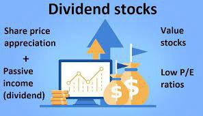

post x-
best dividend stocks to buy 
SJVN(Satluj Jal Vidyut Nigam Limited)
Indian Oil Corporation
Mazgoan Dockyard Shipbuilding limited 
coal india

post x-
how to select stock for next day trading?
1 - use Breakout Screener
2- https://chartink.com/screener/bullish-for-next-day
3- find Volume Shockers
https://finance.yahoo.com/screener/predefined/most_actives

post x-
Blue chips stocks-	
They have the highest value.
These stocks are well established and financially strong companies. It has a market capitalization in billions. These are among the top three companies in his sector.	

Post 141-
stock indices
In the share market, there are lots of indexes available. These are also known as stock indices. Each index, there are the most popular stocks present. The timing of the Indian market is from 9:15 A.M to 3:30 P.M. In this period of time, millions of transactions are executed. 

Post 142-
Demat Account
To start trading you need a Trading account for buying and selling With this your Savings and Demat account also attached. Demat account is used to deposit the shares you have purchased electronically.
Demat Account Number is DP ID (Depository ID- 8 digit) + Client ID
Generally, what beginners do they Buy on rumour sell on news this may sometimes cause a big loss. Try to avoid these kinds of strategies. 
First, learn trading on a dummy account to become comfortable with the trading platform.
Always remember that the Stock rate increases through stairs and falls through the elevator so always be prepared for a quick exit. 
Never listen to the analysts which you are watching on the TV, you are a better analyst than them. Marketing is needed for bad products. Even big investors are seriously trapped in many companies.
The Important thing is Companies that grow without debt, building strong brand name & value alone are investor-friendly. Zero debt firm will fall lesser, than a company with debt.
There is some rumour that the stock market is under the control of big businesses those who are utilising the best brains including Doctors, Engineers to analyse the trend of the market well in advance. Retail traders have no control over the stock price. The price of the stock is decided by need and supply.
If you have done trading then it will take 2 days to settle your amounts.
There are some other kinds of trading on which you can earn much more but they are very risky. Dabba trading is the kind of trade which i am talking about in which trade happens on paper or excel. This trade does not happen in the exchange market. You can do one trade on multiple stocks at a time but it is not a legal way.
Remember one thing trading is riskier. Never trade on borrowed money. Work on your extra money.

Post 143-
stock advisory
If you work with any stock advisory firm then check the following things that will help you in case if things not go well-
1- client support
2- compensation(return)
3- firm leadership
4- operational support
5- problem resolution
6- professional development
7- Technology support.
Keep these things in mind before taking any advice.
	

Post 144-
IPO-
when a company comes out with an initial public offering (IPO) it is called the primary market. its purpose is to list the stock in the share market. once the share gets placed it starts trading in the secondary market.	

factors matters in ipo are-
price band 3.5% stake
issue size 21000
valuation 6 lakh cr
https://www.chittorgarh.com/report/ipo-in-india-list-main-board-sme/82/
https://web.stockedge.com/edge-reports?report-type=iponotes

fact-
Xiaomi files for the world's biggest IPO in Hong Kong	

post x-
ipo filing-
https://www.angelone.in/knowledge-center/ipo/what-ipo-process

Post 145-
why not buy Put Instead of selling the call.

Short call has higher probability of profit than buying put option. If the stock remain unchanged or even rises a bit (not a lot), short call still makes money.
When you buy a put option, your total liability is limited to the option premium paid. That is your maximum loss. However, when you sell a call option, the potential loss can be unlimited. Hence your margining will be exactly like how the margins are imposed on futures.
As we have already seen, you buy put option when you expect sharp downsides in the stock. Therefore, you bet by limiting your risk to the option premium and play for the downside in the stock. You sell call option when you expect that the upsides for the stock are limited. You are indifferent to whether the stock is stable or goes down as long as the stock does not go above the strike price.

An In-the-Money (ITM) option is one that has intrinsic value and time value. 

Post x-
Intrinsic value of an option: 
The option premium can be broken down into two components - intrinsic value and time value. The intrinsic value of a call is the amount the option is ITM, if it is ITM. If the call is OTM, its intrinsic value is zero.

Post x-
Time value of an option: 
The time value of an option is the difference between its premium and its intrinsic value. Both calls and puts have time value. An option that is OTM or ATM has only time value. Usually, the maximum time value exists when the option is ATM. The longer the time to expiration, the greater is an option's time value, all else equal.
At expiration, an option should have no time value.

Post 146-
naked option

A naked option, also known as an "uncovered" option, is created when the seller of an option contract does not own the underlying security needed to meet the potential obligation that results from selling—also known as "writing" or "shorting"—an option.
A naked option is when somebody sells a call or put that is unhedged. 
A naked option is an investing term that refers to an investor selling an option without holding a corresponding position in the option's underlying.
Short “naked” options are calls or puts that are sold that have nothing to limit their risk (shares of stock, long options). 


Post 147-

different platforms provided by Zerodha. you can trade in any instrument/product by using those platforms of Zerodha. With these platforms, you can learn 
about the market and start trading or investing.

Pi
It is a scanner on which you can check the details of any stock. 

Advantages-
It is a great tool for intraday trading. 
you can use entry and exit conditions of your strategy on the same scanner using OR condition.

Features-
It supports real-time stock screening. 
it can generate alerts in market time. 

Usage-
If you want to use this then load this scanner before 8:50 am or after 9:30 am for smooth running. 

Kite

It is a fast and elegant flagship trading platform. you can easily place buy and sell orders on this platform. It is good trading software.

https://kite.zerodha.com/

Z connect

It is a blog about trading and investing. Here you can get the info related to how to trade safely and also give you knowledge related to a phishing scam.
It also provides a learnapp to learn more about trading. LearnApp makes high-quality financial education taught by great leaders. Here you will get all info related to finances.

https://zerodha.com/z-connect/
https://zerodha.com/z-connect/traders-zone/introducing-learnapp


console
The central dashboard for your Zerodha account. Previously it is known as Q but now it has been replaced by the console. In this dashboard, you can check your account details, stock positions etc.

https://console.zerodha.com/


varsity
With this, you can study various things related to the stock market through web and mobile platforms.

https://zerodha.com/varsity/

Sentinel
Sentinel is a program that allows you to create real-time market alerts across 80,000 stocks, bonds, commodities, derivatives etc.

https://sentinel.zerodha.com/

Sensibull:


Smallcase

It is a thematic investing platform that helps you invest in intelligently-weighted low-cost portfolios of up to 20 stocks. Each small case is designed to help you capitalize on a theme or trend.

https://smallcase.zerodha.com/


Streak:

StockReports
Each report is packed with insights ranging from relative valuations, earnings estimates, industry and sectoral analysis to proprietary ratings for factors such as risk, price momentum, earnings, valuations etc.

https://stockreports.zerodha.com/

Coin
Invest in Mutual funds Direct at Zerodha using this platform. There are no hidden commissions.

https://coin.zerodha.com/

post x-
sensibull
It is an options trading platform. It allows you to build and trade strategies, 
Features-
Track real-time P&L and 
Option Greeks
spot trading opportunities with IVs 
IV percentiles

Events info - https://web.sensibull.com/events

Volume Breakouts
OI Buildups 
PCR
https://web.sensibull.com/option-chain?expiry=2022-01-27&tradingsymbol=NIFTY	
https://web.sensibull.com/	

https://learn-trading.sensibull.com/ From here you can purchase the courses.
https://www.youtube.com/c/BeSensibull/playlists  - How to trade options.

post x-
Top mutual funds
invest in Flexi Cap funds.
Flexi Cap funds invest a minimum of 65% of their assets in equity and equity-related instruments. It has the flexibility to invest across large-cap, mid-cap and small-cap market segments without any restrictions.
The fund leverages opportunities across stocks of different sizes, sectors and themes based on market conditions to reward investors with superior risk-adjusted returns over time. However, Flexi Cap Funds invest in mid-cap and small-cap stocks and involve market timing, making them suitable for market-savvy investors.

Axis blue chip large cap
Parag parikh flexi cap
Axis small cap
Hdfc index sensex plan fund
Mirae asset tax saver

top Flexi Cap funds 
Fund Name				3Yr Returns	Link to invest
Parag Parikh Flexi Cap Fund	24.98%	Invest Now
UTI Flexi Cap Fund	20.15%	Invest Now
Canara Robeco Flexi Cap Fund	19.37%	Invest Now
Axis Flexicap Fund	19.27%	Invest Now
Invesco India Multicap Fund	18.51%

Factors to consider before investing in Flexi Cap funds:
	Time horizon: As these funds may have a higher allocation towards mid-cap and small-cap stocks, you must invest with an investment horizon of at least five years.
	Track record: Choose funds that have performed well through both the bull and bear market phases. Moreover, you must check the Flexi Cap fund portfolio as they may follow a conservative approach with a higher allocation towards large-cap stocks.

You can invest in Flexi Cap funds if you have a higher risk tolerance and seek a dynamically managed investment.

Advantage of investing in Flexi Cap Funds:
	Diversified Portfolio: As these funds invest in stocks of different sizes across sectors, industries and themes, they offer a diversified portfolio that handles stock market volatility over time.
	Flexible approach: As these funds can drastically reduce exposure to riskier market segments and simultaneously raise exposure to large-cap stocks they can stabilise the portfolio during a bear market. Moreover, they raise exposure to mid-cap and small-cap stocks during a broad-based market rally to tap growth opportunities.

Post 148-

pre-open market
basic strategy to work in a market that plays a great role in trading. you can check pre-market on the Nseindia website between 9.05 to 9.07 a.m.

as you understand from the name it is the trading activity that occurs before the regular market session. beginners can follow these all things if they don't have much idea. this session lasts for 15 minutes.
9:am to 9:15 am

follow this Strategy to work in the market-
8:30 am: Open the website to get the news about stocks. 
Watch or read charts and analyse whether they create a pattern or not. Add some stocks in your watchlist.
watch Business Channels and Get Market Rumors.
9:00 am to 9:08 am: From the pre-open market, you can check which stock today is going to rock and which are going to shock. All orders are collected and matched at a single market opening price at the end of the session.

9:20 am open National Stock Exchange of India Ltd. website Under “Live Market”-> live analysis.
click “Top Gainers/Losers”. watch the Nifty 50 and F&O Securities tabs and add the top 3 movers from this list to your watchlist.

3:40 to 4:00- execution of trades at the closing price

For equity-
select stocks opening with 4% gap up or down or near to 4%
From 9:15 to 9:20 am check which stock has the max volume the trade on it according to trend. 
If the pre-open market opens -ve then sell stocks work according to the market trend.

For F&O-
select f&o stocks.
stocks will load when they get loaded click on the 6th column value in lakhs, click double click on that and you will get stocks with the highest value.

Post149-
 ITR form
 e-filing made easier with pre-filing feature


    

    
 
    

    


Income Tax Return is the form that assesses files information about Income and tax thereon to the Income Tax Department. There are different types of form like ITR 1, ITR 2, ITR 3, ITR 4, ITR 5, ITR 6 and ITR 7. 


In march check for outstanding tax demands and make sure you clear them at the earliest.

clear previous dues before starting the next financial year.


For salaried employees-
PAN, Form-16 issued by your employer

If you do day trading like your business then earnings will be added to your business income. If you buy a share for investment then taxation is different. If you hold a share for a year or more then there is no tax. If you hold a share for less than a year then on capital gain there is a 15% tax on investments. An important part of trading is filing income tax returns (ITR), irrespective of whether you're profitable or have made losses.

https://www.incometaxindiaefiling.gov.in/
https://www.incometax.gov.in/
https://www.incometax.gov.in/iec/foportal/   New site
Third party app to file tax return- https://cleartax.in/s/black

post x-
Income tax authority-
It is a government agency undertaking direct tax collection of the Government of India. It functions following the Department of Revenue of the Ministry of Finance. Income Tax(IT) Department is supervised by the apex body Central Board of Direct Taxes.

post x-
kardaata e-sahyog abhiyan
ITD to launch Kardaata e-Sahyog Abhiyaan on Income Tax Day 24th July 2019.
The department will also launch a   “Kardaata e-Sahyog Abhiyaan” which will endeavour to assist & support taxpayers & other stakeholders in enabling them to e-file their returns & discharge other tax related obligations.


post x-
Documents required to file ITR-
1.    Form-16
2.    Interest certificates from banks and post office
3.    Form-16A/Form-16B/Form-16C
4.    Form 26AS
5.    Tax-saving investment proofs
6.    Documentary proofs to claim deductions under section 80D to 80U
7.    Home loan statement from bank/NBFC
8.    Capital gains
9.    Pre-validation of bank account for ECS(electronic clearing service) refund
10.    Aadhaar card
11.    Details of investment in unlisted shares
12.    Bank account details
13.    Updated bank and post office savings account passbook, PPF account passbook
14.    Salary Slips

Apart from salary and income from house property, an individual is also required to report income from other sources such as interest from savings bank account (download interest certificates via the Net banking facility), fixed deposit (Bank/Post office/Co-operative society), dividend income etc.


    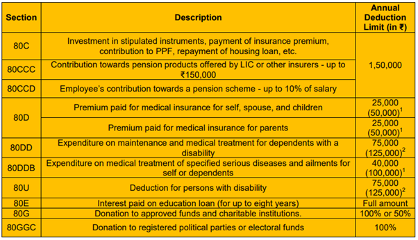

    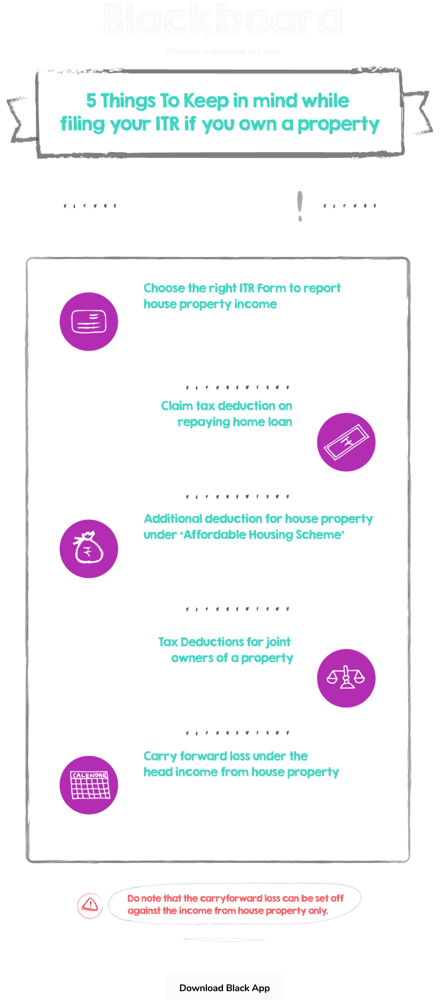

sample report
    https://docs.google.com/spreadsheets/d/1Kzm50zzry8dMa1ZiUMrlJPZd2iay-LCRdFOVQ4WBmX8/edit#gid=0		


post x-
automate option strategy-
https://opstra.definedge.com/		
iron condor	
call spread
straddle		
Strangles	
ironfly

https://intradayscreener.com/app/option-strategy		
iron condor	
call spread	
straddle	
butterfly	
Strangles

https://www.niftytrader.in/option-strategy

Post 150-
Algo trading
just enter capital, auto trading happens,	
Algo/auto/high-frequency trading(HFT). 
Retail investors are not allowed to do this HFT. It is mostly used by big firms like investment banks, hedge funds, proprietary trading firms etc. In India, we do semi-auto trading. In this, we use some software That is offered by brokers or purchased from third-party providers. On these kinds of software, you can set trading bots that will automatically place trades in your trading account. This is only available for zerodha, upstox users.

What to do for Algo trading:
You can apply directly or with the help of the broker for approval. Its approval is a multistep process. For this, you have to participate with relevant Algo trading strategy in the mock environment.

What we need for Algo trading:
Real-time data feed (costs - Rs.1500 per month)
Amibroker charting platform (Rs.20,000,)
A bridge/plugin that can connect the charting tool and broker account (Rs.40000 per year)
Order Management system that executes the trade/order. The best price which allows the broker to get his order filled is the optimal execution price.
A cloud server. (Rs. 20000 per year.)

Basic Flow:
1-Design strategy (when to enter, exit)
2 -Backtest it-
We use backtesting platforms in an attempt to improve training models and strategies(Algo). Here we use historical data.
For backtesting, you can use a platform like kuants, arque algo trader.
A web platform like quantra blueshift has given access to market data,& provide a platform To evaluate and build Algo strategies using the power of stats and computing.
3-Deploy the strategy to servers

https://blog.quantinsti.com/collar-options-trading-strategy-python/		
https://quantra.quantinsti.com/courses	

https://quantra.quantinsti.com/dashboard?tab=ongoing
https://quantra.quantinsti.com/learning-track/automated-trading-in-equity-market
https://quantra.quantinsti.com/dashboard?tab=events

post x-
Types of Algo trading strategies:
1-momentum/trend following-
In this, we are using different technical or quantitative indicators to analyze the available information. 

2-statistical arbitrage-
In this, we look at a ratio/spread between the pair of stock's prices.
If the spread goes beyond the expected range then you buy the stock
and sell the stock which has outperformed in the expectation that the spread will go back to its normal level.
arbitrage is risk-free profit.

3-ML based Algos-
In this, we use historical data of markets and feed this to ML Algo that they designed. Data is divided into testing and training data. The Algo learns the patterns and features from training data itself to a decision like identifying, classifying or practising new data or outcomes.
So, you need ML(Machine Learning) for trading and learn to Train and Test the dataset. There are different ML algorithms implemented on Financial markets data and you have to learn which algorithm is suitable for the ticker(It is price movement either it is up or down) according to current market conditions and at what time of day that matters.

4- mean reversion
learn the classic techniques from Mean Reversion Strategy in Python	

5-market making

6-sentiment basis

Prediction model:
1) Movement in overseas markets account for possible market sentiment or latest economic news
2) Globally, markets and exchanges are inter-connected influencing each other.
3) It is possible to predict the market trend in one geography by studying market movements in other geographies.

post x-
Top Algo trading platforms are:

1-zerodha streak-
2-omnesys nest

3-Odin
4-algonomics

5-presto ats

6-MetaTrader 

It includes a meta editor which is used to develop custom indicators scripts.
Best Charting platforms to analyze chart-
MetaTrader
Ninja trader
MetaStock
esignal
Ambibroker- it also supports auto trading.
Multicharts

For all these above software you need Data Feed from nse, mcx or any segment you want to do trading in.

For Data Feed, you can get data from these vendors-

Truedata
CDP India
global data feeds

For analysis what you need is-
Script name, date, time, open, high, low, close, volume.

Analyse prices and other tick data evaluate your trading portfolio, calculate VaR, perform backtesting, expert in pivot tables, formulae, charts or even VBA and PowerQuery.

7-quantconnect
https://www.quantconnect.com/	

8-	https://tradetron.tech/	
https://learn.tradetron.tech/p/tsvg
https://www.youtube.com/watch?v=yy7LbuGv550&ab_channel=CashCow-KaushalMehra
https://tradetron.tech/strategy-stats
https://tradetron.tech/strategy/665735

9-	https://quantiply.tech/	

10- XTS trading platform

11- learning curve is deep with Python

post x- 
zerodha streak-
you can do trading without coding. just based on technical indicators, you can do this. Indicators like Bollinger bands, RSI, Moving average and multiple chart patterns. Its backtesting feature helps in getting maximum gains, minimum loss, average gain, average loss etc.
Streak is an Algo trading platform that helps you create, backtest, and deploy Algos live in the market without coding. With Streak's intuitive strategy builder, you can create Algorithms, backtest them to measure their performance, and deploy them live in the market in just a few minutes.
Backtesting/Automate a Options.
https://streakv3.zerodha.com/	
https://www.streak.tech/

post x-
Tax Loss Harvesting
If you have realized capital gains on which you have to pay taxes, you can reduce your tax outgo by selling any holdings which are in losses before March 31st. This is also called Tax-Loss Harvesting.

Post 151-
Smart ways to save tax with making little investment 
There are lots of options available to save tax. By utilising these options you can save a big amount of money.  There are 10+ schemes in which you can invest your money.
These things are important to plan before the beginning of the financial year.
If you plan this before the start of the financial year it will help you achieve your long term goals.

Sections-

There are sections in which we need to save tax- tax exemption

section 80C (investment)

section 80D (medical insurance, special allowance)

section 80EE (Home loan)

Section 80 ccd


Factors to consider-

The main factor we consider while opting for any scheme-

Age

Interest rate (Returns)

Lock-in period

Place (bank/post office)

Online/offline

Children

Investment


Following are the best tax saving options-


ELSS - mutual fund

You can do maximum investment in health insurance up to 25,000 and save tax up to 23,400.


To save tax you need to invest in some Government schemes. By investing in these schemes you can save some amount. Your investments are secured on their platforms. 
These saving schemes are useful to save tax under Sec 80 C and 80 D. It is mandatory to make an investment of 1.5 Lakh under these sections to reduce your taxable income.

Home Loan
By repairing the principal amount of the home loan.

composite loan

LIC premium payment
contribution to LIC annuity plan. Buy the LIC policy. For this, you need 20,000 investment approximately yearly.


post office small savings schemes-

NSC(National Savings Certificates)
It comes under Post Office schemes. To opt for this policy you have to visit the post office.
lock-in period is 5 years.
Interest rate- 7% to 8%


RD(Recurring deposits): Can be closed after 3 years, only SB rate of ...


Electric vehicle


MIS: Can be closed after 1 year*

kvp scheme - post office deposit 50k - double amount after 9 years 10 month(118 months)


PPF(Public Provident Fund) -
It is the best option to save tax. This lock-in period is a little long. The account can be opened in the post office. Some private banks also offer this facility to invest in PPF. Its lock-in period is 15 years.
Interest rate- 7% to 8%


life insurance premium
It has not much benefit.


Annuity plan premium payment


Tax saver FD(Fixed deposits)


Sukanya Samriddhi scheme (Sukanya Yojna)(SSY)


Ulips (Unit Linked Insurance Plan)


NPS(National Pension Scheme)


NABARD bond


Payment of tuition fees of children.


Senior Citizens Saving Scheme (SCSS)

It offers a higher rate than PPF. Its lock-in period is 5 years which also can be extended by another 3 years. Only 60+ years old citizens can opt for this scheme. The account can be opened at post offices or banks.

Interest rate- 7.40%


EPFO-

The Employees Provident Fund Organisation (EPFO), is an organization tasked to support the Central Board of Trustees, a statutory body formed by the Employees' Provident Fund and Miscellaneous Provisions Act,

The retirement fund body allows people to withdraw money from the Employees’ Provident Fund for specific purposes. Partial withdrawal is allowed for marriage, education, purchase or construction of a house, purchase of land, home renovation, repayment of home loans and 12 months before retirement.


https://unifiedportal-mem.epfindia.gov.in/memberinterface


https://resident.uidai.gov.in/vid-generation


Term policy
Get term insurance for a sum insured of at least 10 times your annual income.

post x-
home loan emis
https://drive.google.com/file/d/1C-Me11b-wmKwofbZrJlBF5Mcfa47cIzU/view 
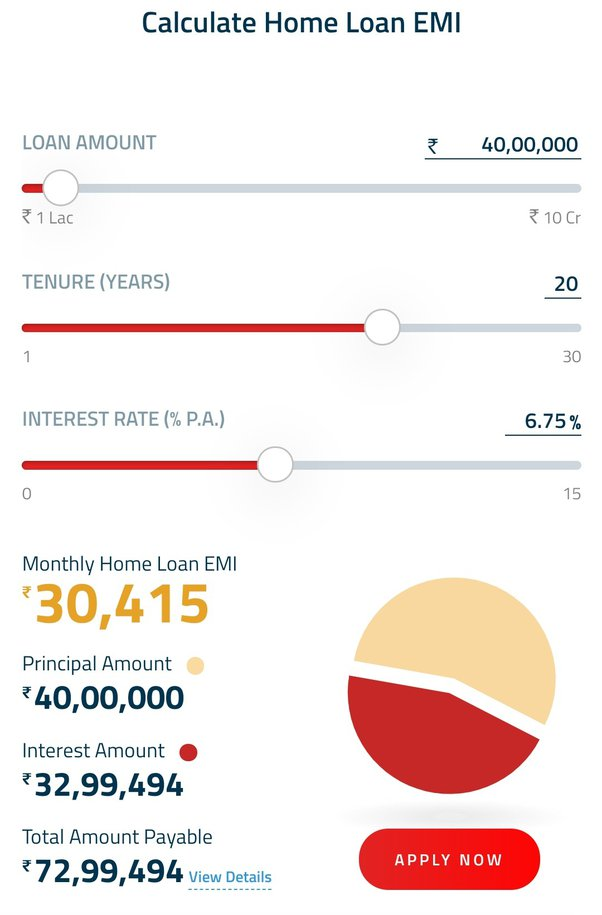


post x-
Reimbursement bills Declaration(s) for tax saving

for. period 01-APR-2022 to 30-SEP-2022, FY 2022-23
submit your declarations are as follows:
Petrol and Driver components: Employees should own a personal vehicle (4 wheeler) and must use the vehicle for commuting to office. 
mobile, BroadBand - you just need to show bill it must have gst number.

Component
Amount
Eligibility
Petrol
Rs.1800
Band 2 and Above
Driver
Rs.900
Band 2 and Above
Mobile
Rs.1000
All Bands
BroadBand/ Internet
Rs.1500
All Bands
Meal Voucher/ Sodexo
Rs.1500/ Rs.2200
All Bands
LTA
One Month Basic
All Bands

on fix component, you need to pay full tax
On reimburse component, you can save taxes
tax-free component?
hra?
Rent receipt with revenue stamp- Landlord Name / Pan / Signature is mandatory if total rent Exceeds 1 lakh, irrespective of any number of landlords


Pradhan Mantri Jeevan Jyoti Bima Yojana(PMJJBY) - life insurance scheme that provides a life cover of Rs.2 lakh at Rs.330/yea.
 The scheme is offering life insurance cover of Rs. 2.00 lakh for death due to any reason

post x-
tax brackets																						
post x-						
"Pradhan Mantri Jan-DhanYojana (PMJDY)" 
It is under the National Mission for Financial Inclusion was launched
initially for a period of 4 years (in two phases) on 28th August
2014. It envisages universal access to banking facilities with
at least one basic banking account for every household,
financial literacy, access to credit, insurance and pension.
The Government has decided to extend the comprehensive
PMJDY program beyond 28.8.2018 with the change in focus
on opening accounts from “every household” to “every
adult”, with following modification:
(i) Existing Over Draft (OD) limit of Rs. 5,000 revised to
Rs. 10,000.
(ii) No conditions attached for active PMJDY accounts
availing OD uptoRs. 2,000.
(iii) Age limit for availing OD facility revised from 18-60
years to 18-65 years.
(iv) The accidental insurance cover for new RuPay card
holders raised from existing Rs.1lakh to Rs. 2 lakhs to
new PMJDY accounts opened after 28.8.2018.
For more information visit : https://pmjdy.gov.in/		


post x- 
how to calculate your taxable income india - 
How much tax you have to pay on your earnings.	
bank interest is fully taxable.	

post x-
tax saving plan
if you have this income 10 lakh + 20k  
then you can save taxes by following below plan-
50k  - standard
1.5lak -  80c
50k- Sec 80CCD - NPS
2 lakh - home loan or hra
25k - health insurance premium
50k - senior citizen health insurance 
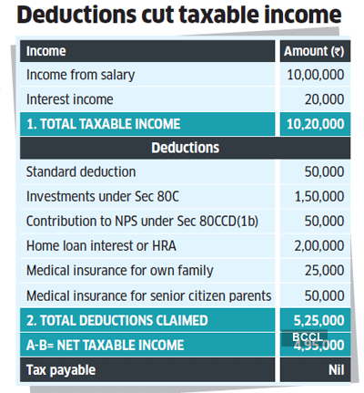

post x-
What should be the salary breakup for an 18 LPA CTC to pay zero tax?
80C: 1.5 Lakh Exemption. On top of it, government gives exemption of 0.5L(standard) every year and there is no tax for the first 2.5L of income. Net Taxable salary: Rs 13,50,000  (2.5+ .5 + 1.5)
NPS (80CCD(2)): Can save another 0.5L. Net Taxable Salary: Rs 13,00,000
Rent: Typically your HRA component is 50% of your Basic for a metropolitan where your Basic is 50% of your fixed salary. So, HRA is around 4.5L (37,500 paid in rent). Claimable exemption= rent paid-10% of basic = Rs 4.5–0.9= 3.6L. Net Taxable Salary= Rs 9,40,000
Home Loan: Suppose you have a home loan with over 2L interest paid. You can take that off as well. Net Taxable Income: 7.40,000
Health Insurance Premium (80D): Rs 25,000. Net Taxable Income: Rs 7,15,000
Savings Bank Interest (80TTA/TTB): Rs 10,000. Net Taxable Income: 7,05,000 (It's actually 9.55 L but the first slab as mentioned in pt. 1, is for 0% tax upto 2.5 L)
Take company leased car also, if the company allows for it.
Some companies have corporate car leasing option to save on taxes, just look it up. I had to get a car lease to save on taxes.
Child tuition fee or school fee is also count in taxes.?

post x-
mutual funds (ELSS)
To save tax you can show investments in a wide range of mutual funds (ELSS) and
Insurance solutions to save some amount.
ELSS comes under 80C, 80CCC and health insurance (for self, spouse, children,& parents) comes under the 80C section.
You can do maximum investment in ELSS up to 150,000 and save tax up to 46,800.
A good option is to invest your money.
lock-in period- minimum- 3 years
Interest rate- 15% to 18%
here you can invest 4000 amount per month.make a monthly sip of 5000 at least in 2 or 3 Equity-linked savings schemes.
The Average SIP in India returns 8.25% with a maximum relatively decent risk SIP returning 11.5%-12%
if you need 1 Crore in 20 years at 11.5%-12%, you need to invest Rs. 10,250/- to Rs. 11,603/- per month
below is just a option you can also look other mutual funds also.
diversifying our SIP into the following three ETFs will greatly reduce your risk and also gives excellent returns.						
equity invest in ETFs (exchange-traded fund)- nifty bees, nifty junior bees, gold bees, liquid bees
Invest 27.5% in Nifty Bees
Invest 27.5% in Junior Bees
Invest 45% in Gold Bees
So if you want to invest Rs.10,000 every month in SIP, then invest
Rs.2750 in Nifty Bees
Rs.2750 in Junior Bees
Rs.4500 in Gold Bees

mutual fund
tax saving mutual fund- lock-in period 3 years
suggestion
https://mf.nipponindiaim.com/	New Fund Launched - Nippon Flexicap fund*			
Investment of Rs 1 lac in Nippon Growth Fund in 1995 has become Rs. 1.86 Cr	
Also known tax saving mutual fund, ELSS is an equity-based mutual fund offered by registered Asset Management Companies or mutual fund houses. Linked to the equity market, it has the potential to earn smart returns and is recommended for people with a slightly higher appetite for risk. Investments up to ₹1,50,000 for a minimum duration of 3 years are eligible for deduction. Investors can use their existing Demat account to make investments in ELSS funds.

post x-
Ulips (Unit Linked Insurance Plan)
A combination of insurance and investment, ULIPs are offered by insurance companies. A portion of the money paid is allocated to provide life insurance and the balance is invested in equity or debt instruments. Investment up to ₹1,50,000 qualifies for deduction under Section 80C and gains upon maturity are exempt from tax, provided the annual premium paid is less than or equal to ₹2.5 lakhs.
started to invest in the ULIP plan of 50 K yearly.
lock-in period- 5 years

post x-
Sukanya Samriddhi scheme (Sukanya Yojna)(SSY)
This is a tax-saving deposit scheme launched by the Government for the all-round development of the girl child. Sukanya Samriddhi Account can be opened at the Post Office or any authorised bank by the parent or guardian of a girl child before she turns 10 years old. An annual deposit of up to ₹1,50,000 is tax deductible. The Interest on the deposit is compounded annually and is fully exempt from tax. All withdrawals and receipts upon maturity are also exempt from tax.

It gives a higher interest rate than PPF. Accounts can be opened in bank or post offices with a minimum investment of 1000. Only to those who have a daughter below 10 years. A parent can open an account for a maximum of two daughters. you can invest up to 1.5 lakh in a year.

The account is opened in name of the child and maturity proceeds have to be used for

her education and marriage.

Interest rate- 7.60%

post x-
NPS(National Pension Scheme)
It is a retirement-focused, long-term investment option open to all Indian citizens between the age of 18 and 70 years. The basic idea behind this scheme is simple but very powerful. Invest while you are earning and get regular income in the form of an annuity when you retire. Restriction on withdrawal before retirement provides a long time to allow the money to grow. There are many prudent restrictions about the avenues where money contributed by NPS subscribers can be invested by pension fund managers. This helps in generating a decent rate of return on the corpus at comparatively less risk and relatively lower cost.


It can be extended until retirement. You can make an investment here. But it has one concern like long locks in periods in which people are not interested.

Whether earlier a member of the Employee's Pension Scheme. 1995

Section 80 ccd

post 152-
How you can successfully pick stocks? - fundamental analysis

I look for consistent compounders.
I look at the past 10 year performance of a stock. (if available)
I see if the stock has compounded by over 15% or not in 10 years.
Then I see the management of the company in quite detail.
Then I try to see where the sector will stand 10 years from today.


post 153-

What is Tax planning?

Tax planning is the process of analyzing and managing your finances from an income tax perspective. More specifically, it is done to reduce the tax liability through a combination of investments and by claiming deductions and exemptions available under various provisions of the Income Tax Act.


In other words, tax planning is the optimal utilization of exemptions, benefits, and rebates with suitable investments.

The Income Tax Act offers deductions on certain investments and payments. These deductions are applied before computing your income tax liability. Some of the popular tax-saving instruments are:

 

Equity Linked Savings Scheme (ELSS)

 


 

 

Unit Linked Insurance Plan (ULIP)

 


 

Sukanya Samriddhi Yojana (SSY)

 


 

Public Provident Fund (PPF)

 


 

National Pension System (NPS)

 


post 201-
PPF
It is one of the most popular tax-saving investment schemes offered by banks and post offices. It is a long-term investment with a lock-in period of 15 years with provision for partial withdrawal every year after 7 years.  Individuals can contribute a minimum of ₹500 and a maximum of ₹1,50,000 in multiples of ₹50 in  an account in a financial year. The best feature of PPF is the triple tax exemption it offers - on the amount of contribution, the interest earned and the proceeds upon maturity.

post 154-
Financial instrument Government Bonds  
It is a high-security debt instrument. 
central and state govt. issues this bond.
You can earn interest on the face value of these bonds. This govt. bond comes under the category G-Sec (government securities). It is a long term investment tool issued for periods ranging from 5-40 years. State Development Loans (SDLs) issue those bonds.
It is one of the most secure forms of investment.
The interest rate that you get is also called a coupon. At the fixed coupon rate you got these bonds.


who can invest in this bond-

companies, commercial banks, individual investors, cooperative banks etc.


In the market, there are different types of bonds that governments cater to. Here I will also talk about the types.


Types of bonds-


GOI Bonds

The Government of India raises debt to fund the nations economic progress. 

Availability: Min 3 Years & Max 10 years 


Tax-Free Bonds

These are issued by fully owned government enterprises to raise funds for infrastructure and housing.


Sovereign Gold Bonds 

Sovereign Gold Bonds are issued and backed by the government of India. They pay a 2.5 % interest and pay back the price of gold at maturity.No slippage or transaction cost. Basically central govt. issue  SGBs. the interest earned on these bonds can be exempted from tax.

Its lock-in period is 5 years. You can withdraw the money after 5 years.


INterest rate credited into the bank account that you linked. It is comes under tax saving scheme

Fixed-rate bonds

As the name suggests, you get some fixed rate of interest.


Floating Rate Bonds (FRBs)

RBI Floating Rate Bonds changes on a half-yearly basis, it is important to know the current rate.

its interest rate varies.

 How to buy RBI Floating Rate Bonds


https://www.basunivesh.com/rbi-floating-rate-bonds-interest-july-to-december-2021/


Inflation-Indexed Bonds

This is mainly an issue for retail investors.


7.75% GOI Savings Bond

income earned from this bond is taxable. You can start from a minimum of 1000 rupees.


How to purchase these bonds?

how to sell these bonds?


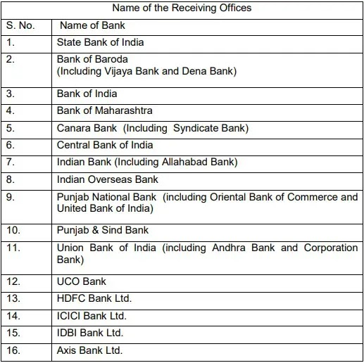


post x-
Fixed deposits (Time Deposit)
Commonly known as FD this is where you can deposit a
sum for a fixed period. The depositor is given a fixed
deposit receipt, which depositor has to produce at the
time of maturity. Withdrawals are not allowed, however,
in case of need, the depositor can ask for closing the
fixed deposit account by paying a penalty.

post x-
Deposit insurance
The Deposit Insurance and Credit Guarantee Corporation
(DICGC) insures all deposits such as savings, fixed,
current, recurring, etc. Each depositor in a bank is insured
upto a maximum of Rs. 5,00,000 for both principal and
interest amount held by the depositor.

post 155-
 

My age is 25 and I want to retire at 50. What is the investment plan for my retirement?

You are 25 now. You wish to retire at 50. You wish to build up a corpus. Let us frame a Strategy, involving, Debt, FDs, MFs, Equity.

Let me suggest 3 groups.


Group 1 Savings group :

SB, FD, RD, Variable RDs, KVP, RBI bonds, NSC, PO MIS.

ETFs(exchange-traded fund) like Bharath Bond, Bharath 22, CPSE. (kind of mutual funds)


Let us do some maths:


Let us expect 5% Annual yield.

₹1 , invested today, get a value of :

1.05^ 25 = 3.38635494, at the end of 25 years.


Let us allocate ₹10 today.

The value at the end of 25 years, is ₹33.86.


Group 2.Investment Group. Medium risk.

Equity Diversified, Small cap, Midcap, Blue chip funds, ELSS,NPS Tier 2 with 60/40,MIP 25. You may add similar funds.

Let us expect 10 % over 25 years.

Let us allocate ₹5 today.

The valueof ₹1 , at the end of 25 years,

1.10^25 = 10.83470594.

For ₹5, the value at the end of 25 years, is ₹54.17.


Group: 3,High risk, Equities and Equity Systematic Equity plan.

It reasonable to.expect 15% over 25 years.

Value of ₹1, over 25 years, 1.15^ 25= 32.91895262.

Let us allocate ₹5 today.

The value at the end of 25 years, ₹164.59.


Now let us find CAGR of the combination of the 3 groups.


Total investment today is ₹20.

Value at the end of 25 years, is, 54.17 + 32.92 + 164.59 = ₹251.68.

CAGR =((EV ÷ SV) ^(1/T) × 100 )- 100.

EV is end value and SV is start value.T is period

Hence CAGR is ,

((251.68÷20) ^(1÷25)× 100) -100=10.66


Now we have framed a strategy.

If Rs.20 is invested as, ₹10 towards Group 1 , ₹5 in Group 2, ₹5 in Group 3, the expected CAGR is 10.66.

Over 25 years, CAGR may oscillate between 7% to 12%.

Hence we may start investing in the above ratio, every time, for 25 years, we have every reason to expect minimum 7 to 8%.

And during 25 years of investing, your intuition and knowledge will improve, and you will learn how to improve your CAGR.


Compound annual growth rate - CAGR

rate of return (RoR) that would be required for an investment to grow from its beginning balance 


https://cleartax.in/s/cagr-calculator

 
post 156-
bullish trend signal - stock strategy

least bearish candles next day you can see a strong uptrend
configuration- 4-hour time frame - candlestick chart.
you can check this on tradingview
The less body we have in green candle the more chances of uptrend


post 157-
Three Line Strike - Stock strategy
It is a continuation pattern. it gives us an entry point.
Condition-
After 3 bullish( white or green) candles if red candle forms you can buy the position.
After 3 bearish(red or black) candles if green can candle forms then short sell it
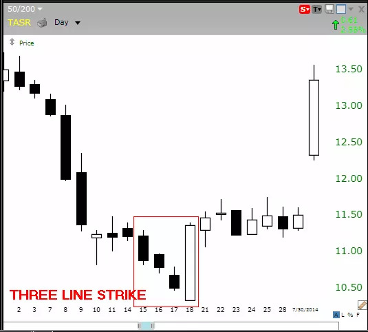

post 158-
evening star - candlestick pattern
usually occurs on top of upwards.
Smaller bullish candle in nature
Bigger bearish candles in nature - covered the body.
Gives a sell signal if volume increases to the downward trend and the price break the resistance line.
It is a three-candle pattern that signals a reversal in the market - bearish reversal candlestick pattern

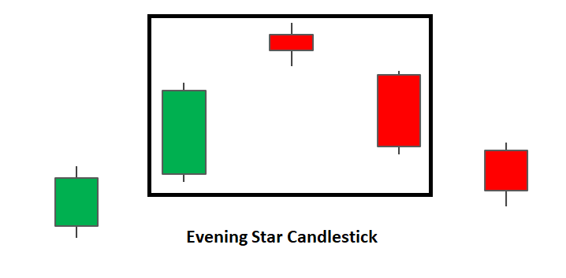
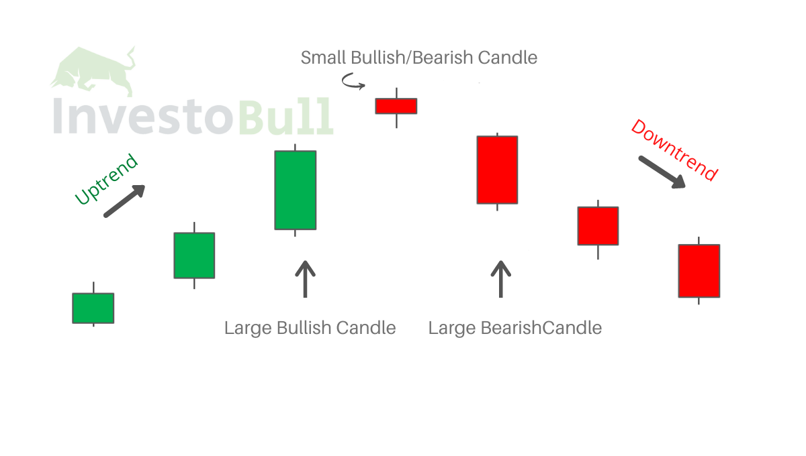

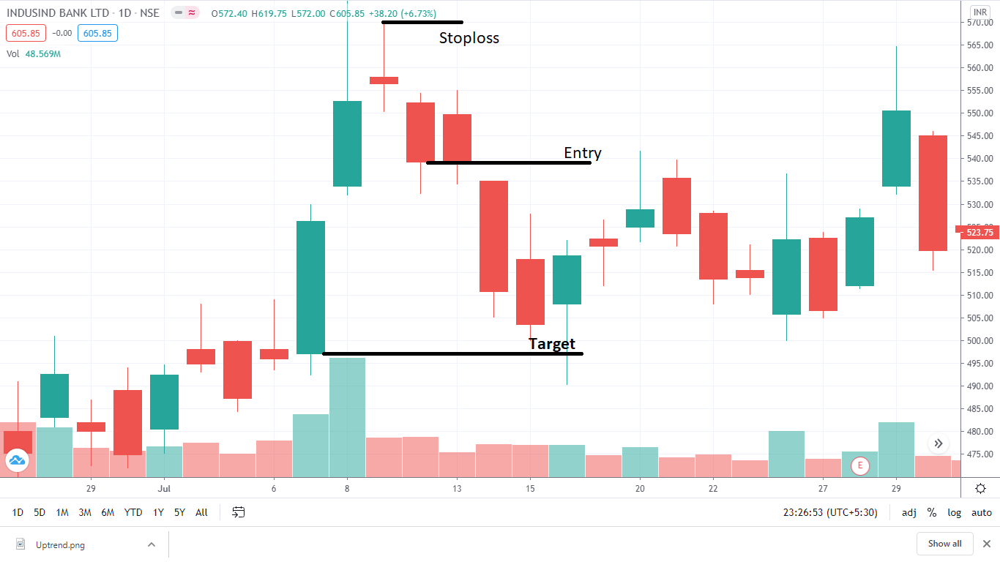

post 159-
The Morning Star - candlestick pattern
Morning Star pattern is a three-candle, bullish reversal candlestick pattern
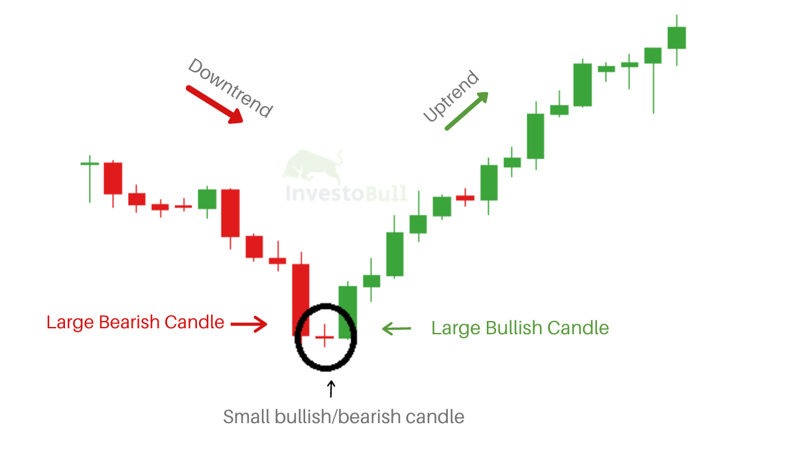
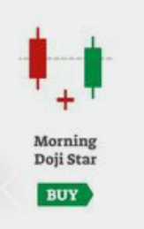
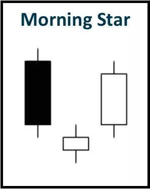
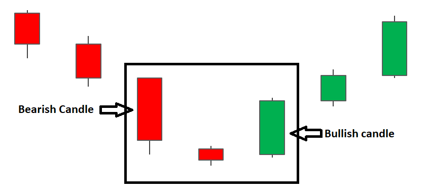
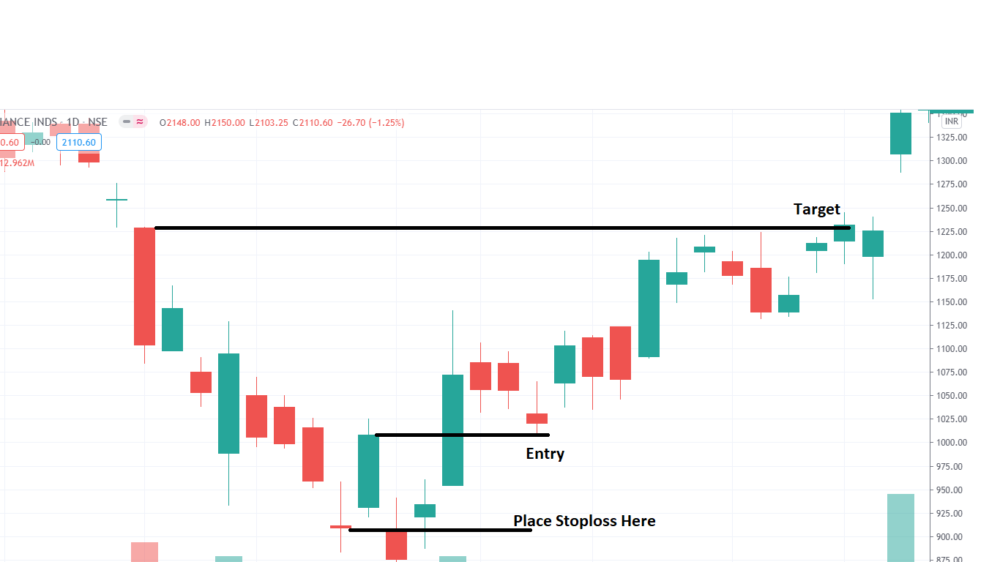

post 160-
Abandoned baby - Stock strategy
three bar reversal pattern
bullish or bearish abandoned baby
similar to the morning and evening star candlestick patterns.
large bearish/bullish candle that is followed by a Doji candle third candlestick opens higher than the Doji and is usually a bullish/bearish candle.
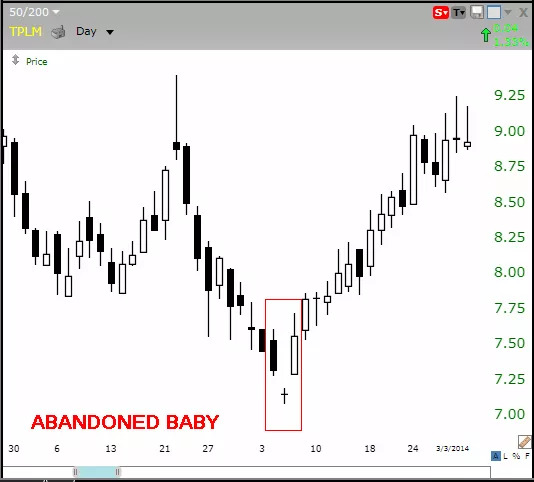

post 161-
hammer (bullish) - Stock strategy
When stocks move lower than the opening price but rallies in the day to the close.
The Inverted Hammer or shooting star Candlestick Pattern-
when a stock moves higher than the opening price but rallies in the day to the close.
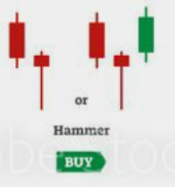
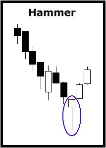
yellow candle indicate shooting star
bearish reversal pattern that consists of only one candle
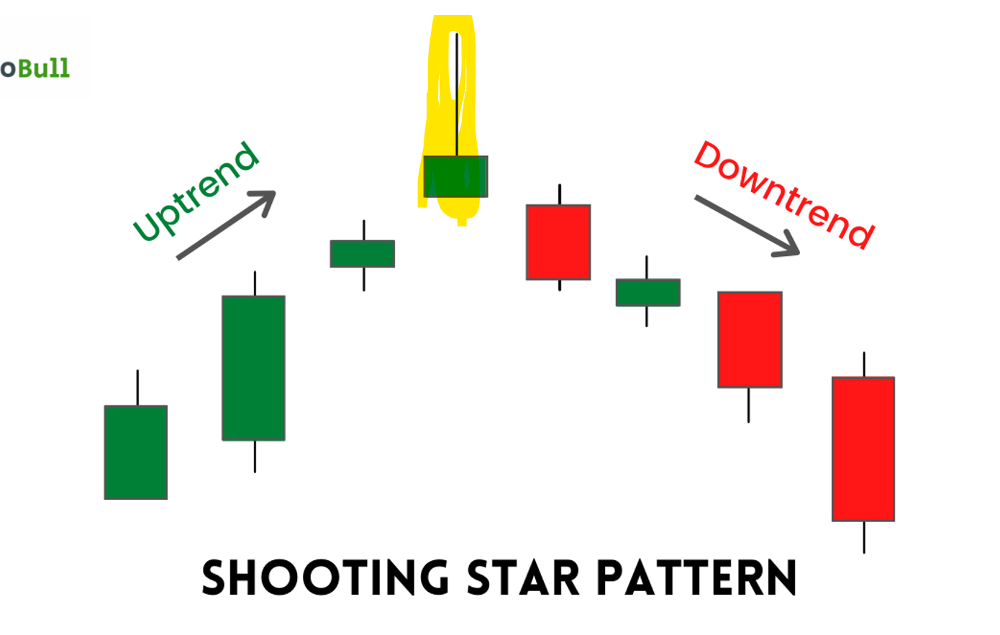
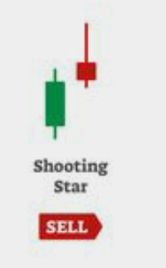
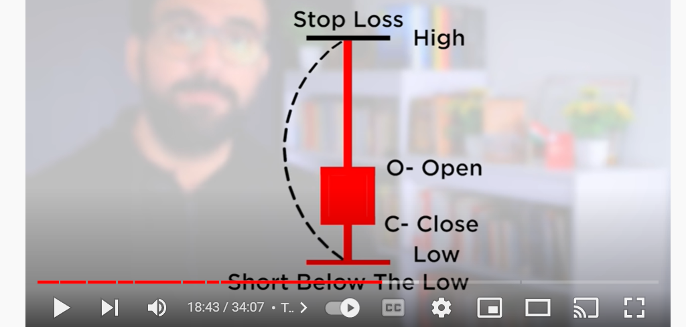

post x-
Candlestick pattern - Shooting star
A shooting star candlestick pattern is a reversal formation that occurs when an asset’s price is pushed up quite significantly but rejected from higher levels. This creates a long upper wick, a small lower wick, and a small body.
https://in.tradingview.com/chart/NIFTY/3MUtRFvC-Shooting-Star-Complete-Guide/

post x-
Candlestick pattern - Bearish engulfing
A bearish engulfing pattern is a reversal candlestick pattern that signals a potential reversal to lower prices. It can occur anywhere, but it is more significant if it occurs after an uptrend.
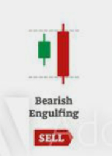

https://in.tradingview.com/chart/NIFTY1!/k4LMbWGX-Strong-Bearish-Reversal-Candlestick-Pattern/


post 162-
big red - Stock strategy
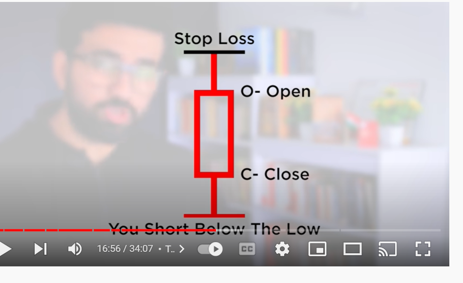

post 163-
white marubozu - Stock strategy
A Marubozu is a hard to miss candlestick with a full long body and barely any shadows.
white marubozu or bullish also known as bald head. It is a one-day bullish indicator.
condition
if the open price of a stock = day low, and close price = day high,
You can check this at a 5-minute interval.
set candlestick patterns before analysing the stock.
You can see that the open high low close satisfies the condition mentioned above.
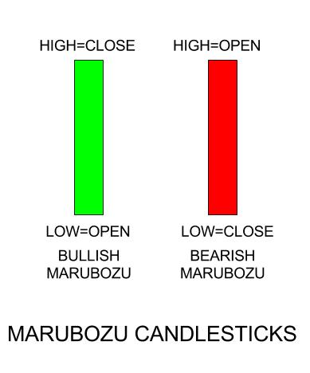

post 165-
pin bar pattern - Stock strategy
shows rejection
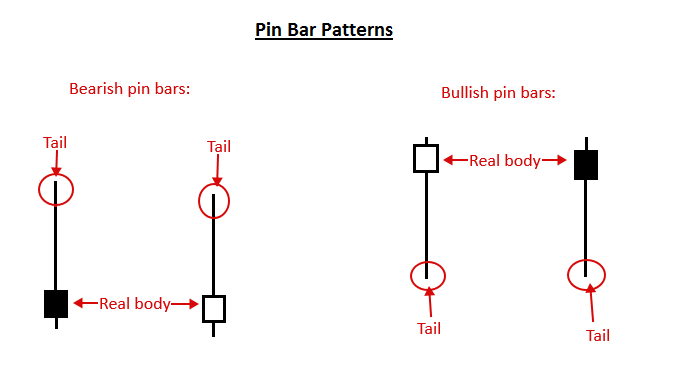

post 166-
The Piercing Line - Stock strategy
the piercing line pattern is seen as a bullish reversal candlestick pattern - comprises two candlesticks with the second bullish candlestick opening lower than the previous bearish candle.
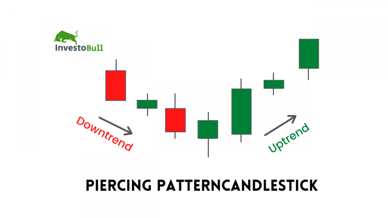
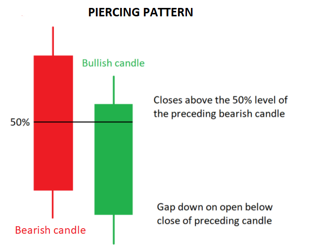
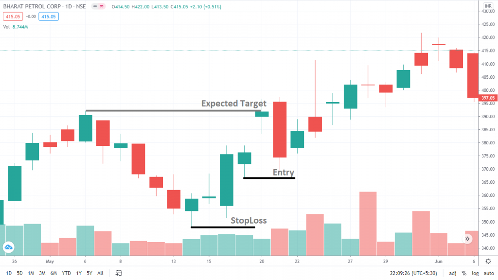
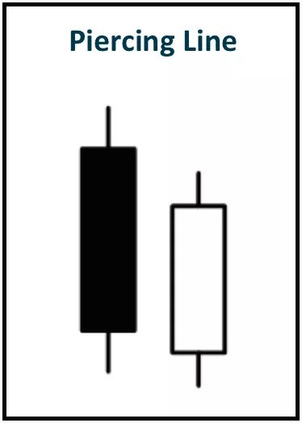

post 167-
Triple Top and Triple Bottom - Stock strategy
have three swing highs and swing lows - 
reversal patterns


post 168-
Rising sun - Stock strategy
bullish indication


post 169-
Buy sell according to the next cut candle - Stock strategy
simple strategy


post 170-
3 Inside up - Three Candle Trend Reversal Pattern - Stock strategy
bullish reversal pattern composed of a large down candle


post 171-
Cup and Handle - Stock strategy
A continuation pattern is formed when there is a prior uptrend, followed by a consolidation.
a reversal pattern occurs after a prolonged downtrend and reverses the prior trend.
The Cup is usually U-shape and the handle is basically the retracement from the prior top to about 1/3rd of the vertical height of the cup and looks quite similar to a bowl.
seen both as bullish continuation or reversal patterns.


post 172-
Flag pattern - Stock strategy
continuation patterns.


post 173-
head and shoulder - Stock strategy
watch three swing highs, with the central swing high being the highest. - reversal pattern


post 174-
Rounding top - Stock strategy


post 175-
symmetrical triangle - Stock strategy
continuation patterns.


post x-
descending triangle


post 176-
Double Top and Double Bottom - Stock strategy
two swing highs about the same time. - reversal patterns


post 177-
Rounding Bottom chart pattern - Stock strategy
reversal patterns


post 178-
The Three White Soldiers - Stock strategy
This gives bullish candlestick patterns that give the strongest reversal signal.


post 179-
Sea pony harmonic pattern - Stock strategy


post 180-
Harmonic pattern black swan - Stock strategy


post 181-
bullish engulfing - Stock strategy
bullish reversal pattern. It occurs at the bottom of a downtrend. This reversal candlestick pattern has two candlesticks.
first candle - small and bearish in nature
second candles- long and bullish in nature
The buyers expect a trend change in accordance with candle nature.


post 182-
Two Black Gapping - Stock strategy
This pattern is formed by two bearish candlesticks. It indicates the continuation of the bearish trend in the market.


post 183-
Three Black Crow - Stock strategy
It comes under a bearish reversal pattern. You can identify it If three bearish candles formed after the uptrend. After this, you can take a short position. It represents the downtrend in the market.


post 184-
breakeven point - option strategy
In investing, the breakeven point is said to be achieved when the market price of an asset is the same as its original cost.
The break-even point of an index call option trade is the strike price plus the premium paid.
well generally used in  option trading

Imagine a hypothetical index called Index X, which currently has a level of 500. Assume an investor decides to purchase a call option on Index X with a strike price of 505. If this 505 call option is priced at $11, the entire contract costs $1,100—or $11 x a 100 multiplier.

It is important to note the underlying asset in this contract is not any individual stock or set of stocks, but rather the cash level of the index adjusted by the multiplier. In this example, it is $50,000, or 500 x $100. Instead of investing $50,000 in the stocks of the index, an investor can buy the option at $1,100 and utilize the remaining $48,900 elsewhere.

The risk associated with this trade is limited to $1,100. The break-even point of an index call option trade is the strike price plus the premium paid. In this example, that is 516, or 505 plus 11. At any level above 516, this particular trade becomes profitable.

If the index level is 530 at expiration, the owner of this call option would exercise it and receive $2,500 in cash from the other side of the trade, or (530 - 505) x $100. Less the initial premium paid, this trade results in a profit of $1,400.

strike - price - lot - total - breakeven       expiration prediction   
505       11	 100    1100    505+11 = 516    530

post 185-
Bull Call Spread - option strategy	
BUY CALL OPTION, SELL CALL OPTION

A bull call spread is constructed by buying an in-the-money (ITM) call option, and selling
another out-of-the-money (OTM) call option. Often the call with the lower strike price will
be in-the-money while the Call with the higher strike price is out-of-the-money. Both calls
must have the same underlying security and expiration month.

The net effect of the strategy is to bring down the cost and breakeven on a Buy Call (Long
Call) Strategy. This strategy is exercised when investor is moderately bullish to bullish,
because the investor will make a profit only when the stock price / index rises. If the stock
price falls to the lower (bought) strike, the investor makes the maximum loss (cost of the
trade) and if the stock price rises to the higher (sold) strike, the investor makes the
maximum profit. 

one long call with a lower strike price. one short call with a higher strike price.	

post 186-
Bear call spread - option strategy
SELL ITM CALL, BUY OTM CALL
This involves purchasing an OTM call and simultaneously selling an ITM call. The OTM call will have a higher strike price compared to the ITM call. The call options purchased and sold must have the same underlying stock or index and expiry date. An investor who uses this strategy will get net credit as the ITM call will be costlier than the OTM call due to the presence of intrinsic value and time value. If the stock/index falls as anticipated, both calls will expire worthless and the investor can retain the net credit. The net credit is the maximum profit that this strategy can generate. If the stock/index rises, it will result in a loss. However, the loss will be restricted to the difference between the strike prices of the call options, minus the net credit. 
when the markets are expected to be bearish.
Example-
Suppose the XYZ Index is trading at 4,400 and the markets are expected to be moderately bearish in the near term. The call options on the index with strike prices of Rs 4,340 and Rs 4,650 are available for Rs 65 and Rs 28, respectively. The put options with strike prices of Rs 4,350 and Rs 4,600 are available at Rs 25 and Rs 70, respectively. The market lot is 50 contracts
The cost involved in the bear call spread is Rs 1,850, which is the difference between the amount received from selling the ITM call option (50x65=Rs 3,250) and the amount paid to purchase the OTM call option (50x28=Rs 1,400). The amount, Rs 1,850, constitutes net income for Tarun and also his maximum gain if the markets fall. However, if the markets rise, the loss will be limited to Rs 13,650, which is the difference between the strike prices of two call options (purchased and sold) and the net premium [(4,650-4,340-(65-28))x50]. The break-even point of the bear call is at the XYZ Index level of 4,377, which is the sum of the lower strike price call (Rs 4,340) and the net premium (Rs 37) [see Bear Call Spread Pay-off]

The cost in the bear put spread is Rs 2,250, which is the difference between the cost of the put option purchased (50x70=Rs 3,500) and the amount received from selling the put option (50x25=Rs 1,250). This amount is also the maximum loss in case the market moves against expectations. The profit potential is limited to Rs 10,250, which is the difference between the strike prices of put options and the net premium paid [(4,600-4,350-(70-25))x50]. The break-even point is reached at the index level of 4,555, which is the difference between the strike price of the put purchased (Rs 4,600) and the net premium paid (Rs 45) [see Bear Put Spread Pay-off.]


post 187-
Bear put spread - option strategy
BUY PUT, SELL PUT
An options strategy for bearish investors who wish to maximise profits while minimising losses.
This involves buying an ITM put option and simultaneously selling an OTM put option with the same underlying stock/index and expiry date. The ITM put option will have a higher strike price compared to the OTM put option. The transaction will result in a net debit payment, which is also termed 'cost of trade'. The strategy results in maximum profit if the stock/index crashes below the strike price of the OTM put option. On the other hand, if the market rises, the loss will be restricted to the net debit payment
when the markets are expected to be bearish

post x-
Results
https://www.bseindia.com/corporates/Forth_Results.html
https://www.motilaloswal.com/markets-overview

post 188-
IPO v. SPAC v. Direct listing		
The key benefit with a direct listing is that the stock is priced at the true market price as compared to an IPO.
SPAC. Is a publicly traded buyout company. 
A special purpose acquisition company (SPAC) is a company that has no commercial operations and is formed strictly to raise capital through an initial public offering (IPO) or the purpose of acquiring or merging with an existing company.
A SPAC is a special purpose acquisition company, also frequently called a blank check company.

post 193-			
Portfolio Management Service (PMS)
It is handled by big firms they use strategies like hedging which will secure your fund any situation. In hedging basically, company hold/buy both Call and put options.
FIIs do not lose money because they use hedging technique.
It needs a big amount of cash to invest in it. Generally, it is managed by a professional money/Fund manager. They are NISM(National Institute of Securities Markets) certified. Under this institute, lots of other certification included and these are for various positions to fulfil in the stock market companies.
These all things conducted under the SEBI. If you want to make a career in the financial market then this certification is needed. It is valid for 3 years. If you want to provide stock positions for buy/sell to customers then you must have this research-level certification. It is cost around Rs.2000.

financial planner- become certified financial planner rich people need FINANCIAL PLANNING AND MANAGEMENT SERVICES.								
					
There are two types of PMS account available-
1- Discretionary (kind of trading)-
In this, not any permission required while placing an order.
2- Non- discretionary - 
In this permission is required by the owner to buy and sell stocks.
Every 6 month they give the report. They will charge 2-2.5% management fees or Profit sharing.

If you have a good amount of money and don't have much idea where to invest. You can hire a financial advisor. They will help you to make good returns. They will totally guide you in achieving your financial goals without risking much amount. It is preferable if you do not have much time to look into the market.

For pms service - suggestion
https://2point2capital.com/blog/

post 194-																
 fraudulent tips
  stock scams that are happening a lot at this time. You must be aware of these frauds. Fake calls and messages can destroy your whole wealth so be aware of all these things. SEBI is mainly looking into these scams; they take action if someone is distributing wrong calls or tips. If you get any tips then check its authenticity. You can report these Fraud Stock Advisory Services in the below things.

TRAI DND App
It is a mobile app. Register your number with TRAI DND and report the numbers. If enough people report these messages, it'll make it hard for these guys to keep getting new numbers.


Report directly to TRAI on 1909 number

If you receive a tip from the number 91432423477 on 23 March 2019, you will send the following text to 1909 –

unsolicited stock tip, 91432423477,23/03/2019

Mostly you will get calls through text messages. So be careful don't trade on these calls. These are just for manipulating the stocks. 


Consumer court

Reach out to Consumer court


Complain to SEBI


https://www.scores.gov.in/scores/Welcome.html


Send a legal notice


Report On NSEIndia site 

Here you can write the whole information of the fraudster anonymously.

https://www1.nseindia.com/int_invest/dynacontent/any_portal.htm

Before dealing with any Investment Advisor, please check whether it is registered with SEBI. Do not deal with unregistered Investment Advisors.
https://www.sebi.gov.in/sebiweb/other/OtherAction.do?doRecognisedFpi=yes&intmId=13

post x-
SEBI(securities and exchange board of India)
It has the responsibility of developing as well as regulating the markets. Its objective is to protect investor interest, developing a share market. It is also the regulator for fixing Upper and Lower bands of the stock. They are providing SCORES(Sebi Complaints Redress System) to register your complaint.
SEC is like sebi in america.

post 195-																				
Different types of orders 
Bracket order:
MIS
NRML
IOC
MIS
CNC	
After-market Orders (AMO)								
Stop-loss market orders(SLM)	


post 197-	
World bank		
With 189 member countries, the World Bank Group is a unique global partnership fighting poverty worldwide through sustainable solutions. The World Bank is an international financial institution that provides loans and grants to the governments of low- and middle-income countries 

post 198-	
Asian Development Bank			
ADB's vision is to achieve a prosperous, inclusive, resilient, and sustainable Asia and Pacific, while sustaining its efforts to eradicate extreme poverty.
	
post x-	
Development Finance Institutions (DFI)
A development finance institution (DFI), also known as a
development bank is a financial institution that provides
risk capital for economic development projects on non-
commercial basis. Example: Small Industries
Development Bank of India (SIDBI), National Bank for
Agricultural and Rural Development (NABARD), National
Housing Bank (NHB), etc.

post x-	
SIDBI (SMILE)
This scheme is facilitated by NSIC. It is launched by finance minister Jaitley. This scheme provides a soft loan. They emphasise small enterprises and new enterprises in manufacturing as well as the service sector.

To apply for this scheme contact the nearest SIDBI office or you can contact him online on this website www.sidbi.in

You can discuss here your business & requirements.

You can repay the amount in up to 10 years.

you can get the loan amount starts from 10 lakh to 25 lakh.

post 199-	
get loan under government schemes		
schemes that will help you to start your venture. There are various schemes that the government launched to increase the employment rate. They provide very low-interest rate loans and subsidy to the peoples.


According to NASSCOM India is the third-largest startup base in the tech world after the USA, UK. There 2 lakh business sector and 5 lakh service and industry sector. DIC is responsible for most schemes implementation.


So these are some top schemes from which you can easily get a loan.

3 things that matter mainly if you want to take credit is  Rate of interest(P.A), Loan Amount, Repayment Tenure.


SIDBI Make in India Loan For Enterprises (SMILE)

Pradhan Mantri Rozgar Yojana (PMRY)

It is initiated by the central government to provide self-employment opportunities to educated unemployed youth.

It aims to set up 10 lakh of microenterprises.

The eligibility criteria of this scheme are-

your age must be between 18-35 years old.

you must be 8th passed it also depends upon the scheme.

your family income must be low something less than 1 lakh.

your residence/status -must stay there for the last 3 years.

your citizenship is Indian

you should not be a defaulter to any financial institution/bank.

Type of business you are going to work in which sector like business, service, industry sectors

Training is provided to borrowers for 15-20 days to ensure setting the business.

Status of Business either it is new or existing.

project cost

subsidy and margin money.

ROI and repayment schedule

implementing agency.

sub-targets stipulation

amount


Documents required for this scheme is

Driving license

EDP training certificate

copy of proposed project profile

Experience, qualification, technical certificates

Date of birth proof

Residence proof

Income certificate issued by MRO

caste certificated issued by MRO

MRO(Mandal revenue officer)


You can apply

by visiting the official website of PMRY

Download application form

submit details to the respective bank which comes under the PMRY scheme


Prime Minister's Employment Generation Programme (PMEGP)

Khadi and Village Industries Commission (KVIC) implemented this scheme. Also, the scheme is implemented through State KVIC Directorates, State Khadi and Village Industries Boards (KVIBs), District Industries Centres (DICs) and banks.

The eligibility of an entrepreneur is that must be above 18 years of age. At least the VIII standard pass.

This scheme is for projects costing above Rs.10 lakh in the manufacturing sector and above Rs. 5 lakh in the business/service sector.

You can Apply through this website

https://www.kviconline.gov.in/pmegpeportal/pmegphome/index.jsp

you can also check sample PMEGP profiles

https://www.kviconline.gov.in/pmegp/pmegpweb/docs/jsp/newprojectReports.jsp

You can contact them if you are facing an issue-

https://www.kviconline.gov.in/pmegpeportal/dynamicdistrict/officeSearchForm.jsp

check out the sample Application form

After filling the form take the printout of the application and submit the same to respective offices along with the Detailed Project Report (cost of the project with a break up of capital expenditure) and other required documents.

After approval, you will get money directly into your bank account.

Important points-

The maximum project cost allowed under this scheme is Rs.25.00 lakhs For the manufacturing unit and Rs.10.00 lakhs for Service Unit.

cost of land does not include in the project cost.

This scheme is for Individual Entrepreneurs, Institutions, Co-operative Societies, Self Help Groups, Trusts.

This fund is available for only new units.

Under this scheme, the beneficiary has to spend 5-10% while govt. provides a subsidy of 15-35%.

EDP training is compulsory.


Pradhan Mantri Mudra Yojana (PMMY)-

MSME Business loan under 59 minutes -

This scheme is launched by prime minister Narendra Modi on the occasion of Diwali in 2018.

This loan is for an individual who wants to expand their business.

approval or disapproval will be provided within 59 minutes.

Actually, disbursing this loan takes 8-12 days.

You can get the loan from Rs. 10 lakh to Rs. 1 crore within 59, minutes.


you can apply for the loan from here

https://www.psbloansin59minutes.com/home


Documents need to get a loan for an existing business is -

Details of GST( GSTIN, GST user name, OTP)

Details of income tax (latest 3-year ITR in the format of XML)

last 6-month bank statement

Details of loan required

Details of proprietorship, partner, directors

E-KYC documents.


Eligibility criteria are-

should have GST

IT compliant

6-month statements


⦁ Credit Guarantee Fund Scheme for Micro and Small Enterprises


⦁ Bank credit facilitation scheme


⦁ Stand up India scheme

If you already working in any startup you can apply here to get some funding or any help.

Startupindia.gov.in/content/sih/en/startup-scheme.html


visit a bank branch and financial institutions for more details related to any scheme.


post x-	
PMMY
This scheme is launched by the prime minister on 8th April 2015 to provide loans to microenterprises. It can provide credit up to Rs. 10 lakh. There are 3 categories in the scheme.
Shishu amount of loan is up to Rs.50000
Kishor Loan range is 50k to 500k.
Tarun - 500k to 1000k

Here the borrowers should have experience from RSETI.
should not be a defaulter
The loan repayment period is up to 5 years.
you can apply to this scheme by visiting PMMY's official website.
Download the loan application form.
submit it to the SBI branch with the required documents.

Government Scheme that offers business loans to
proprietors or entrepreneurs of small & medium
enterprises
 Loans offered: SHISHU, KISHOR and TARUN
depending up on the amount of loan availed
 Key documents required: proof of identity, quotation
of items purchased and category certificates
Visit: https://www.mudra.org.in

post 202-	
Short Sell
Short Selling in Trading		
sell stock first and then buy at lower price to make profits	

post 204-	
NRML order-
Normal	

post 205-	

bulk users
Bulk buyers are those entities that directly source oil tankers from OMCs due to their large requirements of fuel. Many of these entities either use diesel for powering generators for electricity or other industrial purposes. Bulk users include factories, airports, bus fleets, transport fleets, malls, etc
Diesel price for 'bulk users' hiked ₹25/litre,

post 206-	
United Nations Development Programme-	
UNDP works in 170 countries and territories to eradicate poverty while protecting the planet. 
The United Nations Development Programme is on the ground in about 170 countries and territories, working to eradicate poverty while protecting the planet.

post 207-	
Volume Spread Analysis (VSA) - Stock strategy
Volume spread analysis is a new way of looking at the market. It more like the candlestick analysis taking into consideration the volume. However not all the candle stick rules apply here. The basic premise behind the volume spread analysis is that the market is basically moved by the “Smart Money”.
Volume Spread Analysis seeks to establish the cause of price movements, and from the cause, predict the future direction of prices
 Volume Spread Analysis or VSA analyzes candles (or bars) and volume-per-candle to determine price direction by figuring out demand

post x-		
bonus shares		
These are the additional shares that a company gives to its existing shareholders on the basis of shares owned by them. These are issued to the shareholders without any additional cost.
WHY COMPANIES ISSUE BONUS SHARES?
Bonus shares are issued by a company when it is not able to pay a dividend to its shareholders due to shortage of funds in spite of earning good profits for that quarter. In such a situation, the company issues bonus shares to its existing shareholders instead of paying dividend. 									
post x-
long-short strategy	
Long-short equity is an investment strategy that seeks to take a long position in underpriced stocks while selling short overpriced shares. Long-short seeks to augment traditional long-only investing by taking advantage of profit opportunities from securities identified as both under-valued and over-valued.

post x-
trade types- 
intraday trades, 
positional trades 
breakout trades 
investment trades,  
BTST

post x-
Weekly Expiry Strategies  - option strategy	
1- huge opportunity for option sellers, where they write options in huge quantity on expiry days and make enormous profits, after all stats are in their favor. selling the OTM calls

2- option strategy

		
here 9400 is last when put open interest is greater than call open interest. So the expiry will be above 9400. And 9500 is first when to call open interest is greater than put open interest. So the expiry will be below 9500.

The Expiry Day Trading Game
Now, keep 9400CE and 9500PE of same month expiry in your terminal. The real game starts after 1:30 PM. If you get Nifty below 9400 simply buy a 9400CE. You will get it at 1-5 rupees. Nifty will 100% rise above 9400 and you can get 10/20/50 even 100 rupees of your call option.

Similarly in the expiry day nifty option strategy if you get Nifty above 9500, you know Nifty will not expire above 9500. So simply buy a 9500PE. You will again get it within 1-5 rupees. Nifty will 100% fall below 9500 and you will get big gains.

OI chart
https://www.stockmaniacs.net/market-data/open-interest/banknifty-open-interest/
https://www.stockmaniacs.net/market-data/open-interest/nifty-open-interest/


post x-
Max pain theory-	option strategy
We can also use Options Max Pain in predicting the expiry value

Now, what this Max Pain indicates. This indicates the level where if the market expires, the options buyers will have maximum pain. In other words, this indicates the expiration levels. 

Max pain is the price at which option buyers would loss the most money, and option writers (sellers) would profit the most.
The theory suggests that before expiration the underlying stock moves to a point where there is a maximum loss to option buyers.
https://www.stockmaniacs.net/market-data/options-max-pain-calculator/

post x-
Future and Option Formula to calculator
https://www.samco.in/option-fair-value-calculator

post x-
Calendar Spreads or time spread (debit spread)	- option strategy 						
A calendar spread is an options or futures strategy established by simultaneously entering a long and short position on the same underlying asset but with different delivery dates. In a typical calendar spread, one would buy a longer-term contract and go short a nearer-term option with the same strike price.

	

	

post x-
Protective put Married Put	strategy- option strategy
"Married put" is the name given to an options trading strategy where an investor, holding a long position in a stock, purchases an at-the-money put option on the same stock to protect against depreciation in the stock's price.
A married put is an options trading strategy in which investors hold both a put contract for a stock and shares of the stock itself.

This strategy involves taking a long position in an asset and also buying a put option on the same asset. In this strategy, the only risk involved is that the strategy is limited to the amount of premium.
	
post x-
Collar's- option strategy							
A collar is an options strategy that limits both gains and losses. A collar position is created by holding an underlying stock, buying an out of the money put option, and selling an out of the money call option.

A Collar is similar to Covered Call but involves another leg – buying a Put to
insure against the fall in the price of the stock. It is a Covered Call with a limited risk. So a
Collar is buying a stock, insuring against the downside by buying a Put and then financing
(partly) the Put by selling a Call.
The put generally is ATM and the call is OTM having the same expiration month and must be
equal in number of shares. This is a low risk strategy since the Put prevents downside risk.
However, do not expect unlimited rewards since the Call prevents that. It is a strategy to be
adopted when the investor is conservatively bullish. 

post x-
closing price calculation		
The last traded price (LTP) usually differs from the closing price of the day.
The closing price is calculated by dividing the total product by the total number of shares traded during the 30 minutes. 

At 3 PM, the two shares of stock A were traded at Rs. 10 a share. At 3:10 PM, two more shares were traded at Rs. 12. At 3:20 PM one share of stock A was trading at Rs. 11. At 3:30 PM the price went up to Rs. 20 a share and two shares were traded.

Now to calculate the closing price, first multiply the number of shares to the price at the particular time. So, at 3 PM the total product is Rs. 20 (two shares multiplied by Rs. 10), at 3:10 PM the total is Rs. 24, at 3:20 PM it is Rs. 11 and at 3:30 PM it is Rs. 40. Add these values to find out the total product traded in the last 30 minutes: Rs. 95.

So your closing price is Rs 13.57 (Rs. 95/7). You last trading price is, however, Rs 20, which is the price at which the stock was traded last.

Why is closing price important?
If you are a market watcher, the closing price is as essential for you as the opening price, which is the price at which the stock opens in the market.

The closing price of a stock is a reference point for you to understand how a share behaves. You can study the closing price of price over some time, such as a month or even a year. Doing so will help you determine how well the stock has done over time and make an informed investment decision.			


post x-
face value	
Also known as the par value, face value is the value of the company as listed in its books and share certificates.							
							
						
						
		

post x-	
FDI-	
Foreign direct investment. It is a kind of investment that a company makes in a foreign country.							
						

post x-
Penny stocks-								
These are stocks trading below Rs. 320 a share.								
While doing intraday trading, it is advised to avoid trading penny stocks.						
1. Penny stocks are only worth pennies								
2. Penny stock trading is illegal								
3. Penny stocks are not allowed by the exchanges for day trading								
4. Penny stocks are unreliable and at risk of being delisted								
										
post x-
Filters - Stock strategy	
We can use filters to our benefit. the circuit is a very popular filter used in the market. It defines the lower and upper limit of any stock. Beyond this range, stocks will not move.		
A filter rule is a trading strategy in which a technical analyst sets rules for when to buy and sell investments, based on percentage changes from prior prices. The filter rule is generally based on price momentum, or the belief that rising prices tend to continue to rise and falling prices tend to continue to fall.					
https://in.tradingview.com/screener/

post x-
NFO 
New fund offers				

post x-
FDR - 
Fixed Deposit Receipt								
				
								
	
								
						
		
					


								
post 222-
								
Distribution  -  Stock strategy
it is opposite of accumulation		
This area is where price turned down. This is where the distribution is and where we short if price returns down. The D Zone is simply the origin of a big drop in price and downward rally.
	
post 220-

fading-		 Stock strategy						
Fading trading strategy means that a trader buys when the market is selling and sells when the market is buying
Fading breakouts simply means trading in the opposite direction of the breakout.
Fading is a contrarian strategy, where traders take an opposite position into a high-momentum trend. A market maker or dealer who does not stand on their bid or offer for very long may also be said to fade their markets as prices turn against the original bid-ask.
in this we do immediate book

post 219-
Disclosed quantity-	
It is the qty that you do not show in market depth where they show how much any person bought the share. The disclosed quantity has to be a minimum of 10% of the order size. The maximum quantity you can hide is 90%. suppose if a person buys 1000 shares he wants to show 100 in that screen then put value in dis. qty.

post 218-

BPL-	
BPL stands for booked Profit Loss, it is contributed by closed trades. Bought and sold its result reflects in BPL.		

post 217-
MTM-	
when bought but not sold it reflects in MTM. Above description is for intraday and FNO positions.					
post 216-
LTP-	
Last traded price, 
it is the price at which the last trade has occurred. There is a difference between LTP and CP (closing price). LTP is the last transaction happened in a day while CP is average of the index between 3 to 3:30(last 30 minutes).				

post 215-
Bid-	
The price at which a buyer is like to buy.	

post 214-
Ask/offer-	
The price at which a seller is eager to sell.	

post 212-
Spread-	
The difference between the bid and ask.							

post 213-
Net-	
The difference in yesterdays closing pricing and current price or LTP.							
						
post 211-
Excess/Shortfall w.r.t requirement by exchange –								
This column displays the value of 'Total margin available' minus the value of 'Total requirement'	Total requirement -	
shows the total amount blocked by the exchange for your position, segment-wise.	

post 210-
Margin Status (Balance with member/ due to the client) -							
This column shows you the Total free balance that is ready for taking new trades the next trading day (unencumbered balance). The -ve amounts under the 'funds' column for the different 'segments' indicate funds utilized/used (out of the total money added to the trading account) for trades in that particular segment. This is the margin utilized for the various segments.								
If the value under the 'funds' column for any of the 'segments' is +ve it means that the net of all obligations is positive and you've made a profit equal to the amount displayed.								
							


post 208-	
IOC - 
immediate or cancel.	

post 207-	
CNC- Cash and Carry.								
	
post x-
Best Websites to Learn Stock Trading With demo account in India
 various trading websites on which you can learn about trading. on these websites, they provide virtual cash amount on which you can trade(buy and sell). you can use your strategies and analyse the profit and loss. 

It is helpful if you directly do trading in Demat account you may face a huge loss. So it is good for beginner to learn from the dummy portfolio account. After getting things from here then open a trading account. 

These are much similar to actual trading platforms. when you register on these stock stimulators you will get virtual money. Here you can monitor everything. 

Following are the websites to practice virtual trading:
1.Moneybhai –

It is a virtual stock market trading game. It is provided by Financial platform Moneycontrol. The simulator main focus is to give knowledge for the Investors and Students to learn how to buy, short sell the Stocks in the market.

You can also do trading of mutual funds, commodities, bonds and stock exchange games with trading discussion(ask your queries and participate in conversations). you can also compete with fellow Indian traders.

After registering on this application you will get 1 crore virtual cash. 

2.MoneyPot-

It is a web-based stock market simulation for colleges, universities, corporations and investors. It helps to learn about stock trading.

Website link - Moneypot.in

3.Chartmantra economic times-

It is ET's gaming platform where you can play on your Technical Analysis. They also provide learning platform ChartMantra.

4.Trakinvest-

It helps you learn stock investing, develop and improve your investing skills. They provide lots of resources which enhance your investment skills. Here you can also follow other traders and learn from them, and earn great prizes.

You can trade in multiple global exchanges. 10 platforms are available till now.

5- Dalal Street Investment Journal (DSIJ)

It is a popular virtual stock trading platform in India which helps you to understand the different trading distinctions and to test your investment strategies. Here you can also discuss strategies with like-minded people.
https://www.dsij.in/Stock-Market-Challenge

6- dbportfolios - stock simulator

post x-
NCFM Derivatives Markets (Dealers) Module test

post x-
money-saving-tips-india	
https://www.cashoverflow.in/money-saving-tips-india/

post x-															
why it is important to invest early
Compound interest really makes a difference

post x-		
top brokers				
major brokerages - CLSA and Morgan Stanley	

post x-
investing
For financial news, stock updates on this portal.	
https://in.investing.com/indices/india-indices	
https://in.investing.com/indices/us-30-futures
https://in.investing.com/

post x-
Economic Times
read The Economic Times newspaper if you want to do profitable trades

post x-
deltaexchange  https://www.delta.exchange/
crypto derivatives exchange and supports trading of Bitcoin futures and futures on over 50 top DeFi coins and altcoins.
 
POST X-
e-Return Intermediaries (ERIs)

post x-
Bullish Separating Lines


post x-
Bearish Separating Lines


post x-
attrition rate
Attrition rate, also known as churn rate, is the rate at which employees leave a company (in the form of a percentage %). It's the number of employees who've left the company, divided by the average number of employees.

post x-
Front.page app
place to share and discuss the best ideas in markets and connect with other investors.

post x-
index funds	
Index ETFs are best 

post x-
stock categories-
	cigarette makers 	banks  (Nifty Bank)	pharma	metals	IT 	Auto 	 cement stocks 	Nifty PSU Bank	Nifty Media	commodity		Nifty Realty 	furniture	Havells	dairy company	chemical manufacturing	foreign exchange	oil stocks	sharekhan diwali picks	CONSUMER DURABLES 	conglomerate company	banks Financials Private Bank	NBFC	telecom		
	
	post x-
	Travel & tourism stocks-
	Easy Trip
	Thomas Cook
	BLS Internation
	Intl Travel
	Transcorp Intl
	Cox & Kings
	Crown Tours
	Asya Infosoft
	VMV Holidays
	TheBykeHospitality
	Advani Hotels
	Cox & Kings
	Country Club Hospit
	Apollo Sindoori
	TGB Banquets
	Chalet Hotels
	Jubilant Food
	Indian Hotels
	Mahindra Holiday
	Asian Hotels
	
	Wonderla Holidays
	India Tourism
	EIH Associated
	Royal Orchid
	Delta Corp
	Westlife Dev
	Lemon Tree Hotels
	IRCTC
	Taj GVK Hotels
	Oriental Hotels
	EIH
	
	Viceroy Hotels

post x-
	other popular stocks-
Havells
easemytrip
caplin
BEML
Happiest Minds
Equitas Bank
Justdial
Acc
TATA steel
adani ent
wockpharma
IEX
Force Motors
Agar Ind
Sun TV
TATA consum
tata checmival
reliance
adani ports
torntpharma
pageind
Titan
TCS
HDFC Life
Asian Paints
Pidilite
Hindustan Unilever
TATAMOTORS
Reliance
Lic Housing fin

Bata
Adaniport
Mphasis
chamblfert share price
Coral India finance
ADANIENT
Fiberweb
FINCABLES
CAMLINFINE
IBREALST
GESHIP
CDSL
SONATSOFTW
SHREYAS
SHALBY
fMGOETZE
Kanpur Plastipack
Pressman
PTL Enter
RDB Rasayan 
Total Transport
Umang Dairies
mind tree
Responsive Industries Ltd.
CRISIL Ltd.
BALKRISHNA
RattanIndia Power Ltd
dixon
Eldeco housing

GMR Infrastructure Ltd-penny
renuka sugar-penny
teleservices limited-penny

Dalmia sugar
triveni engineering share
dcm shriram share
balarampur chini share
tata power- sanyam in

Aegis Logistics Ltd
Chennai Petroleum Corporation Ltd
E I D-Parry
Himadri Speciality Chemical Ltd
Ingersoll-Rand (India)
Tata Coffee
Ajanta Pharma
MindTree Ltd
Greaves Cotton Ltd
Everest Kanto Cylinder Ltd
Max Financial Services Ltd
PVR Ltd
Dabur India Ltd
sbilife
trent
cholafin
techm
Shriram Transport Finance Company Ltd
titan
concor
bel
tata power
grindwell
Cummins India Ltd
suntv
zeel

tata steel
escorts
Indian oil
evexia lifecare share
hitech gears share price
Can Fin Homes Ltd
DLF Ltd
Marico Ltd
Burger King India Ltd
Indraprastha Gas Ltd
ICICI Prudential Life
Glenmark Pharmaceuticals Ltd
Motherson Sumi Systems Ltd
Cadila Healthcare Ltd
Grasim Industries Ltd
CESC Ltd
Steel Authority of India Ltd
Power Grid Corporation of India Ltd
Bata India Ltd
Ajanta Pharma Ltd
Just Dial Ltd
UPL Ltd
Indus Towers Ltd
Reliance Industries Ltd
Cipla Ltd
Thyrocare Technologies Ltd
NCC
NMDC
Indiabulls Housing Finance
Bharat Forge Ltd
Hindalco Industries Ltd
ongc
gail
adaniports
sunpharma

itc
tata motors
bpcl
wipro
Bharti Airtel Ltd
wabag
jswsteel
LIC Housing Finance Ltd
ntpc
idea
tatapower
cholafin
Avanti Feeds Ltd
tvs motor
vedl
National Aluminium Co Ltd
rain
Tata Steel Ltd
Torrent Power Ltd
upl
l&tfh
bhel
HDFC Life Insurance Company Ltd
biocon
ptc
pfs
recltd
Jindal Steel And Power Ltd
tech m
Godrej Industries Ltd
irfc
pel
m&m
gnfc
hcltech
infy
Godfrey Phillips India Ltd
Ramco Cements Ltd
pvr
zeel
Indigo Paints Ltd
Hul share
Marico positive
Trent
Crompton
Ccl products long term
Philips carbon black long term
Cdsl long term
Engineers india
Tata chem
Godrej consumer
sjvn share
hathway cable share
ircon share
Muthoot Finance Ltd
SBI Life Insurance Company Ltd
mfsl
Polyplex Corp Ltd
hdfcbank
Indusind Bank Ltd
kotakbank
crisil
Rajratan Global Wire Ltd
infy
lt
lupin
ICICI Lombard General Insurance Company Ltd
mindtree
voltas
Bajaj Electricals Ltd
mgl
grasim
Godrej Consumer Products Ltd
pvr
indigo
Siemens Ltd
escorts
justdial
tatasteel
tVS Srichakra Ltd
Jindal Poly Films LtdS
IDFC first bank
Karnataka bank
Tata Power
Adani power
Bank Baroda
Bhel
BEL
FSL
Westlife Development,
IRCTC
SBI cards:
Dmart: 
HDFC AMC:
Adani total gas:
Heromotoco
Hfcl
jubilan ingrevia
bororenew 
Amber Enterprises
APL Apollo
Asian Paints
Bharti Airtel
HDFC Life
Info Edge (India)
IPCA Labs
Kotak Mahindra Bank
L&T
SRF
Tata Consumer Products
Tech Mahindra
CSB Bank
HDFC Bank
bank of maharashtra
ubl - United Breweries Limited
L&T Finance Holdings
HFCL Ltd - Himachal Futuristic Communications Limited (HFCL) 
Heritage Foods Ltd
Nilkamal Ltd.
Copper
Aarti Industries Ltd
Rossari Biotech Ltd
Muthoot Finance Ltd

post x-
What is market breadth?
Market breadth is an indicator of the market sentiment. It is the ratio of the total number of stocks that are rising against the ones that are falling. If the result is greater than one, the market sentiment is said to be positive. On the other hand, if the result is less than one, the market sentiment is considered negative. 
https://www.nseindia.com/market-data/analysis-and-tools-capital-market-snapshot

post x-
Top volume gainers-
https://www.ndtv.com/business/marketdata/volume-shockers/nifty_monthly

todo-
Basic concepts- Futures and Options-
					
Need And Importance. Characteristics of Options
					
Payoff structures. Scenario Analysis. What if analysis.
					
Factors affecting Options Price-
					
Reasons for complexity in options price
					
Models and calculators for option price calculation
					
Individual impact of Time, Volatility, and Underlying Asset Price Movements
					
Different views and strategies for each view-
					
Direction neutral strategies and Spread strategies
					
Vertical and horizontal spread strategies
					
Volatility strategies & Advanced structures with Options
					
Various Future and Option Formula to calculator-
					
Delta, Gamma, Theta, Vega - concepts and use in Risk management
					
Gamma scalping. Exotic options overview
https://apipg.camspay.com/nseindiaempiricalacademy/event/AROEM03

how debt trap can destroy financial life,								
why lifestyle inflation is bad,								
how to invest money according to a financial goal,								
what is real vs nominal return,								
why it is important to have patience and discipline for investment								
What is the best investment where no risk with a good return (more than 10%)?						
If I am an investor, how can I choose the best property for long term investments and what should be my property budget?

What are some of the finest techniques that are being used by traders on a regular basis?			
Read charts using Latest software & have the latest Technical software to get the market trend.		
trend following strategies															
How foreign market index affects Indian markets.								
stock selection and analysis															
							
indicators calculation								
Market Profile and "Order Flow" trading concepts													
What is Price Action		Price action tricks														How to find Market direction								
how to find which sector is performing well											
Introduction to Futures and Options								
Options vs Futures – which to use when																					
Hedging with Options																		
Options – When to buy and when to sell								
Options as portfolio Hedge								
Bullish and Bearish Strategies -
Indian Investment Blogs		
top stock market site	
http://alphaideas.in/
AlgoTrading101.com
https://www.alphainvesco.com/blog/
https://www.basunivesh.com/old-articles/	
http://calculatedwagers.blogspot.com/	
https://www.eqsis.com/
https://capitalmind.in/	
https://contrarianvalueedge.wordpress.com/	
https://www.drvijaymalik.com/
https://www.equitymaster.com/	
https://equityunravelled.wordpress.com/	
https://factsbeyondnumbers.wordpress.com/	
https://finception.in/	
https://finshiksha.com/blog/
https://freefincal.com/	
https://fundooprofessor.wordpress.com/	
http://www.gauravblog.com/
https://www.getmoneyrich.com/
https://infimoney.com/
http://blog.intelsense.in/	
http://www.invest2getrich.com/
https://www.jagoinvestor.com/blog	
https://lifeandequities.wordpress.com/
https://lifemathmoney.com/
http://perfectresearch.blogspot.com/
http://amc.ppfas.com/blog/
Quest for Value	https://kiraninvestsandlearns.wordpress.com/
http://www.richifymeclub.com/	
https://www.safalniveshak.com/
https://safirpicks.wordpress.com/
http://sageoneinvestments.com/?cat=3
	Seeking Wisdom	https://janav.wordpress.com/
https://stableinvestor.com/	
https://www.stallionasset.com/blog/
http://stalwartvalue.com/blog/
http://www.subramoney.com/
http://www.technofunda.co.in/
https://thecalminvestor.com/
	The Contemporary Investor	https://misprice.blogspot.com/
https://eightytwentyinvestor.com/
https://www.tradebrains.in/
https://valuationinmotion.blogspot.com/	
https://www.valueresearchonline.com/
https://www.valueinvestorindia.com/	
	Tradeplus is one of the best online Stock tradings in India.	Tradeplusonline.com	
	https://www.traderji.com/community/	traderji.com
		https://www.jagoinvestor.com/financial-planning?utm_source=cashoverflow	
		https://money-magnet.in/	
		https://cleartax.in/s/black
		https://tradingstrategyguides.com/best-trading-strategy/	
		Standardcharteredtrade.co.in
		https://stocksandsecurities.adityabirlacapital.com/learning-center/spanmargin/equity	
	https://www.moneycontrol.com/markets/global-indices/	Moneycontrol.com 	
		ft.com	
	A good tool for options trading.	https://www.icharts.in/	

		http://thepatternsite.com/	 
		https://learnapp.com/home/?locale=en-us	 
		https://www.intradaystar.com/	 
		https://www.stockmock.in/#!/	 
		https://www.babypips.com/learn	 
		Niftytrend.in	 
		Tradingsim	 
		Finviz	 
		Daytrading.com	 
		Stockedge.com	 
		ICICI Direct.com	 
		EquityMaster	 
		Investopedia	 
		Financial Times – news*	 
		The Economist	 
		icici bank orange book copy every month 
		CNBC awaaz	 

		https://trendlyne.com	 
			https://www.instagram.com/cryptosrus/
		https://www.ndtv.com/business/marketdata?pfrom=home-profitnav	
		https://finkrypt.in/	
		https://stratzy.in/	


		https://squareoff.in/	aliceblue
		https://nseguide.com/	
	https://www.bloombergquint.com/markets/	https://www.bloombergquint.com/markets/option-chain	
	Screener.in	https://www.screener.in/company/SUMMITSEC/consolidated/	
		usnews.com	
trading strategy builder Nifty and Bank Nifty by using
			
		https://smartapi.angelbroking.com/	
	you can also copy strategy from stockmock to optiox	https://optionx.in/	
		https://www.chittorgarh.com/	

		https://investobull.com/screener/Constant%20Compounders	
		https://unlistedzone.com/   - unlisted shares
		https://futurerider.in/live-trade-charts	

		https://www.cashoverflow.in/stock-market-investment-india/	
		https://www.cashoverflow.in/save-income-tax-india-salaried-business/?__s=fp25g8xuzb5bdzeovp15	
		https://www.cashoverflow.in/travel-hack-goa/?__s=fp25g8xuzb5bdzeovp15	
		https://www.cashoverflow.in/best-credit-cards-india-2018/?__s=fp25g8xuzb5bdzeovp15	
		https://www.elearnmarkets.com/blog/35-candlestick-patterns-in-stock-market/	
			https://www.coinbase.com/earn
		bitcoin	https://academy.binance.com/en
			wazirx
		blog	https://cryptosrus.com/store#!/
			cash app trade bitcoin
			https://tradebrains.in/
		https://tetragoal.com/	https://coinmarketcap.com/				
https://www.quora.com/profile/Kirubakaran-Rajendran			
https://www.quora.com/profile/Preeti-Gupta-1869			
https://www.quora.com/profile/Sharma-G-123			
https://www.quora.com/profile/Shraddha-Nanchahil			
https://www.quora.com/profile/Adam-Fayed			
https://www.quora.com/profile/Gautam-Naib			
https://www.quora.com/profile/Krishna-Mishra-415			
https://www.quora.com/profile/Prianka-Shaw			
https://www.quora.com/profile/Ramchandra-Prasad-8			
https://www.quora.com/profile/Ross-Ledehrman					
			
	
https://www.tickertape.in/learn/modules/evaluating-stocks/screener/			
https://www.tickertape.in/screener					
https://www.edelweiss.in/market/futures-and-options-trends			
edelweiss.in			
https://www.edelweiss.in/oyo/equity/top-market-and-stock-recommendations/equity			
https://www.edelweiss.in/oyo/equity/top-market-and-stock-recommendations/futures-and-options			
			
https://in.tradingview.com/			
https://in.tradingview.com/markets/stocks-india/market-movers-most-volatile/			
			
https://www.niftytrader.in/gap-ups-gap-downs						
https://intradayscreener.com/app/support-and-resistance			
https://intradayscreener.com/app/gann-square-nine			
https://intradayscreener.com/app/sector-overview			
https://intradayscreener.com/app/open-high-low-scanner-intraday			
https://intradayscreener.com/app/market-watch			
https://intradayscreener.com/app/market-summary			
			
https://chartink.com			
https://chartink.com/screener/open-low-same-8			
https://chartink.com/screener/nr7-nr4			
https://chartink.com/screener/gap-up-stocks			
https://chartink.com/screener/copy-gapup-or-gapdown-stocks-99			
https://chartink.com/screener/stock-for-tomorrow-2			
https://chartink.com/screener/rising-sun					
	
https://www.sharekhan.com/MediaGalary/Newsletter/Investoreye.pdf			
https://www.sharekhan.com/MediaGalary/Newsletter/Eagleeye_e.pdf			
https://www.elearnmarkets.com/blog/35-candlestick-patterns-in-stock-market/			
			
https://qr.ae/pNbJ3H financial advice			
https://qr.ae/pNbJz9 nps			
		
				
						
https://www.imstrong.co/livestream/zerodha
https://www.indiainfoline.com/stock-ideas
https://www.indiainfoline.com/markets/derivatives/futures-and-options
https://www.indiainfoline.com/markets/derivatives/put-call-ratio
https://www.indiainfoline.com/markets/company/getquotes here you will get detailed information of any stock like dividend yield, low, high etc.
			

https://www.youtube.com/watch?v=thK5hKxkdOg

Previous name was growfix.	https://www.wintwealth.com/
EBITDA
Financial market – Money Market & Financial Market
❖ Money market
❖ Capital Market
Capital Markets In Depth:
❖ EQUITY SHARES
❖ DEBENTURES/BONDS
❖ Purchasing Securities in the Primary Market
❖ Dos & Don’ts for Investing in IPOs/FPOs
❖ Purchasing Securities in the Secondary Market
❖ Dos & Don’ts for investing in the secondary market
❖ INDICES
❖ Stock Exchanges – NSE/BSE
❖ DEPOSITORY SYSTEM – Brokerage House/Full Service/ Discount Brokers
❖ Process for becoming a capital market investor
Equity Fundamentals & Mutual Funds:

❖ Dividend Yield/ Bonus/ Stock Split/ Rights Issue
❖ Market Cap/ Volume
❖ Equity Mutual Funds
❖ Debt funds
❖ Understanding costs in Equity and Mutual Fund transactions
Equity Advanced
❖ Live Analysis of Companies - How to analyze a company.
❖ How to decide whether to buy or sell a company based on financial information.
❖ How to follow 80/20 Rule in Research
❖ Financial Ratios - With Practical Explanation
❖ Valuation Analysis
❖ Balance Sheet, Profit and Loss & Cash Flow Analysis
❖ How to talk to a company's management
❖ Promoter Buying – Perspectives
Building Model Portfolios & Review
❖ Building Large cap / Mid Cap / Small Cap Portfolios
❖ Diversification of portfolio
❖ Re-balancing portfolio over a period of time
❖ Model Portfolio review with trainer(s)		
        
           
• Introduction to Technical Analysis
• Basics of TA - A Retake
• Dow theory - The what and why
• Darvas Box Theory
• Introduction and Rules
• The trading methodology
• Trading the Gaps
• Introduction to Gaps
• Types of Gaps
• How to trade the Gaps?
• Fibonacci - The Fascinating World
• Introduction to Fibonacci Price Relationships - Retracements, Projections & Extensions in a
bird’s eye view
• Choosing the Swings for Analysis
• Fibonacci Trade Setups
• Symmetry Pattern
• Two-Step Pattern (ABCD, XABCD)
• Practical Trade setup with moving averages and trend lines
• Fibonacci Time Analysis

Introduction to Equity Market - Introduction to Equity Securities, Types of Equity Securities.
• Introduction to Debt Market - Introduction to Debt Securities, Concept of Time Value of Money,
Loan Amortization Schedule for companies' debt.
• Basic Excel required to perform Quantitative Equity Research (Modeling) - Getting started with
MS Excel, Excel Charts & Conditional Formatting, Mathematical Functions in Excel, Finance
functions in Excel and Application, Stats functions in Excel, Logical functions in Excel & Dealing
with practical problems in Finance using Logical Functions, Look up Functions & Dealing with
practical problems in Finance using Lookup Functions.
• Qualitative Equity Research (Fundamental Analysis) - Interpretation of Annual Reports, Equity
research Terminology, Financial statement analysis using ratios (Profitability, Activity, Solvency,
Liquidity Ratios), Fundamental Analysis of a company.
• Quantitative Equity Research (Introduction to Financial Modeling) - Concept of Dividend,
Concept of Cost of Capital, Absolute Valuation with practical case (using DDM/FCFE),
Relative Valuation with practical case (Comparable Comps).

Moving Averages: Single, Double, Triple, Multiple, Indicators- BB, ADX, ST and more, Oscillators
• Trend-lines, Fusing Technical & basic derivatives to find short term trends.

• Triangles (Ascending, Descending and Symmetrical)
• Flag Pattern ( Bullish & Bearish)
• Bullish and Bearish Pennant
• Head & Shoulder Top (Three Buddha Top)
• Head & Shoulder Bottom (Inverted Three Buddha)
• Double Top & Double Bottom

Momentum Oscillators – Introduction & Types
• RSI – Importance as leading indicator, 80:20 rule, Divergence, Patterns & Trend lines
• MACD – Divergence & Trend lines, Combination with RSI
• Fibonacci – Brief Introduction and its uses
• Fibonacci Price Relationships
• Magic of GANN Square in Swing Trading
• Use of Heikin Ashi chart
• Introduction to GANN Square of 9
• Heikin Ashi + GANN Square
• Fibonacci + GANN Square

• Introduction to day trading
• How to build a solid foundation for intraday trading
• Scanning the Market Intraday
• Price Action Theory
• How to use intraday support and resistance
• How to trade chart patterns that works well for intraday trading
• How to identify market directions & trend
• Intraday Volume Profile & OI Analysis
• Trading Gaps Momentum Trades
• Breakout Trades
• Reversal Trades
• Risk management during intraday trading
• Live Market classes

Introduction and prerequisites for making strategies
• Swing Trading Strategy
• Trend Following Strategy
• Support & Resistance Strategy
• Divergence Strategy
• Heikin Ashi Strategy
• Fibonacci Retracement Strategy
• Reversal Strategy
• Contra Strategy
• Dip Strategy
• Bonus Strategy


- Pay-off of futures
- Theoretical model for future pricing
- Option prices


- Moneyless of an option
- Participants in the derivatives market and uses of derivatives

- Derivatives trading and settlement on NSE
- Tracking of futures and options
- Accounting and taxation of derivatives

- Case study of Option trading
- Case of Future to Future trading
- Swaps and Hedge Position
- Calculator of Option Pricing

-Introduction to Equity Research & Valuation
approches to valuation , use of valuation, valuation process,
the imformation needed for valuation, financial statements, 
valuation ratios overview

-Calculation of valuation inputs
Risk measurement, looking for relationships in data, cost of capital,
FCFF and FCFE, growth rates

* Discounted approaches to valuation
- Discounted cash flow valuation
- Dividend discount model

* Other non-DCF valuation models
- Relative valuation model
- Valuation of Start-up firms – An overview

- Reading & Writing a valuation report
Cases study: Different samples of Broking Firm Equity Research
Reports Coverage of Key points


*Basic concepts- Futures and Options
need and important characterstics of options
Options payoff structure/charts of buyers and sellers. scenerio analysis. what if analysis

* Factors affecting Options Price
- Reasons for complexity in options price
- Models and calculators for option price calculation
- Individual impact of Time, Volatility, and Underlying Asset
Price Movements
* Different views and strategies for each view
- Direction neutral strategies and Spread strategies
- Vertical and horizontal spread strategies
- Volatility strategies & Advanced structures with Options
search like Which stocks will rise on events/festivals like holy, diwali.
endowment policy
https://ticker.finology.in/
FRAs derivatives
SWAPS derivatives
https://investarindia.com/my-investar/my-referral
https://www.google.com/finance/?hl=en

My telegram - profit_calls
—----------------------------------------------------------------------------------------
Jackpot expiry - 9 june (NIFTY, BNF), 30 june (stocks)
140- 36000ce
114- 36000ce
37- 16800ce
90- 16600ce
140- 5900ce ultra

Market Report 6 June Wednesday

In this article, you will find today's update on the market. What's happening in the global and Indian markets. Trade plan for today. It also includes News, market(volume, range, S&R, ratio), sentiment, stocks Banlist, stocks to watch, FII and DII info etc.

x-GOOD MORNING FRIENDSS🙏

x-motivational quote

"Never, ever argue with your trading system."

-Michael Covel.

x- Nifty BNF option chain Analysis
Current spot- 
✍✍ Nifty Range for today -- buy above – sell below –
✍✍ Nifty: Support-  Resistance- 
✍✍ Nifty positive if break – SL – : negative if break – SL –
✍✍ Nifty Most volume -     
✍✍ PCR Volume Nifty :
✍✍ PCR OI Nifty:
✍✍ Nifty OI range:  
✍✍ Nifty safe Strike price:  
✍✍ change of OI Nifty:  
✍✍ Nifty levels: 200 DMA👉, 20 DMA👉

✍✍ BNF Range for today -- buy above – sell below –
✍✍ BNF Most volume -  
✍✍ BNF: Support- Resistance- 
✍✍ BNF positive if break  SL – : negative if break  – SL –
✍✍ PCR Ratio BNF:  
✍✍ PCR OI BNF 
✍✍ BNF OI range: 
✍✍ BNF safe Strike price:  
✍✍ change of OI BNF: 
✍✍ BNF levels: 200 DMA👉, 20 DMA👉

✍✍ OI spurts indices, stocks:

Previous day update:
Top volume gainers-
Top OI gainers- 
Top Gainers-
Top Losers- 


Pre open- 
🟠Nifty      ::      up
🟤Bank nifty ::      up
🟡Nasdaq     ::      up
🔵Sgx nifty  ::      up
🟣DOW FUT    ::      up

What Pre open figures indicates-
✔️US market - negative/positive/neutral opening
✔️Indian market- Gapdown/Gapup opening
✔️Asian market- negative
✔️SGX Nifty indicate- negative/positive start
✔️Market mood- Positive/Negative 
🌎Global cues- Positive/Negative 

U.s.-10-year-bond-yield :  
Brent Crude:
US vix:
India vix: 
Dollar index:


✔️F&O Ban list :-

✔️India ADR
stockname B 1 S 4, strike pe ce B 52 S 56

✅ Pre open Stocks:

✅ Stocks to watch :

✅ Stocks IN GOOD MOMENTUM/action:

✅Positional Stocks to watch :

✅Options Strikes to watch :

✅Commondities to watch : 

✅ Results:-

✅ Stocks for tomorrow:

✅ Buyback:

✅ Stock Split:

CATEGORY	DATE	BUY VALUE(₹ Crores) SELL VALUE(₹ Crores) NET VALUE(₹ Crores)
DII **	
FII/FPI *	

🎄🌲🎄🌲🎄🌲🌲🎄🌲🌲🎄🎄🌲

x-IPO update

x-Events Calendar- week
RBI's monetary policy next week 8 june

x-Facts
The golden rule of 72

The rule of 72 investors is a very fundamental concept in the stock market and one of the popular stock market facts. This rule is used by investors to calculate the time required to double the investment. If the fixed rate of annual interest is known you can determine the time required for the investment to become double. Let us understand this share market fact with an example.

Let us consider an investor who has invested Rs 5,00,000 and the interest rate is 8%, using the rule of 72 the time required to double the investment will be 72/8=9 years, i.e. it would take 9 years to double your corpus. You can use this rule efficiently for the low rate of interest.

x-Candle quiz

x- open account from my link and learn to trade. 
First target is knowlege gaining then earning.

So, First Open an account from my link then send details on instagram for verification.

x-pinned message update

x-After day close
@profit_calls 


#BankNifty  37700PE Feb 03rd


BUY @470++


Made a HIGH @771+++
Big targets with small stop-loss. These are TOP QUALITY CALLS with Hours of Research. Accuracy of calls is 99%. 💚✅💚

Ur well wisher @profit_calls 

x-fundamental	
You must check the details before investing or trading on any screener or charts.	
@profit_calls 🦅	
High Quality Stock for Long Term Investment Purpose.	
	
Company :- 💐  Borosil renewables
Stock Price per Share (@672) 💐	
Mcap :- 5,76,000 crore
INDUSTRY : HOUSEWARE, Glass House	
Sector :- CONSUMER DURABLES	
P/E :- @57.25	
Very strong management.	
Resistance:-@2800	
Support :-@2200	
Promoter share ℅ge :- 62℅	
Dividend:- Very good	
ROE :- @30%	
52 Week H/L :- @2859 🐂/ @2043🐻	
Target :- @4000++	
Time horizon :- 2 years.	
Total no. of share:
cost of carrying:
Time to maturity:
Spot price[current price] of an underlying asset:
Interest rate:
OPM (operating profit margin):
Debt to equity ratio									
Current ratio 									
Mergers											
Bonus dates											
Stock splits											
RoCE- return on capital employed																Net income											
Long-term Debt										
Total Assets											
Long-term Debt Ratio										
D/E Ratio				
Secured Loans										
Unsecured Loans										
Deferred Tax Assets / Liabilities								
Long Term Provisions										
Long Term Trade Payables									
Current Investments										
Inventories						
Sundry Debtors										
Loans and Advances										
Cash in Bank											
Debt	
Crores Profits
Profit growth
Cash & Cash Equivalents: 1094 crores							
Share Price Rise in last 5 years: 325%							
Profit growth in last 5 years: 357%		
var (value at risk)
	
☄.Last week HUL declared very good results.	
	
☄. solar glass manufacture used in solar panel

Titan has a debt of Rupees 67 Crores. They have cash in hand of Rupees 1094 Crores. They probably took debt to do a favour to bankers or to leverage on tax exemptions.		Cash to Market cap ratio is 7% (Highly cash-rich compared to other companies). More cash in hand is always better.																					
Brand Value of "Titan Industries"- Fastrack Watches, Titan Eye+														
future of stock								
	
competition & Future Growth Prospects for "Titan Industries" Titan has very little competition at this point.											
There's no watchmaker or jewellery maker with outlets set up all over India. It's virtually a Monopoly.																							
Growth Consistency of "Titan Industries"							
	
☄.One of the Favourite stock for long term investors.	
	
☄.Swing Traders also you can buy on dip level	
	
☄. before investing Always consult your financial advisor 🧐	
	
	
Thank you	
Ur well wisher	
@profit_calls 🦅


hashtags-
x-Stock strategy
x-option strategy
x-indicator base trading
x-Breakout strategy
x-BNF strategy
x-Stock pattern, candlestick pattern
x-fundamental analysis


</pre>
    </div>


